CURSO DE MACHINE LEARNING
Baseado em:
Machine Learning (Coursera) | Stanford University [14]
Deep Learning Lecture Series 2020 | DeepMind & University College London [20]
Reinforcement Learning Course | DeepMind & University College London [11]
CS229: Machine Learning | Stanford University [13]
CS230: Deep Learning | Stanford University [2]
CS231n: Convolutional Neural Networks for Visual Recognition | Stanford University [7]
CS224n: Natural Language Processing with Deep Learning | Stanford University [6]
CS234: Reinforcement Learning | Stanford University [5]
Agradecimentos
Agradeço aos meus colegas do PET Computação UFRGS, em especial Bernardo Beneduzi Borba, Eduardo Fantini, Victoria Avelar Duarte e Vitor Caruso Rodrigues Ferrer pelo apoio, incentivo, revi- sões e ideias para a construção deste curso.
Agradeço à tutora do PET Computação UFRGS, Érika Fernandes Cota, pelo apoio, conhecimento e paciência, tornando possível este projeto. Agradeço, também, aos colegas do Instituto De Infor- mática, em especial, ao Gabriel Couto Domingues e Garrenlus de Souza pelas críticas, revisão e incentivo.
Agradeço à Rosália Galiazzi Schneider e ao Leonardo Piletti Chatain pela mentoria, conhecimento, apoio, críticas, sugestões e incentivos.
Por final, quero agradecer à minha família, à minha namorada Raya Allawy, ao meu amigo Arthur Carvalho Balejo pelo apoio e incentivo, e a todos que, com o tempo depositado, críticas e incentivo, tornaram possível a realização deste projeto o qual, com certeza, será muito importante para o desenvolvimento acadêmico de futuros estudantes com interesse no campo de Inteligência Artificial.
- Thiago Sotoriva Lermen
Parte I
Introdução
Visão geral
Nesta seção serão introduzidos os conceitos básicos para fazer uma máquina aprender usando dados, sem, necessariamente, ser explicitamente programada.
O que é Machine Learning?
Machine Learning (M.L.) é um campo de estudo da área de Inteligência Artificial (I.A.) que dá ao computador a habilidade de aprender sem ser explicitamente programado [18].
Em uma definição mais moderna, "Um programa de computador aprende com a experiência E com relação a alguma classe de tarefas T e medida de desempenho P, se seu desemprenho nas tarefas T, conforme medido por P, melhora com a experiência E." [12].
Em geral, qualquer problema de M.L. pode ser atribuído a uma dessas duas classificações gerais:
-
Aprendizado Supervisionado (Supervised Learning);
-
Aprendizado Não-Supervisionado (Unsupervised Learning)
Antes de detalharmos cada uma dessas classificações, é importante definir como medimos a inteligência de uma máquina, quando tratamos de machine learning. Essa definição será especificada em detalhes na seção seguinte.
O que inteligência?
Uma dúvida que pode surgir ao definirmos machine learning é ”O que é inteligência?”. Essa dúvida se tornou muito comum em diversas áreas de pesquisa relacionadas à IA.
Recentemente, a definição usada é a seguinte: "A inteligência mede a capacidade de um agente de atingir objetivos em uma ampla variedade de ambientes" [10]. Essa definição implica na construção de um modelo matemático para a inteligência de uma máquina. Com essa definição podemos comparar máquinas inteligentes através de dados concretos - números. A seguir, está definida a medida de inteligência de uma máquina.
\[ \large{} \Upsilon (\pi) := \sum _{\mu \in E} 2 ^{-K(\mu)} V _{\mu} ^{\pi} \]
Onde:
-
\( \Upsilon (\pi) \) é a medida de inteligência
-
\( \sum _{\mu \in E} \) é a soma sobre os ambientes
-
\( 2 ^{-K(\mu)} \) é a penalidade de complexidade
-
\( V _{\mu} ^{\pi} \) é o valor alcançado
A equação acima é a definição formal da inteligência de uma máquina, também conhecida como "inteligência universal" de um agente - máquina - \( \pi \). Ela descreve a medida de inteligência, \( \Upsilon (\pi) \), de um agente \( \pi \) como o somatório dos valores de pontuação de inteligência, \( V _{\mu} ^{\pi} \), do agente \( \pi \) em cada um dos ambientes \( \mu \). Para cada um desses ambientes define-se um valor de distribuição de probabilidade universal, \( 2 ^{-K(\mu)} \), onde \( K \) é a função de complexidade de Kolmogorov [10], que penaliza a complexidade de cada um dos ambientes.
Supervised Learning
No método de aprendizado supervisionado, é dado como entrada um conjunto de dados que já temos conhecimento do resultado. Então, nosso objetivo nesse tipo de problema é treinar uma máquina, a fim de fazer com que ela generalize esses resultados para entradas que ainda não foram vistas.
Problemas de aprendizado supervisionado são separados em problemas de classificação e regressão. No problema de classificação, tentamos prever um resultado em uma saída discreta, ou seja, tentamos mapear variáveis de entrada - em valores complexos - para categorias mais simples e generalizadas. Nos problemas de regressão, tentamos prever resultados em uma saída contínua, ou seja, tentamos mapear as variáveis de entrada para uma função contínua.
Podemos exemplificar um problema de regressão da seguinte forma: dado uma foto de uma pessoa, tentamos prever a sua idade com base na imagem. De outra maneira, podemos exemplificar um problema de classificação da seguinte forma: dado um paciente com um tumor, tentamos prever se o tumor é maligno ou benigno.
Indo um pouco mais fundo, um dos maiores exemplos dessa área é a base de dados MNIST [9] e processamento de linguagem natural Natural Language Processing através de Generative Pretrained Transformer 2 (GPT-2) [15] representados na Figura 1. Essa base de dados foi usada para a implementação de um algoritmo de reconhecimento de dígitos manuscritos com a utilização de redes neurais.
Unsupervised Learning
O aprendizado não-supervisionado nos possibilita aproximar problemas que temos pouca ou nenhuma ideia de como seus resultados devem ser. Nós podemos derivar esta estrutura utilizando o método de clustering nos dados baseados nos relacionamentos com as variáveis nos dados
Podemos exemplificar a técnica de clustering da seguinte forma: ao pegar uma coleção de um milhão de genes diferentes, encontramos uma forma de agrupá-los, de modo que os genes de cada grupo compartilhem determinada semelhança, como por exemplo, tempo de vida, localização, funções, etc.
Recentemente, foi desenvolvido pela DeepMind uma inteligência artificial que joga o jogo Go no mais alto nível de performance. AlphaGo [19] combina diferentes técnicas de redes neurais profundas para realizar o treinamento. Uma rede neural escolhe o melhor movimento a ser realizado a partir de um estado de tabuleiro e a outra realiza uma previsão do vencedor do jogo através de modelos probabilísticos. Utiliza-se de métodos de unsupervised learning como por exemplo reinforcement learning e Monte Carlo Search que escolhe a melhor jogada a partir de jogadas prévias. Na Figura 2 está representado um modelo de unsupervised learning utilizado na implementação do AlphaGo.
(a) Banco de dados MNIST para reconhecimento de dígitos manuscritos. Muito usado em sistemas de processamento de imagens. Essa base de dados foi usada para a implementação de um algoritmo de reconhecimento de dígitos manuscritos com a utilização de redes neurais
(b) Representação de uma das funções da inteligência GPT-2 desenvolvida pela OpenAI (2019), onde a partir de um texto de entrada. É uma inteligência que foi treinada para traduzir textos, responder perguntas, resumir passagens de textos e gerar um texto de saída que se assemelha com o nível de escrita humano.
Figura 1

Figura 2: Representação dos da arquitetura dos métodos de aprendizado implementados para o AlphaGo. Percebe-se que foram utilizados métodos de supervised learning e unsupervised learning a fim de definir a melhor possível jogada dentre as milhões possibilidades a partir de um dado estado de jogo.
Parte II
Supervised Learning
Representação de modelos
A fim de representação futura, podemos utilizar a notação \( x ^{(i)} \) para denotar as variáveis de entrada (input) e \( y ^{(i)} \) para denotar as variáveis de saída (output). O par \( (x ^{(i)}, y ^{(i)}) \) é chamado de exemplo de treino e o conjunto de dados (dataset) que está sendo utilizado para análise é uma lista com \( m \) exemplos de treino \( (x ^{(i)}, y ^{(i)}); i=1, \dots m \) chamado conjunto de treino (training set).
Podemos usar essa notação para descrever o método de aprendizado supervisionado de uma forma mais formal, na qual, dado um training set, aprender uma função \( h:X \rightarrow Y \) de forma que \( h(x) \) seja um "bom" preditor para o valor correspondente de \( y \). Historicamente, a função \( h \) é conhecida como hipótese (hypothesis). Podemos analisar a seguinte definição através da Figura 3.

Figura 3: Processo de treino utilizando Supervised Learning. Dado um conjunto de treino como entrada, o nosso algoritmo de aprendizado tenta prever um valor \( y \) de saída que tenha relação com o valor \( x \) de entrada. Essa previsão é calculada através da função hipótese \( h \).
Regressão linear
Regressão é um método que modela um valor de destino com base em preditores independentes. Este método é usado, principalmente, para prever e descobrir a relação de causa e efeito entre as variáveis.
Uma regressão linear simples é um tipo de regressão que analisa, a partir de um conjunto de variáveis independentes de entrada \( x \), a relação entre essas variáveis com os seus respectivos valores esperados \( y \). Na Figura 4, abaixo, a linha vermelha representa a melhor reta que aproxima melhor cada um dos pontos representados em azul. Ou seja, baseado em um conjunto de dados, tentamos gerar uma reta que modela cada um desses dados de forma ótima.

Figura 4: Representação de uma reta gerada a partir do método de regressão linear. A reta em vermelho representa a melhor aproximação de cada um dos pontos representados em azul, que são os dados de entrada.
A reta gerada pela regressão linear pode ser modelada a partir da equação linear abaixo:
\[ \large{} y = \theta _0 + \theta _1 x \]
Portanto, o objetivo do algoritmo de regressão linear é encontrar os melhores valores de \( \theta _0 \) e \( \theta _1 \).
Os métodos utilizados para calcularmos esses parâmetros serão apresentados nas seções seguintes.
Função Custo (Cost Function)
A função custo - também chamada de loss function - pode ser utilizada para medir a precisão da nossa função hipótese \( h:X \rightarrow Y \). A função custo utiliza da diferença média de todos os resultados da função hipótese com todos inputs de \( x \) e outputs de \( y \), como representado na Figura 5.
\[ \large{} J(\theta _0 , \theta _1) = \frac{1}{2m} \sum _{i=1} ^m (ŷ _i - y _i) ^2 = \frac{1}{2m} \sum _{i=1} ^m (h _{\theta}(x _i) - y _i) ^2 \]
Através dessa expressão podemos perceber que o objetivo principal da função custo é minimizar a diferença entre o resultado esperado a função hipótese e o valor de \( y \) através das entradas \( \theta _0 \) e \( \theta _1 \). Essa função também é conhecida como Squared error function ou Mean squared error.
Figura 5: Representação da função custo
Dessa forma, temos quatro predefinições básicas:
-
Hipótese: \( h _{\theta}(x) = \theta _0 + \theta _1 x \);
-
Parâmetros: \( \theta _0 , \theta _1 \);
-
Função Custo: \( J(\theta _0 , \theta _1) = \frac{1}{2m} \sum _{i=1} ^m (h _{\theta}(x _i) - y _i) ^2 \);
-
Objetivo: \( \underset{\theta _0 , \theta _1} {min} \ J(\theta _0 , \theta _1) \)
Podemos utilizar linhas de contorno para representar a função de duas variáveis \( J(\theta _0 , \theta _1) \) em apenas duas dimensões como representado nas Figuras 6 e 7.

Figura 6: Representação da função custo através de visualização 3D
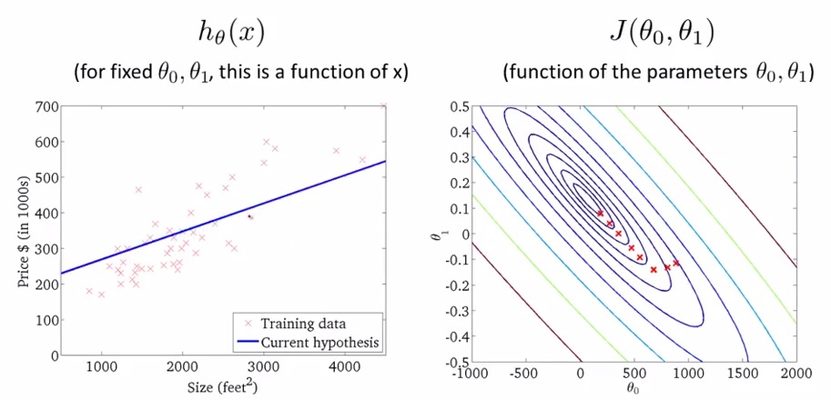
Figura 7: Representação da função custo através de linha de contorno
Os gráficos da Figura 7 minimizam a função custo ao máximo. O resultado de \( \theta _0 \) e \( \theta _1 \) tende a ficar em torno de 250 e 0.12, respectivamente. Em outras palavras, a melhor aproximação da função custo está mais no centro das linhas de contorno. Chamamos o método de minimização da função custo de método do gradiente descendente que será discutido na Seção Gradiente Descendente (Gradient Descent).
Gradiente Descendente (Gradient Descent)
O método do gradiente descendente pode ser utilizado para minimizar o valor de uma função. Utilizaremos esse método a fim de minimizar a função \( J(\theta _0 , \theta _1) \).
Podemos representar esse método a partir de um gráfico em três dimensões, onde \( \theta _0 \) está no eixo \( x, \theta _1 \) está no eixo \( y \) e o valor da função \( J(\theta _0 , \theta _1) \) está no eixo \( z \), conforme está representado na Figura 8. Os pontos no gráfico são os resultados da função custo utilizando a função hipótese \( h(x) \) com as entradas \( \theta _0 \) e \( \theta _1 \).
Figura 8: Representação da função gradiente descendente
O método de minimização utilizando a função gradiente descendente pode ser pensado como um algoritmo, que para cada ponto, a partir do inicial, dado como entrada, escolhe a descida mais íngreme do valor de \( J(\theta _0 , \theta _1) \) na função através de derivadas parciais e um valor \( \alpha \) (learning rate) que determinará a distância entre cada descida. Obtemos sucesso, quando a função custo estiver em um dos mínimos do gráfico, como representado pelas setas vermelhas na Figura 8.
Algoritmo Gradiente Descendente
Algorithm 1 Algoritmo Gradiente Descendente
1: procedure
2: repeat
3: \( \theta _j := \theta _j - \alpha \frac{\partial}{\partial \theta _j} J(\theta _0, \theta _1) \) \( \rhd \) (para \( j=0 \dots m \))
4: until \( convergir \)
5: end procedure
Enquanto o método de gradiente descendente não convergir para o mínimo da função, a cada iteração, atualizamos simultaneamente os valores de \( \theta _1, \theta _2, \dots , \theta _n \) fazendo com que esses valores se aproximem cada vez mais ao mínimo da função.
Podemos perceber que o valor de \( \alpha \) tem um certo impacto na atualização dos valores de \( \theta \). Valores de \( \alpha \) pequenos, a convergência do método gradiente descendente é mais lenta. E para valores de \( \alpha \) muito grandes, a convergência do método gradiente pode ultrapassar o mínimo, o que pode impossibilitar a convergência da função.
Gradiente Descendente para Regressão Linear
Podemos utilizar o método de gradiente descendente para minimizar a função Mean squared error utilizada no algoritmo de regressão linear, substituído a função \( J(\theta _0, \theta _1) \) por nossa função hipótese. Dessa forma, o algoritmo de gradiente descendente para a minimização da função \( J \) terá a seguinte estrutura:
Algorithm 2 Algoritmo Gradiente Descendente Para Minimização Da Função J
1: procedure
2: repeat
3: \( \theta _0 := \theta _0 - \alpha \frac{1}{m} \sum _{i=1} ^m (h _{\theta}(x ^{(i)}) - y ^{(i)}) \)
4: \( \theta _1 := \theta _1 - \alpha \frac{1}{m} \sum _{i=1} ^m (h _{\theta}(x ^{(i)}) - y ^{(i)}) \cdot x ^{(i)} \)
5: until \( convergir \)
6: end procedure
Onde \( m \) é o tamanho do conjunto de treino; \( \theta _0 \) uma constante que será atualizada simultaneamente com \( \theta _1 \); e \( x ^{(i)}, y ^{(i)} \) são valores dados no conjunto de treino.
Esse algoritmo é aplicado para todos os valores dados no conjunto de treino, chamamos isso de batch gradient descent. Dessa forma, quando aplicamos o algoritmo, a função \( J \) possui apenas um mínimo global (sem outros mínimos locais). Portanto, a função de gradiente descendente sempre converge para regressões lineares, pois \( J \) é uma função quadrática convexa.
Nas próximas seções, veremos alguns métodos de otimização desse algoritmo utilizando álgebra linear.
Álgebra linear
Nesta seção, serão revisados, brevemente, alguns conceitos básicos da álgebra linear, como por exemplo operações com matrizes, inversa e transposta de matrizes e suas propriedades.
Matrizes e vetores
Matrizes são arrays bidimensionais.
\[ \large{} M _3 = \begin{bmatrix} a && b && c \\ d && e && f \\ g && h && i \end{bmatrix} \]
A matriz acima é considerada uma matriz 3x3.
Vetores são matrizes com apenas uma coluna e diversas linhas (matriz coluna).
\[ \large{} v = \begin{bmatrix} a _1 \\ a _2 \\ a _3 \end{bmatrix} \]
Como podemos perceber, vetores são um subconjunto de matrizes, e o vetor acima é uma matriz 3x1.
Dessa forma, podemos definir algumas notações referentes a matrizes e vetores.
-
\( A _{ij} \) se refere ao elemento que se encontra na i-ésima linha e na j-ésima coluna;
-
Um vetor com 'n' linhas é um vetor 'n'-dimensional;
-
\( v _i \) se refere ao i-ésimo elemento do vetor;
Operações básicas com matrizes e vetores
A adição e subtração de vetores são operações unitárias referentes a cada linha do vetor.
\[ \large{} v + u = \begin{bmatrix} v _1 \\ v _2 \\ v _3 \end{bmatrix} + \begin{bmatrix} u _1 \\ u _2 \\ u _3 \end{bmatrix} = \begin{bmatrix} v _1 + u _1 \\ v _2 + u _2 \\ v _3 + u _3 \end{bmatrix} \]
Para multiplicarmos ou dividirmos um valor escalar por um vetor é usada a mesma lógica.
\[ \large{} v \cdot x = \begin{bmatrix} v _1 \\ v _2 \\ v _3 \end{bmatrix} \cdot x = \begin{bmatrix} v _1 \cdot x \\ v _2 \cdot x \\ v _3 \cdot x \end{bmatrix} \]
Multiplicação entre matrizes e vetores
Para realizar a multiplicação entre uma matriz e um vetor, realizamos a multiplicação no sentido "linha \( \times \) coluna" conforme a expressão abaixo:
\[ \large{} M _2 \times v = \begin{bmatrix} a && b \\ c && d \end{bmatrix} \times \begin{bmatrix} v _1 \\ v _2 \end{bmatrix} = \begin{bmatrix} a \times v _1 + b \times v _2 \\ c \times v _1 + d \times v _2 \end{bmatrix} \]
Ao multiplicarmos uma matriz \( A _{ij} \) por um vetor \( v \) com \( j \) linhas, teremos como resultado uma matriz \( B _{i1} \).
Multiplicação entre duas matrizes
Para realizar a multiplicação entre duas matrizes seguimos a mesma lógica apresentada na Seção Multiplicação entre matrizes e vetores multiplicando no sentido "linha \( \times \) coluna".
\[ A _2 \times B _2 = \begin{bmatrix} a _1 && b _1 \\ c _1 && d _1 \end{bmatrix} \times \begin{bmatrix} a _2 && b _2 \\ c _2 && d _2 \end{bmatrix} = \begin{bmatrix} a _1 \times a _2 + b _1 \times c _2 && a _1 \times b _2 + b _1 \times d _2 \\ c _1 \times a _2 + d _1 \times c _2 && c _1 \times b _2 + d _1 \times d _2 \end{bmatrix} \]
Ao multiplicarmos duas matrizes \( A _{mxn} \) e \( B _{nxo} \) teremos uma matriz \( C _{mxo} \). Dessa forma, podemos definir algumas propriedades relacionadas às operações com matrizes:
-
Multiplicação de matrizes não são comutativas, ou seja, \( A \times B \neq B \times A \)
-
Multiplicação de matrizes são associativas, ou seja, \( (A \times B) \times C = A \times (B \times C) \)
Matriz identidade, inversa e transposta
A matriz identidade é aquela que, ao ser multiplicada por uma outra matriz de mesma dimensão, resulta na matriz original. Em outras palavras, é uma matriz onde há apenas '1's' na sua diagonal principal.
\[ \large{} I _3 = \begin{bmatrix} 1 && 0 && 0 \\ 0 && 1 && 0 \\ 0 && 0 && 1 \end{bmatrix} \]
A inversa de uma matriz, denotada por \( A ^{-} \) é aquela que, ao ser multiplicada por \( A \), resulta na matriz identidade \( I \) de \( A \). Em outras palavras:
\[ \large{} A \times A ^{-1} = I \]
A matriz transposta da matriz \( A _{ij} \) é a matriz \( A _{ji} ^T \). Trata-se da matriz que vamos obter quando reescrevemos a matriz \( A _{ij} \) trocando de posição as linhas e colunas, transformando a primeira linha de \( A _{ij} \) na primeira coluna de \( A _{ji} ^T \), a segunda linha de \( A _{ij} \) na segunda coluna de \( A _{ji} ^T \), e assim sucessivamente.
\[ \large{} A _{ij} = A _{ji} ^T \]
\[ \large{} A = \begin{bmatrix} a && b \\ c && d \\ e && f \end{bmatrix} , A ^T = \begin{bmatrix} a && c && e \\ b && d && f \end{bmatrix} \]
Regressão Linear com múltiplas variáveis
Nesta seção iremos introduzir os conceitos básicos para a aplicação do algoritmo de regressão linear para múltiplas entradas. Em outras palavras, iremos tentar estimar o valor da saída \( y \) a partir de diversos parâmetros de entrada.
Múltiplos parâmetros de entrada
Precisamos definir algumas notações que serão utilizadas.
-
\( x _j ^{(i)} = \) valor do parâmetro \( j \) no i-ésimo exemplo de treino;
-
\( x ^{(i)} = \) valor dos parâmetros no i-ésimo exemplo de treino (vetor);
-
\( m = \) número de exemplos de treino;
-
\( n = \) número de parâmetros;
Com isso, podemos definir a função hipótese para múltiplos parâmetros da seguinte forma:
\[ \large{} h _{\theta}(x) = \theta _0 + \theta _1 x _1 + \theta _2 x _2 + \theta _3 x _3 + \dots + \theta _n x _n \]
Sendo \( \theta _i \) os parâmetros de entrada da função
Podemos utilizar as definições de matrizes anteriormente vistas na Seção Álgebra Linear para definir a função hipótese de múltiplas variáveis da seguinte forma:
\[ \large{} h _{\theta}(x) = \begin{bmatrix} \theta _0 && \theta _1 && \theta _2 && \dots && \theta _n \end{bmatrix} \begin{bmatrix} x _0 \\ x _1 \\ x _2 \\ \dots \\ x _n \end{bmatrix} = \theta ^T x \]
É importante mencionar que o valor de \( x _0 ^{(i)} = 1 \) para \( (i \in 1, \dots ,m) \) por convenção.
Gradiente Descendente com múltiplas variáveis
Da mesma forma apresentada na Seção Função Custo (Cost Function), teremos as seguintes predefinições das funções que serão utilizadas a fim de minimizar o custo da função \( J \) com múltiplas variáveis de entrada.
-
Hipótese: \( h _{\theta}(x) = \theta _0 + \theta _1 x _1 + \theta _2 x _2 + \theta _3 x _3 + \dots + \theta _n x _n \);
-
Parâmetros: \( \theta _0, \theta _1, \dots , \theta _n \) (vetor (n+1)-dimensional);
-
Função Custo: \( J(\theta _0, \theta _1, \dots , \theta _n)= \frac{1}{2m} \sum _{i=1} ^m (h _{\theta}(x _i) - y _i) ^2 \)
O algoritmo gradiente descendente, em geral, tem a mesma estrutura para os diferentes problemas. Nós apenas temos que iterar sobre os \( n \) parâmetros de entrada, atualizando-os simultaneamente.
Algorithm 3 Algoritmo Gradiente Descendente Para Múltiplas Variáveis
1: procedure
2: repeat
3: \( \theta _j := \theta _j - \alpha \frac{1}{m} \sum _{i=1} ^m (h _{\theta}(x ^{(i)}) - y ^{(i)}) \cdot x _j ^{(i)} \) \( \rhd \) para \( j := 0 \dots n \)
4: until \( convergir \)
5: end procedure
Podemos otimizar o algoritmo gradiente descendente colocando todos os parâmetros no mesmo intervalo. Esse tipo de operação é muito importante para evitar que o gradiente trabalhe com valores muito grandes que possam causar "explosão", ou muito pequenos que possam ser zero, o que pode se tornar um problema para o treinamento do algoritmo de aprendizado.
Para isso, utilizaremos da técnica de normalização média (mean normalization ou feature scaling). Feature scaling envolve dividir os dados de entrada por um intervalo (desvio padrão, ou uma subtração entre o maior e o menor valor das variáveis de entrada) resultando em um valor próximo de 1. Mean normalization envolve subtrair o valor médio das variáveis de entrada de cada variável de entrada. Dessa forma, teremos a seguinte fórmula:
\[ \large{} x _i = \frac{x _i - \mu _i}{s _i} \]
onde \( \mu _i \) é a média de todos os parâmetros de entrada e \( s _i \) é a variação dos valores de entrada \( max - min \), ou o desvio padrão.
Com isso, teremos os valores de entrada em um mesmo intervalo, sem valores discrepantes para o cálculo da função custo e da otimização pelo gradiente descendente. Com os valores normalizados, evitamos diversos problemas que foram acima mencionados e o custo computacional para o cálculo das derivadas parciais é diminuído.
Para ter certeza que o método do gradiente descendente está funcionando corretamente, o valor de \( J(\theta) \) deve diminuir a cada iteração e convergir para um valor próximo de zero. Caso o valor de \( J(\theta) \) não esteja convergindo, podemos tentar um valor menor de \( \alpha \).
Equação Normal (Normal Equation)
É um outro método de minimização da função \( J \), assim como o método de gradiente descendente. Essa forma de implementação, muitas vezes pode otimizar o tempo de processamento da função de minimização através de derivadas da função \( J \) a respeito aos \( \theta ' _j \)s igualando-os a zero. Isso nos permite encontrar o valor ótimo para \( \theta \) sem iterações. Fórmula da equação normal é dada abaixo:
\[ \large{} \theta = (X ^T X) ^{-1} X ^T y \]
onde \( X \) é uma matriz na qual a coluna zero tem todos os elementos iguais a 1.
Dessa forma, podemos comparar as duas formas de implementação que temos: Gradient Descent e Normal Equation.
Tabela 1: Comparação entre os métodos Gradient Descent e Normal Equation
| Gradient Descent | Normal Equation |
|---|---|
| É necessário definir o valor de \( \alpha \) | Não é necessário definir o valor de \( \alpha \) |
| Muitas iterações são necessárias | Não são necessárias iterações |
| \( O(kn ^2) \) | \( O(n ^3) \) pois precisa calcular a inversa de \( X ^T X \) |
| Funciona bem quando o valor de \( n \) é grande | Lento quando o valor de \( n \) é grande |
Classificação
Problemas de classificação
O método de classificação tem como objetivo classificar um conjunto de dados entre estados ou tipos distintos. Um bom exemplo de um problema de classificação é quando queremos prever se um tumor é maligno ou benigno baseando-se apenas no tamanho do tumor.
Podemos usar o algoritmo de regressão linear para classificar uma base de dados em dois diferentes grupos, como por exemplo, para valores de \( h(x) > 0.5 \) e para valores \( h(x) \leq 0.5 \). Contudo, essa forma de implementação não funciona muito bem, pois os problemas de classificação, geralmente, não cabem em problemas de regressão linear.
De outra forma, gostaríamos de classificar nossa base de dados em saídas discretas. Como base, iremos nos focar nos problemas de classificação binários (binary classification problems), os quais os valores de \( y \) podem assumir apenas dois valores: zero ou um, em outras palavras \( y \in 0,1 \).
Podemos representar um problema de classificação através da imagem a seguir na Figura 9
Figura 9: Representação de um problema de classificação
Podemos perceber que na Figura 9 temos dois tipos de classificações: linearmente separáveis e não linearmente separáveis. Nesta seção iremos discutir os problemas binários linearmente separáveis sem necessidade de regularização da função.
Representação da hipótese
Podemos utilizar o nosso antigo algoritmo de regressão linear para prever um valor de \( y \) discreto dado um valor de \( x \). Mas como foi mencionado anteriormente, essa não é uma boa solução para problemas de classificação e para isso, devemos modificar a função hipótese a fim de satisfazer a saída discreta dos problemas de classificação, ou seja, \( 0 \geq h _{\theta}(x) \geq 1 \).
Uma boa modificação seria basear a nossa função hipótese na função logística (Logistic Function) de forma que possamos nos basear na função sigmoide conforme representada na Figura 10. Em outras palavras, teremos:
\[ \large{} h _{\theta}(x) = g(\theta ^T x), \ z = \theta ^T x, \ g(z) = \frac{1}{1 + e ^{-z}} \]
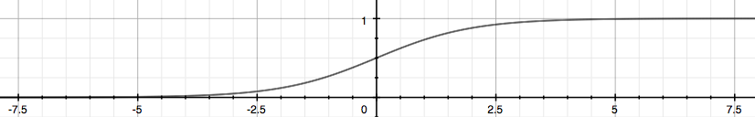
Figura 10: Representação da função sigmoide
A função sigmoide mapeia um valor real em um valor no intervalo \( (0,1) \) fazendo com que seja a melhor forma de implementação de problemas de classificação.
Dessa forma, podemos chegar a algumas conclusões e interpretações dessa nova forma de implementação da função hipótese:
-
\( h _{\theta}(x) \) nos dá a probabilidade da nossa saída ser 1.
-
\( h _{\theta}(x)=P(y=1|x; \theta )=1-P(y=0|x; \theta )P(y=0|x; \theta )+P(y=1|x; \theta )=1 \)
Limite de decisão (Decision Boundary)
É uma forma de encontrarmos o limite entre os valores discretos que temos na saída da função hipótese. Em outras palavras, podemos traduzir este pensamento da seguinte forma:
\[ \large{} h _{\theta}(x) \geq 0.5 \rightarrow y = 1 \]
\[ \large{} h _{\theta}(x) < 0.5 \rightarrow y = 0 \]
pois nossa função sigmoide se comporta de tal forma que quando a entrada \( z(x) = \theta ^T x \geq 0 \) o valor da função \( g(z) \geq 0.5 \).
Dessa forma, o limite de decisão é a linha que separa a área entre os valores classificados, ou como \( y=0 \), ou como \( y=1 \). Esses valores discretos representam as duas classes do problema de classificação binário. Em outras palavras, o limite de decisão é uma curva que separa essas duas classes.
Podemos utilizar outras estruturas de funções para gerarmos diferentes limites de decisão de acordo com a nossa base de dados. Por exemplo se nossos parâmetros dividem áreas circulares, podemos utilizar uma função \( z = \theta _0 + \theta _1 x _1 ^2 + \theta _2 x _2 ^2 \).
Classificação Multiclasse
A classificação multiclasse é uma definição para quando temos além de apenas uma saída binária na função hipótese. Ou seja, podemos classificar os nossos dados em mais de duas classificações. A Figura 11 representa um problema de classificação multiclasse utilizando o método one-vs-all.

Figura 11: Representação de um problema de classificação multiclasse
No método de classificação one-vs-all treinamos \( N \) classificadores lineares distintos que são projetados para reconhecer cada classe. Para cada classe distinta aplicamos uma regressão logística binária e utilizamos o valor retornado da função hipótese para classificar os dados. Em outras palavras, geramos um limite de decisão aplicando a regressão logística para cada classe de acordo com as outras. Então, se temos \( N \) classes de entrada, roda-se o algoritmo de regressão logística \( N \) vezes para cada uma dessas classes, retornando \( N \) valores distintos de \( h \) para cada uma das classes.
Regressão Logística (Logistic Regression)
Função Custo (Cost Function)
Nas seções anteriores, discutimos a implementação da função custo para a regressão linear. Entretanto, para a regressão logística, utilizaremos uma função hipótese voltada para os problemas de classificação. Na Figura 10 está representada a função logística que será utilizada para calcular a hipótese do problema. Essa função gera valores probabilísticos no intervalo \( [0,1] \) e, com isso, podemos calcular o valor da função custo de forma que possamos comparar a probabilidade da nossa hipótese ser igual a 1 com o resultado \( y \) esperado.
Para realizar essa comparação, devemos realizar algumas manipulações algébricas de forma que possamos definir uma função \( J(\theta) \) que calcule o custo. Abaixo, está descrita a intuição dessa manipulação.
\[ \large{} J(\theta) = \frac{1}{m} \sum _{i=1} ^m Cost(h _{\theta}(x ^{(i)}), y ^{(i)}) \]
\[ \large{} Cost(h _{\theta}(x ^{(i)}), y) = - \log (h _{\theta}(x)) \ se \ y=1 \]
\[ \large{} Cost(h _{\theta}(x ^{(i)}), y) = - \log (1 - h _{\theta}(x)) \ se \ y=0 \]
Dessa forma, podemos ter duas diferentes funções para a representação da função custo para a regressão logística. Como podemos ver na Figura 12 temos duas representações, para \( y=1 \) em azul e para \( y=0 \) em vermelho.

Figura 12: Representação da função custo da regressão logística
\[ \large{} Cost(h _{\theta}(x ^{(i)}), y) = 0 \ \ se \ \ h _{\theta}(x) = y \]
\[ \large{} Cost(h _{\theta}(x ^{(i)}),y) \rightarrow \infty \ \ se \ \ y=0 \ \ e \ \ h _{\theta}(x) \rightarrow 1 \]
\[ \large{} Cost(h _{\theta}(x ^{(i)}),y) \rightarrow \infty \ \ se \ \ y=1 \ \ e \ \ h _{\theta}(x) \rightarrow 0 \]
Podemos perceber que quando o valor da função custo é zero, então o valor da função hipótese é igual a \( y \). Além disso, quando a função custo tende ao infinito e o valor de \( y \) é igual a zero, o valor da função hipótese tende a um e se o valor de \( y \) é igual a um, a função hipótese tende a zero.
A fim de simplificar a função custo, podemos reescrevê-la da seguinte forma sem alterar o valor do resultado:
\[ \large{} Cost(h _{\theta}(x),y) = -y \cdot \log (h _{\theta}(x)) - (1-y) \cdot \log (1-h _{\theta}(x)) \]
Com isso, podemos generalizar a função custo de acordo com a expressão abaixo:
\[ \large{} J(\theta)=- \frac{1}{m} \sum _{i=1} ^m \Big[ y ^{(i)} \cdot \log (h _{\theta}(x ^{(i)})) + (1-y ^{(i)}) \cdot \log (1-h _{\theta}(x ^{(i)})) \Big] \]
Gradiente Descendente para Regressão Logística
Da mesma forma que o método de regressão linear, o algoritmo do gradiente descendente funciona iterando sobre os valores de \( \theta \) e derivando a função custo \( J \) em relação a \( \theta \).
Assim, podemos descrever o método através do seguinte algoritmo:
Algorithm 4 Algoritmo Gradiente Descendente Para Regressão Logística
1: procedure
2: repeat
3: \( \theta _j := \theta _j - \frac{\alpha}{m} \sum _{i=1} ^m (h _{\theta}(x ^{(i)})-y ^{(i)}) \cdot x _j ^{(i)} \) \( \rhd \) Atualiza simultaneamente todos \( \theta _j\)
4: until \( convergir \)
5: end procedure
ou através da forma vetorizada:
\[ \large{} \theta := \theta - \frac{\alpha}{m} X ^T (g(X \theta)- \overset{\rightarrow}y) \]
Dessa forma, podemos utilizar dos métodos vistos anteriormente para implementar o algoritmo de regressão logística. Contudo, ainda podemos utilizar de técnicas de computação numérica para otimizar os algoritmos. Como por exemplo Conjugate gradient, BFGS e L-BFGS que podemos utilizar a fim de otimizar o método de gradiente descendente.
Underfitting e overfitting
Quando tentamos prever um valor \( y \) a partir de um conjunto de treino, podem-se ocorrer alguns problemas relacionados a função de hipótese. Esses problemas são chamados de underfitting e overfitting. Para explicá-los, podemos nos basear na Figura 13
Figura 13: Representação dos problemas de underfitting e overfitting
Como podemos perceber, na figura mais à esquerda, temos uma função linear do tipo \( y= \theta _0 + \theta _1x \) que não seja ajusta adequadamente com a nossa base de treino. Na figura do centro temos uma função quadrática do tipo \( y= \theta _0 + \theta _1x + \theta _2x ^2 \), que aparentemente se adapta muito bem a nossa base de dados. E na figura mais à direita, temos um polinômio de grau cinco que atinge todos os pontos da nossa base de dados.
Com isso, podemos dizer que a figura mais à esquerda apresenta o problema de subajuste (underfitting ou high bias) e a figura mais à direita apresenta o problema de sobreajuste (overfitting ou high variance).
O problema de underfitting ocorre quando a função hipótese \( h \) não consegue mapear com consistência os valores da saída pois uma função muito simples é utilizada ou foram utilizados poucos parâmetros de entrada.
De outra forma, o problema de overfitting ocorre quando a função hipótese se adapta perfeitamente a nossa base de treino, mas não consegue generalizar os resultados das entradas. Isso ocorre, pois uma função muito complexa foi utilizada ou o número de parâmetros utilizados como entrada da função é muito alto.
Assim, temos alguns métodos que podemos utilizar para evitar esse tipo de problema. Dois são principais e estão listados abaixo:
-
Reduzir o número de parâmetros:
-
Manualmente selecionar os parâmetros a serem removidos;
-
Usar algoritmo de modelo de seleção [16].
-
-
Regularização (Regularization):
- Manter todos os parâmetros, mas reduzir a magnitude dos parâmetros de \( \theta _j \);
Função custo em casos de overfitting
Em casos de overfitting na função hipótese, podemos reduzir o peso dos termos de maior grau, aumentando o seu custo.
Para isso, podemos utilizar do método de regularização para aumentar o custo de determinadas variáveis. Por exemplo, se tivermos uma função hipótese com quatro parâmetros, teremos uma função de grau quatro do tipo \( \theta _0 + \theta _1x + \theta _2x ^2 + \theta _3x ^3 + \theta _4x ^4 \). Através da regularização, podemos reduzir o problema diminuindo a influência dos termos de grau três e quatro.
Podemos modificar a função custo a fim de reduzir os valores de \( \theta _3 \) e \( \theta _4 \) e aumentar os valores de \( \theta _1 \) e \( \theta _2 \) da seguinte forma:
\[ \large{} min _{\theta} \ \frac{1}{2m} \sum _{i=1} ^m \Big( h _{\theta}(x ^{(i)}) - y ^{(i)} \Big) ^2 + \lambda \sum _{j=1} ^n \theta _j ^2 \]
Chamamos a expressão acima de função custo regularizada. O valor de \( \lambda \) representa o parâmetro de regularização e determina o quanto os custos dos parâmetros de \( \theta \) serão inflados. Caso selecionarmos um valor muito alto para \( \lambda \), a função custo resultará em underfitting. Para isso devemos escolher estrategicamente o valor de \( \lambda \).
Para exemplificar o método de regularização em casos de overfitting, podemos analisar a Figura 13 na seção anterior. Na imagem central, a curva representada em azul descreve a situação ótima do limite de decisão para os dados. A regularização transforma uma curva complexa em overfitting em uma curva ótima regularizada.
Regressão linear regularizada
Podemos utilizar o conceito de regularização para evitar problemas de overfitting no método de regressão linear.
É possível modificar o método gradiente descendente de forma que consigamos regularizar a atualização do valor de \( \theta \) conforme visto na Seção Gradiente Descendente (Gradient Descent):
Algorithm 5 Algoritmo Gradiente Descendente Para Regressão Linear Regularizado
1: procedure
2: repeat
3: \( \large{} \theta _0 := \theta _0 - \frac{\alpha}{m} \sum _{i=1} ^m \Big( h _{\theta}(x ^{(i)}) - y ^{(i)} \Big) \cdot x _0 ^{(i)} \)
4: \( \large{} \theta _j := \theta _j - \Big[ \Big( \frac{1}{m} \sum _{i=1} ^m (h _{\theta}(x ^{(i)}) - y ^{(i)}) \cdot x _j ^{(i)} \Big) + \frac{\lambda}{m} \theta _j \Big] \) \( \rhd j \in 1,2, \dots , n \)
5: until \( convergir \)
6: end procedure
Podemos perceber que atualizamos o valor de \( \theta _0 \) separadamente a fim de focarmos apenas nos termos de maior grau.
Além disso, podemos representar o mesmo algoritmo através da equação normal - descrita na Seção Equação Normal (Normal Equation) - da seguinte forma:
\[ \large{} \theta = (X ^T X + \lambda \cdot L) ^{-1} X ^T y \]
\[ \large{} onde \ L = \begin{bmatrix} 0 && 0 && 0 && 0 && \dots && 0 \\ 0 && 1 && 0 && 0 && \dots && 0 \\ 0 && 0 && 1 && 0 && \dots && 0 \\ 0 && 0 && 0 && 1 && \dots && 0 \\ 0 && 0 && 0 && 0 && \ddots && 0 \\ 0 && 0 && 0 && 0 && \dots && 1 \end{bmatrix} \]
Regressão logística regularizada
Podemos regularizar a regressão logística da mesma forma que regularizamos a função \( J \) para a regressão linear. Com isso, podemos evitar casos de overfitting no método de regressão logística.
Assim, podemos escrever a função \( J(\theta) \) da seguinte forma:
\[ J(\theta) =- \frac{1}{m} \sum _{i=1} ^m \Big[ y ^{(i)} \log (h _{\theta}(x ^{(i)})) + (1-y ^{(i)}) \log (1-h _{\theta}(x ^{(i)})) \Big] + \frac{\lambda}{2m} \sum _{j=1} ^n \theta _j ^2 \]
Com isso, da mesma forma que na regressão linear, podemos escrever o algoritmo gradiente descendente com a regularização da função \( J \).
Algorithm 6 Algoritmo Gradiente Descendente Para Regressão Logística Regularizado
1: procedure
2: repeat
3: \( \large{} \theta _0 := \theta _0 - \frac{\alpha}{m} \sum _{i=1} ^m \Big( h _{\theta}(x ^{(i)}) - y ^{(i)} \Big) \cdot x _0 ^{(i)} \)
4: \( \large{} \theta _j := \theta _j - \alpha \Big[ \frac{1}{m} \sum _{i=1} ^m (h _{\theta}(x ^{(i)})-y ^{(i)}) \cdot x _j ^{(i)} + \frac{\lambda}{m} \theta _j \Big] \) \( \rhd j \in 1,2, \dots , n \)
5: until \( convergir \)
6: end procedure
Parte III
Redes Neurais
Redes Neurais: Representação
Definição básica
Redes neurais (do inglês Neural Networks ou NNs) são sistemas de computação com nós interconectados que funcionam como os neurônios do cérebro humano. Usando algoritmos, elas podem reconhecer padrões escondidos e correlações em dados brutos, agrupá-los e classificá-los.
Hipótese não-linear
Nesta seção iremos discutir os principais fundamentos da hipótese não linear e as motivações para a criação de sistemas de redes neurais.
Como vimos nas seções anteriores, para um problema de classificação não linear podemos expandir a nossa função hipótese para mais termos e, para isso, devemos usar métodos de regularização para manter o treino consistente e sem problemas de overfitting.
Problemas de redes neurais são utilizados para modelar problemas da vida real. Um bom exemplo seria quando, a partir de um conjunto de fotos, queremos determinar se uma foto é de um carro ou não. Um algoritmo utilizando redes neurais analisa cada pixel da foto e compara com os valores adquiridos no treino. Esse tipo de problema também é um algoritmo de classificação, porém, agora, utilizando redes neurais devido à sua complexidade.
Os Neurônios e o Cérebro
Problemas utilizando redes neurais são relativamente antigos, tendo sua origem entre os anos 80 e 90. O objetivo era, basicamente, modelar o cérebro humano através de algoritmos. Por exemplo, uma função hipótese seria modelar o córtex auditivo a fim de reconhecimento de áudio, ou a área de associação visual responsável pela visão.
Biologicamente, o cérebro humano é composto por estruturas nervosas chamadas de neurônios. Neurônios são células responsáveis pela transmissão dos impulsos nervosos e constituem cerca de 10% do tecido nervoso. Eles são constituídos basicamente por três estruturas: corpo celular, dendritos e axônio, como está representado na Figura 14.

Figura 14: Representação estrutural de um neurônio humano.
Baseando-se nessa estrutura, as redes neurais tem como objetivo modelar computacionalmente as funções especificadas dos neurônios, como por exemplo, entendimento e geração de texto, análise e classificação de imagens, entre outros.
Na seção seguinte serão apresentadas as modelagens principais das redes neurais artificiais.
Representação do modelo
A partir de uma análise biológica do cérebro humano, sabemos que dois neurônios se comunicam através de impulsos nervosos chamados de sinapses. A informação recebida por um neurônio passa, primeiramente, pelos dendritos e vai em direção ao axônio. Podemos modelar essas informações a fim de gerar um modelo matemático que represente um neurônio da seguinte forma:
-
Dendrito: entrada da função \( (x _1, \dots , x _n) \);
-
Axônio: função hipótese \( (h _{\theta}(x)) \);
Nas redes neurais, utilizamos a mesma função utilizada na regressão logística \( \large{} \frac{1}{1+e ^{-z}} \), a qual chamamos de "ativação" da função e os parâmetros \( \Theta \) são chamados de "pesos". Podemos perceber na Figura 15 que o neurônio possui três camadas, as quais chamamos de camada de entrada (input layer), camada escondida (hidden layer) e camada de saída (output layer). A camada de saída também pode ser chamada de função hipótese \( h _{\Theta} \).
Com isso, devemos adicionar algumas notações relacionadas às redes neurais.
-
Chamamos de \( x _0, x _1, \dots , x _n \) os valores da input layer, onde \( x _0 = 1 \) (bias unit);
-
\( a _i ^{(j)} \) é unidade de "ativação" \( i \) na camada \( j \);
-
\( \Theta ^{(j)} \) é a matriz de pesos que controla o mapeamento da função da camada \( j \) para a camada \( j+1 \).

Figura 15: Representação de uma rede neural
Na Figura 15 podemos perceber que para gerar a saída (função hipótese) passamos por uma input layer e uma hidden layer. Com isso, podemos descrever uma equação para que possamos determinar o valor da saída partindo dos parâmetros acimas identificados.
\[ \large{} a _1 ^{(2)} = g( \Theta _{10} ^{(1)} x _0 + \Theta _{11} ^{(1)} x _1 + \Theta _{12} ^{(1)} x _2 + \Theta _{13} ^{(1)} x _3) \]
\[ \large{} a _2 ^{(2)} = g( \Theta _{20} ^{(1)} x _0 + \Theta _{21} ^{(1)} x _1 + \Theta _{22} ^{(1)} x _2 + \Theta _{23} ^{(1)} x _3) \]
\[ \large{} a _3 ^{(2)} = g( \Theta _{30} ^{(1)} x _0 + \Theta _{31} ^{(1)} x _1 + \Theta _{32} ^{(1)} x _2 + \Theta _{33} ^{(1)} x _3) \]
\[ \large{} h _{\Theta}(x) = a _1 ^{(3)} = g( \Theta _{10} ^{(2)} a _0 ^{(2)} + \Theta _{11} ^{(2)} a _1 ^{(2)} + \Theta _{12} ^{(2)} a _2 ^{(2)} + \Theta _{13} ^{(2)} a _3 ^{(2)}) \]
Percebe-se que a matriz \( \Theta \) é uma matriz de tamanho \( 3 \times 4 \) (3 = número de parâmetros na camada dois e 4 = número de parâmetros de entrada). Quando aplicamos a função sigmoide para cada uma das camadas, nós obtemos o nodo de ativação da próxima camada. Assim, a função hipótese é a função logística aplicada na soma dos valores dos nodos de ativação os quais são multiplicados pelo parâmetro da matriz \( \Theta ^{(2)} \) que contém os valores dos pesos da segunda camada de nodos.
Com isso, temos a seguinte definição:
Se uma rede neural tem \( s _j \) unidades na camada \( j \) e \( s _{j+1} \) unidades na camada \( j+1 \), então \( \Theta ^{(j)} \) terá dimensões \( s _{j+1} \times (s _j + 1) \).
Com as definições vistas acima, podemos introduzir uma implementação vetorizada das funções vistas. Para isso, iremos definir uma variável \( z _k ^{(j)} \) que engloba os parâmetros dentro da função \( g \). Assim, teríamos:
\[ \large{} a _1 ^{(2)} = g(z _1 ^{(2)}) \]
\[ \large{} a _2 ^{(2)} = g(z _2 ^{(2)}) \]
\[ \large{} a _3 ^{(2)} = g(z _3 ^{(2)}) \]
Em outras palavras, para a camada \( j=2 \), a função \( z \) seria:
\[ \large{} z _k ^{(2)} = \Theta _{k,0} ^{(1)} x _0 + \Theta _{k,1} ^{(1)} x _1 + \Theta _{k,2} ^{(1)} x _2 + \dots + \Theta _{k,n} ^{(1)} x _n \]
E a função vetorizada teria a forma:
\[ \large{} x = \begin{bmatrix} x _0 \\ x _2 \\ \dots \\ x _n \end{bmatrix} , z ^{(j)} = \begin{bmatrix} z _1 ^{(j)} \\ z _2 ^{(j)} \\ \dots \\ z _n ^{(j)} \end{bmatrix} \]
Com \( x = a ^{(1)} \) teremos:
\[ \large{} z ^{(j-1)} = \Theta ^{(j-1)} a ^{(j-1)} \]
Com essas manipulações temos que a função hipótese pode ser definida da seguinte forma:
\[ \large{} h _{\Theta}(x) = a ^{(j+1)} = g(z ^{(j+1)}) \]
Aplicações
Mas afinal, para que uma rede neural pode ser útil? Ao longo das últimas décadas, a área de pesquisa que envolve redes neurais está se desenvolvendo de maneira significativa. Apesar desse desenvolvimento ainda estar no começo, já foram descobertas diversas aplicações de redes neurais, como podem ser vistas a seguir:
-
Computer Vision: reconhecimento de objetos, emoções, etc;
-
Natural Language Processing (NLP): reconhecimento de discursos e tradução de idiomas;
-
Deep Q-Network (DQN) e Asynchronous Actor-Critic Agents (A3C) para reinforcement learning, como por exemplo Atari;
-
AlphaGo [19];
-
Aesthetic quality assessment
Para o melhor entendimento do tipo de implementação que uma rede neural linear com apenas duas camadas - input e output - podemos criar um vetor para \( \Theta ^{(1)} \) para computar a função \( x _1 AND x _2 \) da seguinte forma:
\[ \large{} \Theta ^{(1)} = \begin{bmatrix} -30 && 20 && 20 \end{bmatrix} \]
Percebemos que no exemplo não temos hidden layers. Temos a input layer seguida pelo processamento da função hipótese.
Como sabemos que, pela função sigmoide, com uma entrada de duas variáveis \( x _1 \) e \( x _2 \) teremos valores binários (0 ou 1) na saída da função hipótese \( h _{\Theta}(x)=g(-30+20x _1 + 20x _2) \). Essa ideia pode ser representada na tabela a seguir:
Tabela 2: Implementação da rede neural usando portas 'and' \( x _1 AND x _2 \)
| \( x _1 \) | \( x _2 \) | \( h _{\Theta}(x) \) |
|---|---|---|
| 0 | 0 | \( g(-30) \approx 0 \) |
| 0 | 1 | \( g(-10) \approx 0 \) |
| 1 | 0 | \( g(-10) \approx 0 \) |
| 1 | 1 | \( g(10) \approx 1 \) |
Como vimos até agora, representamos redes neurais simples com duas camadas - input e output - chamadas de Perceptrons. Contudo, esse tipo de implementação possui diversas limitações. A primeira delas foi observada ao tentar implementar a função \( XOR \). Essa limitação potencializou a criação de novas arquiteturas de redes neurais, pois a função \( XOR \) não é linearmente separável, ou seja, não se pode, de maneira linear - com apenas duas camadas - representá-la em uma rede neural. A Figura 16, abaixo, representa o surgimento desse problema.
Figura 16: No gráfico da esquerda, percebemos a aplicação da função \( OR \), cujos pontos verdes representam a saída 1 e os vermelhos a saída zero. No gráfico da esquerda, percebemos a aplicação da função \( XOR \), cujos pontos possuem a mesma representatividade. Na função \( OR \), podemos traçar uma reta que divida as classes 0 e 1 do problema, enquanto na função \( XOR \) isso não é possível devido ao fato das classes não sejam linearmente separáveis.
Uma solução para este problema foi a criação de novas camadas internas, chamadas de hidden layers, que foram discutidas na Seção Representação do modelo, dando origem a uma nova arquitetura de rede neural chamada Multilayer perceptron (MLP). Na Figura 17 abaixo, está representada a arquitetura de rede neural para a resolução do problema \( XOR\).
Figura 17: Representação da arquitetura que soluciona o problema \( XOR \). Neste caso, temos três camadas: input layer, hidden layer e output layer
A seguir, iremos discutir as diferentes arquiteturas de redes neurais para diferentes tipos de classifi- cação.
Classificação Multiclasse
Em problemas que são utilizados redes neurais, comumente são utilizados métodos de resolução desses problemas de forma multiclasse. Em outras palavras, a rede neural não terá apenas uma função hipótese como saída, \( h _{\Theta}(x) \) nesses casos será um vetor que pertence a \( \mathbb{R} ^n \).
Na Figura 18 abaixo podemos perceber que a rede neural foi construída com o objetivo de resolver um problema de classificação multiclasse, pois percebemos que a camada verde, abaixo ("layer 4"), que representa a função hipótese, é um vetor que pertence a \( \mathbb{R} ^4 \)

Figura 18: Representação de uma rede neural com classificação multiclasse
É possível escrever um programa de visão computacional para que possamos diferenciar pedestres, carros, motos e caminhões. Assim, teremos quatro nodos na output layer que representam cada um dos tipos de automóveis descritos.
\[ \large{} h _{\Theta}(x) ^1 \approx \begin{bmatrix} 1 \\ 0 \\ 0 \\ 0 \end{bmatrix} , \ h _{\Theta}(x) ^2 \approx \begin{bmatrix} 0 \\ 1 \\ 0 \\ 0 \end{bmatrix} , \ h _{\Theta}(x) ^3 \approx \begin{bmatrix} 0 \\ 0 \\ 1 \\ 0 \end{bmatrix} , \ h _{\Theta}(x) ^4 \approx \begin{bmatrix} 0 \\ 0 \\ 0 \\ 1 \end{bmatrix} \]
Onde \( h _{\Theta}(x) ^1 \) representa um pedestre, \( h _{\Theta}(x) ^2 \) representa um carro, \( h _{\Theta}(x) ^3 \) representa uma moto e \( h _{\Theta}(x) ^4 \) representa um caminhão. Dessa forma, a rede neural poderia ser modelada, em forma vetorial, da seguinte forma:
\[ \large{} \begin{bmatrix} x _0 \\ x _1 \\ x _2 \\ \dots \\ x _n \end{bmatrix} \rightarrow \begin{bmatrix} a _0 ^{(2)} \\ a _1 ^{(2)} \\ a _2 ^{(2)} \\ a _3 ^{(2)} \\ \dots \end{bmatrix} \rightarrow \begin{bmatrix} a _0 ^{(3)} \\ a _1 ^{(3)} \\ a _2 ^{(3)} \\ a _3 ^{(3)} \\ \dots \end{bmatrix} \rightarrow \dots \rightarrow \begin{bmatrix} h _{\Theta}(x) _1 \\ h _{\Theta}(x) _2 \\ h _{\Theta}(x) _3 \\ h _{\Theta}(x) _4 \end{bmatrix} \]
Redes Neurais: Aprendizado
Estrutura básica
Uma rede neural consiste em uma sequência de camadas nas quais os dados são aplicados a transformações lineares e não lineares. Cada uma dessas camadas é composta por neurônios (neurons ou units) e cada um desses neurônios estão conectados com os próximos, presentes na camada seguinte. Essas conexões são chamadas de pesos (weights) - um valor numérico. E, além disso, cada camada possui um valor fixo numérico, chamado de bias. Assim, os dados passamos como entrada começam na input layer, passando por transformações lineares e não lineares nas camadas internas até atingir a output layer.
Com isso, o aprendizado de uma rede neural tem como objetivo otimizar a função custo (loss function) de acordo com os parâmetros, geralmente através da regra da cadeia ou através do método do gradiente descendente.
Nas próximas subseções iremos discutir os conceitos fundamentais para a estruturação básica de uma rede neural, apresentando os principais modelos e arquiteturas utilizados.
Camada linear
Como foi apresentado nas seções anteriores, uma rede neural possui diversas camadas e cada uma delas executa uma função sobre um dado. A primeira camada que iremos discutir é a camada mais básica, a qual executa transformações lineares sobre os dados. A camada linear - do inglês linear layer - realiza o treino das camadas intermediárias da rede neural baseado no método de regressão linear (Seção Regressão linear).
A camada linear realiza uma soma ponderada dos dados de entrada, ou seja, realiza uma soma dos resultados de funções afins da seguinte forma:
\[ \large{} y = \sum _i w _i x _i + b \]
Onde \( w \) são as conexões de cada neurônio da camada com os pesos (weight), \( x \) são os valores dos neurônios conectados, \( b \) é o valor numérico bias de cada camada (constante), \( i \) é o número de conexões e \( y \) é o valor de saída do neurônio atual.
Os valores de \( y \) retornados irão percorrer toda a rede neural. Para isso, temos camadas de ativação as quais irão adicionar complexidade e dimensionalidade para a rede neural. Essas camadas tem como objetivo realizar transformações não-lineares dentro da rede. Com essas transformações, podemos classificar dados mais complexos e que não se comportam de maneira linear. Essas camadas de ativação podem ter diferentes formas e a mais comum delas é a chamada dense layer, cujos neurônios das camadas subsequentes estão, de alguma forma, conectados com os neurônios da camada precedente.
A seguir, iremos discutir diferentes implementações da camada de ativação usando diferentes modelos matemáticos
Camada de ativação: Sigmoid layer
A camada de ativação - do inglês activation layer ou sigmoid layer - realiza o cálculo da função sigmoide através de operações ponto a ponto não lineares. A função sigmoide, assim, tem a seguinte estrutura:
\[ \large{} g(x)=sigmoid(x)= \frac{1}{1+e ^{-x}} \]
Geralmente, aplicamos a função sigmoide a após realizarmos o cálculo da camada linear, ou seja:
\[ \large{} y=g \Big( \sum _i w _i x _i + b \Big) \]
Cross entropy loss
Cross entropy loss tem como objetivo calcular o quão discrepante do valor esperado está o valor produzido como saída na rede neural. Como foi visto na Seção Função Custo (Cost Function). Essa função tem a seguinte estrutura:
\[ \large{} \mathcal{L} _{CE}(y,g(z))= - \frac{1}{m} \Big[ \sum _{j=1} ^m y \log (g(z)) + (1-y) \log (1-g(z)) \Big] \]
Essa função tem o mesmo objetivo da função custo anteriormente vista e que será detalhada na Seção Função Custo (Cost Function).
Camada de ativação: Softmax layer
A função softmax é uma generalização da função logística para múltiplas dimensões. Essa função é muito utilizada em classificações multiclasse. A função softmax tem a seguinte estrutura:
\[ \large{} y=f _{SM}(x) = softmax(x), \ \ onde \ \ y _i = \frac{e ^{x _i}}{\sum _{j=1} ^K e ^{x _j}} \]
Ela recebe como entrada um vetor \( x \) e para cada uma das classes ela gera um valor entre -1 e 1, como se pode perceber na Figura 19.
Figura 19: Representação da função softmax
Essa função representa a distribuição de probabilidade sobre os índices \( K \) de \( y \).
Da mesma forma que a camada de ativação, podemos aplicar a saída dessa função na função cross entropy loss.
\[ \large{} \mathcal{L} _{CE}(y,g(z))=- \sum _{j=1} ^k y \log (f _{SM}(x _j)) =- \sum _{j=1} ^k y \Big[ x _j - \log \sum _{l=1} ^k e ^{x _l} \Big] \]
Camada de ativação: Rectified Linear layer (ReLU)
A Rectified Linear Layer é uma função de ativação, assim como a função sigmoide que nos retorna Rectified Linear Units (ReLUs). É uma das funções de ativação mais utilizadas, atualmente, nas implementações de redes neurais devido ao fato de ser mais simples e mais barata que a função sigmoide.
Podemos implementar a ativação ReLU da seguinte forma:
\[ \large{} y = f _{relu}(x)=relu(x), \ \ onde \ \ y _i = max(0, x _i) \]
Para melhor compreensão, a Figura 20 representa o comportamento da função \( relu(x) \) de acordo com os parâmetros \( x \) de entrada.
Figura 20: Representação da função ReLU usada para a camada de ativação
Camada de ativação: Hyperbolic tangent
A função hyperbolic tangent, ou \( tanh \) é muito similiar a função de ativação softmax. Essa função é muito utilizada redes neurais recorrentes (Seção Redes neurais recorrentes (Recurrent neural networks)), especialmente nas arquiteturas GRU e LSTM. A função \( tanh \) tem a seguinte estrutura:
\[ \large{} y=tanh(z)= \frac{e ^z - e ^{-z}}{e ^z + e ^{-z}} \]
Assim como a softmax, a função \( tanh \) também gera valores entre -1 e 1, como percebemos na Figura 21, porém não gera a distribuição para \( K \) valores de classe.
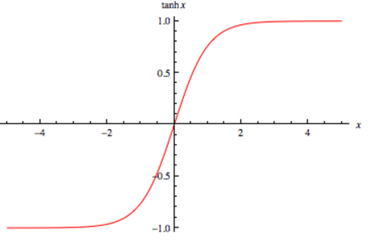
Figura 21: Representação da função \( tanh \) usada para a camada de ativação
Função Custo (Cost Function)
Primeiramente, precisamos definir as variáveis que serão usadas para definir a função custo.
-
\( L \) = número total de camadas (layers) na rede neural;
-
\( s _l \) = número de unidades na camada \( l \) (sem contar a unidade bias);
-
\( K \) = número de unidades/classes de saída (output layer).
Com isso podemos definir a função custo que será utilizada para calcular o custo de uma rede neural. Utilizaremos como base a função custo da regressão logística vista na Seção Função Custo (Cost Function) a fim de determinarmos o valor da saída da função \( J(\Theta) \).
A função custo para redes neurais tem o seguinte formato:
\[ J(\Theta)=- \frac{1}{m} \sum _{i=1} ^m \sum _{k=1} ^K \Big[ y _k ^{(i)} \log ((h _{\Theta}(x ^{(i)})) _k) + (1-y _k ^{(i)}) \log (1-(h _{\Theta}(x ^{(i)})) _k) \Big] + \frac{\lambda}{2m} \sum _{l=1} ^{L-1} \sum _{i=1} ^{s _l} \sum _{j=1} ^{s _{l+1}} (\Theta _{j,i} ^{(l)}) ^2 \]
Podemos comparar esta equação com a equação da função custo da regressão logística. Assim, percebe-se que adicionamos alguns somatórios. Nos dois primeiros somatórios, de \( k=1 \) até \( K \) e de \( i=1 \) até \( m \), somamos os valores do retorno da função custo da regressão logística para cada nodo da output layer. Nos três últimos somatórios, de \( j=1 \) até \( s _{l+1} \), de \( i=1 \) até \( s _l \) e de \( l=1 \) até \( L=1 \), somamos os valores dos quadrados de todos os valores de \( \Theta \) individuais em toda a rede neural.
Backpropagation Algorithm
O algoritmo de Backpropagation é, sem dúvida, o algoritmo mais importante para as redes neurais. É com esse algoritmo que as redes neurais aprendem, essencialmente.
Como foram vistos nas seções anteriores, existem algoritmos que são usados com o objetivo de minimizar a função custo. Para redes neurais, usa-se um algoritmo chamado Backpropagation que tem o mesmo objetivo: minimizar a função custo, ou seja \( \underset{\Theta}{min} J(\Theta) \). A minimização ocorre após realizarmos o processo de forward propagation usando o método de gradiente descendente - visto na Seção Gradiente Descendente (Gradient Descent) -, atualizando os valores das hidden layers de acordo com os valores retornados da função custo.
Em geral, o algoritmo de backpropagation acontece em duas fases principais que serão discutidas em detalhes a seguir. Essas fases são:
-
Forward pass: nossas entradas são passadas através da rede e as previsões de saída são obtidas. Nessa fase, calculamos a função custo e computamos as funções de ativação para cada transição de camada.
-
Backward pass: calculamos o gradiente da função custo na camada final (output layer) e usamos esse gradiente para aplicar recursivamente a regra da cadeia para atualizar os pesos da rede neural.
Forward pass
O principal objetivo dessa fase é calcular os valores de cada neurônio da nossa rede neural aplicando uma série de dot products (multiplicações entre vetores) e funções de ativação a fim de atingirmos a camada final da rede.
Por exemplo, se temos os seguintes valores de entrada \( x _i \) e a saída esperada \( y \), de acordo com a tabela a seguir:
Tabela 3: Valores hipotéticos de entrada para a rede neural seguindo uma tupla do tipo \( (x, y) \)
| \( x _0 \) | \( x _1 \) | \( x _2 \) (bias) | \( y \) |
|---|---|---|---|
| 0 | 0 | 1 | 0 |
| 0 | 1 | 1 | 1 |
| 1 | 0 | 1 | 1 |
| 1 | 1 | 1 | 0 |
Cada um desses valores de \( x _i \) estarão presentes na input layer da rede neural. E para cada um desses valores, serão realizados dot products entre as entradas de cada camada seguido pelo cálculo da função de ativação. Esta ideia está exemplificada na Figura 22 a seguir.

Figura 22: Exemplificação do algoritmo backpropagation a partir dos inputs definidos na Tabela 3. Na input layer estão os valores de \( x \) definidos. Os valores das arestas são inicializados aleatoriamente e representam os pesos. Na hidden layer estão os valores calculados a partir dos dot products e das aplicações das funções de ativação (neste caso, sigmoide) e na output layer o valor calculado pela função custo.
A partir dos valores de entrada baseados na Tabela 3 e os pesos que foram inicializados aleatoriamente, para cada um desses valores executamos as seguintes operações de dot products e ativações utilizando a função \( g(z) \) sigmoide:
-
\( g((0 \times 0.351) + (1 \times 1.076) + (1 \times 1.116)) = 0.899 \)
-
\( g((0 \times 0.097) + (1 \times 0.165) + (1 \times 0.542)) = 0.593 \)
-
\( g((0 \times 0.457) + (1 \times 0.165) + (1 \times 0.331)) = 0.378 \)
Os valores dos neurônios das hidden layers são atualizados de acordo com essas operações e, com eles podemos aplicar mais uma vez as mesmas operações para cada um dos valores atualizados para gerarmos o valor da output layer.
\[ \large{} g((0.899 \times 0.383) + (0.593 \times -0.327) + (0.378 \times -0.329)) = 0.506 \]
A saída é, portanto, \( 0.506 \), o que representa um valor de probabilidade de 50,6%. Contudo, percebe-se que a rede neural não tem muita confiança a respeito do valor gerado, então, para que a rede neural realmente aprenda precisamos realizar a minimização da função custo através da etapa de Backward pass.
Backward pass
Para otimizar a função custo, desejamos selecionar pesos que fornecem uma estimativa ótima de uma função que modela nossos dados de treinamento. Ou seja, desejamos encontrar um conjunto de pesos \( \Theta \) que minimize a saída \( J(\Theta) \).
Para aplicar o algoritmo de backpropagation a nossa função de ativação deve ser diferenciável, de modo que possamos calcular a derivada parcial do erro em relação a um dado peso \( \Theta ^{(L)} \), o custo \( \mathcal{L} \), saída do nó \( a ^{(L)} \) da hidden layer e saída da rede \( z ^{(L)} \).
\[ \large{} \frac{\partial \mathcal{L}}{\partial \Theta ^{(L)}} = \frac{\partial z ^{(L)}}{\partial \Theta ^{(L)}} \frac{\partial a ^{(L)}}{\partial z ^{(L)}} \frac{\partial \mathcal{L}}{\partial a ^{(L)}} \]
A saída dessa equação é uma função composta dos pesos, entrada e funções de ativação.
Podemos analisar cada um desses termos separadamente.
\[ \large{} \frac{\partial \mathcal{L}}{\partial a ^{(L)}} = 2(a ^{(L)}-y), \ \ \frac{\partial a ^{(L)}}{\partial z ^{(L)}} = g'(z ^{(L)}), \ \ \frac{\partial z ^{(L)}}{\partial \Theta ^{(L)}} = a ^{(L-1)} \]
Então, seguindo o exemplo da Figura 22, a partir do valor de saída, iremos calcular a derivada da respectiva camada baseando-se em relação aos pesos que nela estão conectados. Essa derivada é uma composição de multiplicações de derivadas do custo calculado em relação a camada anterior, a camada anterior em relação a saída da rede neural e a saída da rede neural em relação aos pesos.
Com isso, podemos minimizar o erro dos pesos seguindo a seguinte ideia:
\[ \large{} Novo \ Peso = Peso \ Antigo - Derivada \times Taxa \ de \ aprendizado \]
Para o caso de uma camada de uma rede neural, nós temos uma função com \( n \) entradas (número de neurônios da input layer) e \( m \) saídas (número de neurônios da output layer). Então, este é o caso que teremos uma matriz de derivadas parciais que se refere ao Jacobiano. Um Jacobiano é uma matriz de derivadas parciais \( mxn \), em outras palavras
\[ \large{} \frac{\partial \mathbf{f}}{\partial \mathbf{x}} = \begin{bmatrix} \frac{\partial f _1}{\partial x _1} && \cdots && \frac{\partial f _1}{\partial x _n} \\ \vdots && \ddots && \vdots \\ \frac{\partial f _m}{\partial x _1} && \cdots && \frac{\partial f _m}{\partial x _n} \end{bmatrix} \rightarrow \Big( \frac{\partial \mathbf{f}}{\partial \mathbf{x}} \Big) _{ij} = \frac{\partial f _i}{\partial x _j} \]
Podemos exemplificar o cálculo das derivadas parciais pensando em um exemplo simples com operações matemáticas. A Figura 23 a seguir representa uma rede de quatro camadas: camada de entrada, com os valores \( x, y \) e \( z \), camada interna com operações soma (\( + \)) e \( max \), camada interna com a operação multiplicação (\( * \)) e a camada de saída. Percebe-se que executamos a operação \( f=(x+y)*max(y,z) \). Supondo que os valores das arestas são os valores retornados na saída de cada camada, temos que o valor da função \( f=6 \).
Figura 23
Com isso podemos gerar três valores internos distintos que representam a função:
\[ \large{} a = x + y \]
\[ \large{} b = max(y,z) \]
\[ \large{} f = ab \]
onde \( x=1, y=2 \) e \( z=0 \).
Podemos realizar a backpropagation nessa rede calculando as derivadas parciais de cada um dos níveis a respeito ao nível anterior, como vimos anteriormente. Para isso, para facilitar a compreensão, calculamos as derivadas parciais locais, da seguinte forma:
\[ \large{} \frac{\partial a}{\partial x} = 1, \ \frac{\partial a}{\partial y} = 1 \]
\[ \large{} \frac{\partial b}{\partial y} = 1(y > z) = 1, \ \frac{\partial b}{\partial z} = 1(z > y) = 0 \]
\[ \large{} \frac{\partial f}{\partial a} = b = 2, \ \frac{\partial f}{\partial b} = a = 3 \]
\[ \large{} \frac{\partial f}{\partial f} = 1 \]
Com esses valores definidos, podemos calcular a aplicação da regra da cadeia para atualizar os valores internos dos nodos. Os valores representados em azul na Figura 24 são as multiplicações das derivadas resultantes da função em relação ao estado atual com a derivada da função gerada no estado imediatamente anterior.

Figura 24
Assim, geramos a seguinte atualização das derivadas da função em relação a cada uma das variáveis de entrada:
\[ \large{} \frac{\partial f}{\partial x} = 2 \]
\[ \large{} \frac{\partial f}{\partial y} = 3+2 = 5 \]
\[ \large{} \frac{\partial f}{\partial z} = 0 \]
Portanto, na prática, backpropagation é apenas uma aplicação recursiva da regra da cadeia por toda a rede neural baseando-se nos valores gerados das camadas mais finais até as camadas mais iniciais. Em suma, backpropagation das redes neurais é equivalente ao algoritmo de gradiente descendente dos problemas de regressão.
Algoritmo
Agora, podemos verificar como funciona esse algoritmo na prática.
Algorithm 7 Backpropagation Algorithm
1: procedure \( BACKPROPAGATION \) (Training set \( [(x ^{(1)},y ^{(1)}), \dots , (x ^{(m)}, y^{(m)})] \))
2: Inicializar \( \Delta _{ij} ^{(l)} = 0 \)
3: for \( i=1 \) to \( m \) do
4: Inicializar \( a ^{(1)} = x ^{(i)} \)
5: Realizar forward propagation para computar \( a ^{(l)} \) \( \rhd \ para \ l=2,3, \dots , L \)
6: Usando \( y ^{(i)} \), computar \( \delta ^{(L)} = a ^{(L)} - y ^{(i)} \)
7: Computar \( \delta ^{(L-1)}, \delta ^{(L-2)}, \dots , \delta ^{(2)} \)
8: \( \Delta _{ij} ^{(l)} := \Delta _{ij} ^{(l)} + a _j ^{(l)} \delta _i ^{(l+1)} \)
9: end for
10: if \( j \neq 0 \) then
11: \( D _{(ij)} ^{(l)} := \frac{1}{m} \Delta _{ij} ^{(l)} + \lambda \Theta _{ij} ^{(l)} \) \( \rhd \frac{\partial}{\partial \Theta _{ij} ^{(l)}} J(\Theta) = D _{(ij)} ^{(l)} \)
12: else
13: \( D _{(ij)} ^{(l)} := \frac{1}{m} \Delta _{ij} ^{(l)} \)
14: end if
15:end procedure
Realizando uma análise do algoritmo, temos que na linha 2 inicializamos \( \Delta _{ij} ^{(l)} \) com zeros, gerando uma matriz de zeros. No loop for inicializamos as variáveis \( a ^{(1)} \) com os valores da input layer e, depois realizamos forward propagation para computar os valores de \( a ^{(l)} \). Para cada valor de \( a ^{(l)} \) definido, computamos os valores de \( \delta ^{(l)} \) através de backpropagation, na linha 6 e 7 sabendo que
\[ \large{} \delta ^{(l)} = ((\Theta ^{(l)}) ^T \delta (l-1)) * a ^{(l)} * (1-a ^{(l)}) \]
Computamos os valores de \( \delta ^{(l)} \) começando na camada \( L \) da rede neural até a camada 2. Utilizamos os valores de delta para armazenar o erro presente em cada um dos vetores dos nodos de ativação \( a ^{(l)} \).
Por fim, na linha 8, calculamos os valores de \( \Theta _{ij} ^{(l)} \) e determinamos o valor da derivada de \( J(\Theta) \), armazenando em \( D _{(ij)} ^{(l)} \) nas linhas 11 e 13.
Otimizadores
Em algumas implementações do gradiente descendente, podemos encontrar diferentes formas de otimizações. A seguir estão listadas algumas formas de implementações.
-
Gradient Descent;
-
Stochastic Gradient Descent;
-
Mini-Batch Gradient Descent;
-
Momentum;
-
Nesterov Accelerated Gradient;
-
AdaGrad;
-
Adam;
Esses sistemas de otimização serão abordados e detalhados em seções seguintes.
Verificação do gradiente
Usamos o método de verificação do gradiente para assegurar que o algoritmo de backpropagation está funcionando corretamente.
\[ \large{} \frac{\partial}{\partial \Theta} \approx \frac{J(\Theta + \epsilon) - J(\Theta - \epsilon)}{2 \epsilon} \]
Usamos a expressão acima para computar todos os valores de \( \Theta _j \) e para isso usamos valores pequenos para epsilon, como por exemplo, \( \epsilon = 10 ^{-4} \).
Verificamos se os valores armazenados de \( \Theta _j \) retornados pela expressão se aproxima dos valores de \( D \) retornados pelo algoritmo de backpropagation. Contudo, uma vez confirmado que o algoritmo funciona corretamente, não precisamos verificar novamente, pois o algoritmo de verificação é muito lento.
Inicialização aleatória
Para o melhor funcionamento do algoritmo de backpropagation devemos inicializar os vetores \( \Theta _{ij} ^{(l)} \) aleatoriamente de forma que \( \Theta _{ij} ^{(l)} \in [- \epsilon , \epsilon] \).
Nota-se que o valor de \( \epsilon \) utilizado é o mesmo valor que foi utilizado no método de verificação do gradiente.
Com essa inicialização, garantimos que os valores de teta são simétricos e adaptados para o melhor funcionamento do algoritmo de backpropagation.
Organização do conhecimento
Como foi visto até agora, nós temos três tipos de estruturas básicas em uma arquitetura de uma rede neural:
-
Número de unidades de entrada (input units): dimensão do vetor de entradas \( x \);
-
Número de unidades de saída (output units): dimensão do vetor de saída (classes);
-
Número de unidades intermediárias (hidden units) por camada: são definidas a partir da complexidade do problema e, geralmente, quando temos mais de uma camada, cada uma delas devem ter o mesmo número de unidades.
A partir dessas definições mencionadas, podemos, novamente, estrutural a lógica que deve ser seguida ao realizarmos o treino de uma rede neural. Abaixo, estão divididos em passos o algoritmo de treino utilizando backpropagation.
-
Aleatoriamente inicializar os pesos \( \Theta _{ij} ^{(l)} \) (Seção Inicialização aleatória);
-
Implementar o método de forward propagation para computar os valores da função hipótese \( h _{\Theta}(x ^{(i)}) \) para todos os valores de \( x ^{(i)} \) (Seção Redes Neurais: Aprendizado);
-
Implementar a função custo (Seção Função Custo (Cost Function));
-
Implementar o método de backpropagation para computar os valores das derivadas parciais \( \frac{\partial}{\partial \Theta} \) (Seção Backpropagation Algorithm);
-
Utilizar o método de verificação do gradiente para confirmar que o método de backpropagation está funcionando corretamente. Após executar uma vez, desabilitamos a verificação (Seção Verificação do gradiente);
-
Utilizar o algoritmo de gradiente descendente ou algum outro método de minimização mais otimizado para minimizarmos a função custo utilizando os valores de teta (Seção Otimizadores).
Aplicação de algoritmos de machine learning
Valoração de algoritmos de aprendizagem
Muitas vezes, podemos ter alguns problemas durante o teste das funções de treino. Para isso, é possível realizar alguns levantamentos a respeito do problema realizando as seguintes atividades:
-
Aumentar o número de exemplos de treino;
-
Diminuir o número de parâmetros;
-
Adicionar parâmetros;
-
Tentar parâmetros polinomiais;
-
Aumentar ou diminuir o valor de \( \lambda \).
Existem outros métodos que podem ser utilizados para valorar a função hipótese, ou seja, verificar a acurácia dos conjuntos de treino e teste. Assim, para cada um dos conjuntos teremos duas funções custo; uma para o conjunto de treino: \( J _{treino}(\theta) \); e outra para o conjunto de teste \( J _{test}(\theta) \).
Com isso, para regressão linear e para algoritmos de classificação, temos as seguintes equações para computar o erro de cada um dos dois métodos.
- Para regressão linear:
\[ \large{} J _{test}(\theta) = \frac{1}{2m _{test}} \sum _{i=1} ^{m _{test}} (h _{\Theta}(x _{test} ^{(i)}) - y _{test} ^{(i)}) ^2 \]
- Para classificação:
\[ \large{} err(h _{\theta}(x), y) = \Bigg\{ _{0 \ \ caso \ contrário} ^{1 \ \ se \ h _{\theta}(x) \geq 0.5 \ e \ y=1 \ ou \ h _{\theta}(x) < 0.5 \ e \ y=1} \]
Calculamos a média do erro do conjunto de teste:
\[ \large{} TesteErro = \frac{1}{m _{test}} \sum _{i=1} ^{m _{test}} err(h _{\theta}(x _{test} ^{(i)}) - y _{test} ^{(i)}) \]
Cada uma dessas formas nos retorna a proporção que os nossos dados foram erroneamente classificados.
Usualmente, dividimos o dataset em três diferentes conjuntos:
-
Conjunto de treino (60%);
-
Conjunto de cross-validation (20%);
-
Conjunto de teste (20%).
O conjunto de treino é utilizado efetivamente para treinar o nosso modelo de rede neural. O conjunto de cross-validation é utilizado para testar o nosso modelo enquanto realizamos o treino, para que possamos ajustar os hiperparâmetros e controlar os casos de overfitting e underfitting que podem, eventualmente vir a ocorrer. O conjunto de teste, serve, essencialmente para testarmos o modelo e verificarmos o quão bem ele está generalizando dados que não foram previamente vistos.
Podemos calcular os os erros para cada um desses três conjuntos, resultando em três diferentes valores: \( J _{train}(\theta), J _{cv}(\theta), J _{test}(\theta) \). Com isso, usamos os valores dos erros de \( J _{cv}(\theta) \) para ajustarmos o grau do polinômio a fim de que possamos atingir o menor erro possível para \( J _{test}(\theta) \).
Curvas de aprendizado
Nesta seção iremos interpretar gráficos que representam curvas de aprendizado analisando os valores de \( J _{train}(\theta), J _{cv}(\theta) \) e \( J _{test}(\theta) \) para concluir se o treino está bem ajustado, com overfitting ou underfitting.
Em primeira análise, sabemos que para uma quantidade pequena de dados de entrada o valor do erro esperado é próximo de zero, pois o modelo aprende cerca de 100% do conjunto de treino. Porém, quando aumentamos o tamanho do conjunto de treino este erro tende a aumentar, muitas vezes, tanto para o conjunto de treino, quanto para o conjunto de teste. Para isso, podemos analisar dois tipos de situações esperadas: high bias e high variance.
Na representação a seguir que representa o erro da função \( J \) para casos de treino e teste de acordo com o grau do polinômio \( d \). Percebe-se que quanto maior o grau do polinômio, menor é a taxa de erro no conjunto de treino e maior é a taxa de erro no conjunto de teste, e quanto menor o grau do polinômio maior é a taxa de erro do conjunto de treino e maior é a taxa de erro do conjunto de teste. Assim, devemos ajustar o grau do polinômio de forma que ele seja grande suficiente para evitar os casos de underfitting e overfitting.
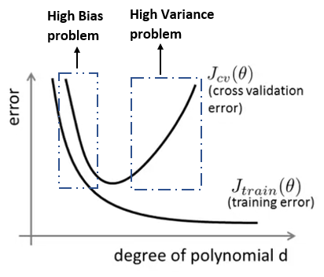
Figura 25: Representação das curvas \( J _{cv}(\theta) \) e \( J _{train}(\theta) \) relacionando o grau do polinômio \( d \) com a taxa de erro de cada uma dessas funções.
High Bias
Em casos de underfitting teremos a seguinte situação apresentada na Figura 26

Figura 26: Representação da curva de aprendizado para o caso de high bias
High Variance
Em casos de overfitting teremos a seguinte situação apresentada na Figura 27

Figura 27: Representação da curva de aprendizado para o caso de high variance
Decisões a serem tomadas
Caso desejamos ajustar o nosso algoritmo de treino da melhor forma possível, podemos dividir a tomada de decisão a respeito de que tipo de ajuste devemos realizar da seguinte forma:
-
Aumentar o número de exemplos de treino: ajusta em casos de high variance;
-
Diminuir o número de parâmetros: ajusta em casos de high variance;
-
Adicionar parâmetros: ajusta em casos de high bias;
-
Tentar parâmetros polinomiais: ajusta em casos de high bias;
-
Diminuir o valor de \( \lambda \): ajusta em casos de high bias;
-
Aumentar o valor de \( \lambda \): ajusta em casos de high variance;
Diagnosticando Redes Neurais
Como foi visto nas seções anteriores, os problemas de underfitting e overfitting podem acontecer por diversos motivos e discutimos maneiras de podermos solucioná-los.
Em uma rede neural, esses problemas também podem ocorrer. O primeiro caso está relacionado à possibilidade de underfitting, e geralmente isso ocorre devido ao fato da baixa quantidade de parâmetros (computacionalmente mais barato). O segundo caso está relacionado com a possibilidade de overfitting, e geralmente isso ocorre devido ao fato da grande quantidade de parâmetros (compu- tacionalmente mais caro), porém, neste caso, o problema pode ser facilmente corrigido através de regularização.
Support Vector Machines (SVMs)
Support Vector Machines, ou SVMs, podem ser usadas para tanto para problemas de regressão quanto problemas de classificação. O objetivo principal de uma SVM é encontrar um hiperplano em um espaço \( N \)-dimensional, sendo \( N \) o número de parâmetros, que classifica de forma distinta cada um dos dados.
Na Figura 28 a seguir, podemos perceber a funcionalidade de uma SVM na busca de um hiperplano ótimo (imagem à direita).

Figura 28: Exemplificação da utilização de uma SVM para encontrar o hiperplano ótimo que divide duas classes distintas de dados. Na imagem à esquerda temos todos os hiperplanos possíveis que distinguem as duas classes de dados e na imagem à direita temos o hiperplano ótimo que as distinguem.
Nosso objetivo é encontrar um plano que possui a margem máxima, ou seja, que possui a máxima distância entre os pontos de ambas as classes.
Hiperplanos são limites de decisão que ajudam a classificar as classes de dados. Além disso, a dimensão de um hiperplano depende do número de parâmetros.
Com isso, temos a definição de support vectors. Support vectors são pontos que estão mais próximos ao hiperplano e influenciam a posição e a orientação desse hiperplano. Usando-os, podemos maximizar a margem do classificador.
Naive Bayes
Naive Bayes é um algoritmo de classificação que utiliza aprendizado supervisionado. O algoritmo é chamado de "naive" (do inglês, ingênuo) porque ele realiza uma suposição ingênua de que cada dado é independente dos outros, o que não é verdade na vida real. Portando, o algoritmo através do teorema de Bayes, realiza decisões que classificam os dados a partir de valores de probabilidade gerados a partir da suposição ingênua de independência dos dados.
O teorema de Bayes nos ajuda a encontrar o valor de probabilidade da hipótese dado um conhecimento prévio que pode ter interferência. Em outras palavras:
\[ \large{} P(H|e) = \frac{P(e|H)P(H)}{P(e)} \]
onde:
-
\( P(H|e) \) (posterior): o quão provável é a nossa hipótese dada a evidência observada.
-
\( P(e|H) \) (likelihood): o quão provável é a evidência dada que a hipótese é verdadeira.
-
\( P(H) \) (prior): o quão provável era a hipótese antes de observar a evidência.
-
\( P(e) \) (marginal): o quão provável é a nova evidência sob todas as possíveis hipóteses.
Parte IV
Unsupervised Learning
Clustering
Clustering é um método de aprendizado não supervisionado. A principal diferença entre supervised learning e unsupervised learning é que no método não supervisionado não passamos dados previamente classificado, em outras palavras, uma entrada para um algoritmo sem supervisão seria apenas o conjunto de treino \( x _1, x _2, \dots , x _n \).
As principais aplicações de clustering são:
-
Segmentação de mercado;
-
Análise de redes sociais;
-
Organização de clusters de computadores (datacenters);
-
Análise de dados astronômicos.
O primeiro algoritmo de aprendizado não supervisionado que iremos discutir é chamado de K-Means Algorithm que será apresentado na seção seguinte.
K-Means Algorithm
K-Means Algorithm é um dos algoritmos mais populares e são amplamente utilizados a fim de, automaticamente, agrupar dados em subgrupos denominados clusters.
Figura 29: Representação de clustering através do algoritmo de K-Means. Percebe-se que, com a aplicação do algoritmos os dados passam a formar conjuntos diferentes, na figura, representados pelas cores azul, verde e preto.
Antes de discutir o algoritmo, podemos discutir o funcionamento desse método de machine learning para os três clusters da imagem acima.
-
Randomicamente inicializar três pontos no conjunto de dados. Esses pontos serão chamados de cluster centroids;
-
Atribuição do cluster: atribua todos os exemplos em um dos três grupos baseado em qual centroid os exemplos estão mais próximos;
-
Mover os centroids: computar as médias de todos os pontos dentro de cada um dos três centroids, e mover os centroids para os pontos que representam as médias;
-
Executar os passos (2) e (3) até convergir.
Para o algoritmo, teremos as seguintes variáveis principais:
-
\( K \): número de clusters;
-
\( x ^{(1)}, x ^{(2)}, \dots , x ^{(n)} \): conjunto de treino, onde \( x ^{(i)} \in \mathbb{R} ^n \)
Algorithm 8 Algoritmo K-Means
1: procedure
2: Randomicamente inicializar \( K \) cluster centroids \( \mu _1, \mu _2, \dots , \mu _K \in \mathbb{R} ^n \)
3: repeat
4: for \( i=1 \) to \( m \) do
5: \( c ^{(i)} := \) índice (de 1 até \( K \)) do cluster centroid mais perto de \( x ^{(i)} \)
6: end for
7: for \( k=1 \) to \( K \) do
8: \( \mu _k := \) média dos pontos atribuídos ao cluster \( k \)
9: end for
10: until \( convergir \)
11: end procedure
No algoritmo, percebemos que existem dois loops. O primeiro, realiza a etapa (2) descrita acima da seguinte forma:
\[ \large{} c ^{(i)} = argmin _k || x ^{(i)} - \mu _k || ^2 == || (x _1 ^i - \mu _{i(k)}) ^2 + (x _2 ^i - \mu _{2(k)}) ^2 + \dots || \]
No segundo loop realiza a etapa (3) e pode ser descrita da seguinte forma:
\[ \large{} \mu _k = \frac{1}{n} [x ^{(k _1)} + x ^{(k _2)} + \dots + x ^{(k _n)}] \]
Onde cada valor de \( x ^{(k _1)},x ^{(k _2)}, \dots ,x ^{(k _n)} \) são os exemplos de treino atribuidos por \( \mu _k \)
Depois de um número de iterações, o algoritmo irá convergir e as posições dos centroids não serão mais alteradas.
Otimização
Através dos parâmetros apresentados na seção anterior, podemos definir a função custo.
\[ \large{} J(c ^{(i)}, \dots , c ^{(m)}, \mu _1, \dots , \mu _k) = \frac{1}{m} \sum _{i=1} ^m || x ^{(i)} - \mu _{c ^{(i)}} || ^2 \]
Nosso objetivo de otimização é minimizar todos os parâmetros da função custo descrita acima, em outras palavras, desejamos
\[ \large{} min _{c, \mu} J(c, \mu) \]
Inicialização
Um método recomendado para o algoritmo \( K-Means \) é inicializar aleatoriamente os cluster centroids. Para isso, devemos considerar os seguintes requisitos:
-
\( K < m \): O número de clusters deve ser menor que o número de exemplos de treino;
-
Aleatoriamente escolher \( K \) exemplos de treinos;
-
Definir \( \mu _1, \dots , \mu _K \) serem iguais aos \( K \) exemplos.
Para escolher o número de clusters, usa-se um método chamado elbow method, o qual se analisa a curva da função custo \( J \) e o número de clusters \( K \), representado na Figura 30. A função custo deve decrescer de acordo com o aumento do número de clusters até tender a zero. Escolhemos um valor para \( K \) no ponto em que a função custo começa a se estabilizar.
Figura 30: Representação do método de escolha do valor ótimo de \( K \) para o algoritmo KNN.
Uma outra forma de escolher o número de clusters é de acordo com o objetivo que desejamos atingir com o uso deles.
K-Nearest Neighbors
K-Nearest Neighbors (KNN) é um classificador que se baseia na similaridade dos dados próximos. Em outras palavras, classifica os dados em grupos de acordo com a similaridade entre eles e o quão próximo estão entre eles.
Na Figura 31 abaixo, podemos perceber como é realizada essa classificação. Cada uma das cores da imagem representa um conjunto de dados que possui similaridade entre si.

Figura 31: Representação das similaridades entre os conjuntos
A ideia de similaridade menciona é baseada na distância entre os pontos no gráfico.
Algoritmo
A seguir, será apresentado o algoritmo básico para a classificação de dados utilizando o método KNN.
-
Carregar os dados
-
Inicializar \( K \) como o número de "vizinhos" escolhidos.
-
Para cada um dos pontos: calcular a distância entre o atual ponto em relação aos outros e adicionar a distância e o índice do ponto a uma coleção ordenada
-
Ordenar a coleção ordenada de distâncias e índices de forma crescente das distâncias
-
Retornar os rótulos dos \( K \) primeiros valores da sequência
Escolhendo o valor correto para \( K \)
Para escolher o valor de \( K \) rodamos o algoritmo diversas vezes de forma a encontrar o valor de \( K \) que reduza o número de erros nos exemplos de teste.
É importante mencionar, que quanto menor o valor de \( K \), há maior possibilidade de overfitting e quanto maior esse valor, maior a possibilidade de underfitting.
Redução de dimensionalidade
Compressão de dados
Em um conjunto de dados, muitas vezes podemos ter diversos dados redundantes e, para isso, devemos reduzir a quantidade desses dados a fim de facilitar a compreensão do conjunto o qual estamos trabalhando.
Assim, nós selecionamos dados que estão correlacionados e os colocamos em uma única linha que possa descrever o comportamento de ambos. Com redução de dimensionalidade, podemos reduzir o total de dados guardados aumentando a memória disponível e, muitas vezes, acelerando o processamento do algoritmo de aprendizagem.

Figura 32: Representação de uma compressão de dados. Na figura, percebe-se que houve a redução na dimensionalidade dos dados. Os dados previamente em três dimensões foram convertidos para duas dimensões. Essa conversão se dá através de um algoritmo que será apresentado nas seções seguintes chamado PCA.
Visualização
Quando realizamos redução de dimensionalidade dos dados, desejamos visualizá-los em duas ou, no máximo, três dimensões. Para isso, precisamos encontrar novos valores \( z _1, z _2 \) (ou \( z _3 \)) para que possamos resumir esses dados efetivamente em menos dimensões.
Análise do componente principal (PCA)
O algoritmo de análise do componente principal (do inglês, Principal Component Analysis Algorithm (PCA)) é um algoritmo de redução de dimensionalidade de dados. Como está representado na Figura 32, o algoritmo busca comprimir os dados relacionando cada um dos dados em uma só semelhança, em outras palavras, busca reduzir a média de todas as distâncias de cada um dos valores em relação a linha projetada. Essa redução é chamada de erro de projeção.

Figura 33: Representação da aplicação do algoritmo de PCA. Percebe-se que o algoritmo busca encontrar uma relação entre os pontos e fim de projetar os dados sobre essa relação. Na figura, os pontos em azuis são relacionados e projetados sobre a reta em verde, gerando os pontos em laranja sobre a reta.
Aprendizado por reforço (Reinforcement learning)
Visão geral
Nesta seção será apresentado mais um método de aprendizado de máquina chamado aprendizado por reforço (do inglês, Reinforcement Learning ou RL). RL ensina um agente a como escolher uma ação que faça sentido de acordo com o ambiente que ele esteja inserido (e.g. escolher uma movimentação de peça adequada em um jogo de tabuleiro) a fim de maximizar a recompensa que esse agente recebe ao longo do tempo.
Para isso, precisamos definir alguns elementos essenciais para a implementação de um algoritmo de RL (representado na Figura 34).
-
Agente: o que o programa está exatamente treinando a fim de realizar alguma tarefa específica;
-
Ambiente: o mundo, real ou virtual, no qual o agente realiza as suas ações;
-
Ação: um movimento realizado pelo agente. Essa movimentação muda o estado do ambiente;
-
Recompensa: a valoração de uma ação realizada pelo agente. Essa valoração pode ser positiva ou negativa.

Figura 34: Representação de um esquema básico de um algoritmo de RL. Percebe-se que o agente através de ações realizadas sobre um ambiente determinado atualiza o estado do ambiente e recebe recompensas (positivas ou negativas) de acordo com a ação realizada.
Com essas definições, percebe-se que o processo de aprendizado do agente se dá por meio de tomada de decisões baseadas no ambiente e nas recompensas. Na próxima seção será apresentada as ideias fundamentais de exploração do ambiente em RL.
Exploration e Exploitation
Quando o agente realiza explorações no ambiente a fim de conhecer o território no qual ele está inserido, ele realiza dois tipos de ações que são determinantes para o seu aprendizado: exploration e exploitation.
Apesar de parecerem redundantes, os dois termos possuem uma grande diferença. Quando o agente toma decisões baseadas em exploration, o agente toma decisões puramente aleatórias, com o intuito de encontrar melhores ações para o estado no qual ele se encontra. Isso é importante para possibilitar ao agente descoberta de novas estratégias, podendo, assim, expandir o seu leque de opções de ações. Em exploitation o agente toma decisões baseadas em valorações que foram previamente estabelecidas de estados previamente alcançados. Isso é importante para maximizar a tomada de decisão do agente, pois ele saberá se determinado estado é ”bom” ou ”ruim” ao longo da compreensão do ambiente.
Markov Process
Nesta seção iremos discutir o princípio de formação dos métodos que envolvem Reinforcement Learning: Markov process. Contudo, antes disso, é necessário introduzir alguns conceitos chaves desse processo: a Propriedade de Markov e a Cadeia de Markov.
Propriedade de Markov
Na teoria das probabilidades e estatística, o termo "propriedade de Markov" se refere à propriedade sem memória de um processo estocástico, em outras palavras, em um processo aleatoriamente determinado.
Para o melhor entendimento da Propriedade de Markov, podemos descrevê-la da seguinte forma:
\[ \large{} P(X(t+1)=j|X(0)=i _0,X(1)=i _1, \dots ,X(t)=i) = P(X(t+1)=j|X(t)=i) \]
A equação acima representa uma situação de um estado X no tempo \( t+1 \) que depende apenas do estado precedente, o estado X no tempo \( t \). Em outras palavras, a propriedade de Markov nos diz que o próximo estado de um processo de Markov independe dos estados precedentes do anterior, porque o estado imediatamente anterior irá conter todas as informações dos estados precedentes.
Cadeia de Markov
A Cadeia de Markov é um modelo estocástico que descreve uma sequência de possíveis eventos os quais são dependentes de uma possibilidade de ocorrência. E essa possibilidade só depende do evento prévio a esta ação.
Quando usamos a Propriedade de Markov em um processo aleatório, chamamos esse uso de Cadeia de Markov, podendo ser definida da seguinte forma:
A Cadeia de Markov é uma tupla \( (S,P) \) onde:
-
\( S \) é um conjunto de estados;
-
\( P(s,s') \) é uma transição de estado cujo peso é a probabilidade. A probabilidade de transição do estado \( s \) no tempo \( t \) para o estado \( s' \) no tempo \( t+1 \).

Figura 35: Representação de uma Cadeia de Markov com os estados \(e, a, t\) onde cada aresta representa uma transação de estado e seus pesos representam a probabilidade de transição.
Markov Decision Processes (MDPs)
MDP é um dos tópicos mais importantes para o entendimento de RL. MDP é um método que resolve a maioria dos problemas de RL com tomadas de decisões discretas. Com esse método, um agente atinge uma política ótima para receber o maior número de recompensas ao longo do processo de exploração do ambiente.
Como foi apresentado na seção anterior na qual discutimos as definições de Propriedade e Cadeia de Markov, uma Cadeia de Markov trabalha com as transições entre os estados e as probabilidades de transição relacionadas aos mesmos. MDP difere da Cadeia de Markov pois, agora, os estados não dependem apenas do estado imediatamente posterior, mas sim, de todas as ações que foram executadas a partir do estado atual.
Com isso, o objetivo principal do MDP é treinar um agente a fim de encontrar a melhor política possível acumulando o maior número de recompensas a partir de tomadas de decisões em um ou mais estados. Podemos definir, formalmente MDP da seguinte forma:
MDP é uma 5-upla \( (S,A,P,R, \gamma) \), onde:
-
\( S: \) conjunto de estados;
-
\( A: \) conjunto de ações;
-
\( P(s, a, s'): \) probabilidade de uma ação \( a \) no estado \( s \) levar ao estado \( s' \) no tempo \( t+1 \);
-
\( R(s, a, s'): \) recompensa recebida imediatamente após a transição do estado \( s \) para o \( s' \) a partir de uma ação \( a \);
-
\( \gamma \): fator de desconto o qual é usado para gerar uma recompensa relativa. Esse valor está entre 0 e 1 e quantifica a diferença de importância de recompensas imediatas e recompensas futuras.
Em outras palavras, MDP pode ser escrito como
\[ \large{} \sum _{t=0} ^{t= \infty} \gamma ^t r(x(t), a(t)) \]
Busca pela política ótima com MDP
Com MDP podemos fazer com que o nosso agente selecione a decisão ótima para determinado estado de ambiente. Iremos maximizar a recompensa do agente ao longo do tempo a fim de fazer com que ele atinja a política ótima, i.e. determinaremos qual é a melhor ação a ser tomada em cada estado.
Para determinar a melhor ação a ser tomada, iremos usar a equação de Bellman (Bellman Optimality Equation [4]) que nos possibilita estimar o valor ótimo para cada estado. A equação estima o valor de um estado computando as recompensas esperadas que cada estado pode gerar.
Abaixo está definida a equação de Bellman recursiva
\[ \large{} V ^*(s) = max _a \sum _{s'} P(s,a,s')[R(s,a,s') + \gamma V(s')] \]
Onde:
-
\( P(s,a,s') \) é a probabilidade da transição do estado \( s \) para o \( s' \) a partir da escolha da ação \( a \);
-
\( R(s,a,s') \) é a recompensa imediata do estado \( s \) para o \( s' \) quando o agente escolhe a ação \( a \);
-
\( \gamma \) é o fator de desconto (recursivo).
Monte-Carlo e Temporal-Difference Learning
Nesta seção serão apresentados dois métodos chaves de aprendizado de máquina através de RL: aprendizado de Monte-Carlo (MC) e Temporal-Difference Learning (TD).
Valoração de Monte-Carlo
O método de Monte-Carlo faz com que o agente aprenda interagindo com o ambiente e coletando diversas amostras. Essa coleção de amostras estão relacionadas as distribuições de probabilidades mencionadas \( R(s,a,s') \) e \( R(s,a,s') \).
Entretanto, Valoração de MC é uma forma de aprendizado baseado em testes, em outras palavras, um MDP sem a tupla \( P \) pode aprender por tentativa e erro, por meio de muitas repetições.
Nesse cenário, cada "tentativa" é chamado de episódio, e ele termina quando o estado final do MDP é atingido. No final, todos os valores de recompensa são atualizados na recompensa \( G _t \), final de cada estado. Abaixo está representada a equação de Monte-Carlo que atualiza o valor de cada estado.
\[ \large{} V(s _t) \leftarrow V(S _t) + \alpha [G _t - V(S _t)] \]
Onde:
-
\( V(S _t) \) é o valor do estado que desejamos estimar. Esse valor pode ser inicializado aleatoriamente ou baseado em alguma estratégia;
-
\( G _t \) pode ser calculado da seguinte forma, onde T é o tempo de terminação:
\[ \large{} G _t = R _{t+1} + \gamma R _{t+2} + \gamma ^2 R _{t+3} + \dots + \gamma ^{T-1} R _T \]
- \( \alpha \) é um parâmetro que influencia a convergência.
Sendo assim, temos diversas formas de atualizarmos os valores dos estados do ambiente. Essas atualizações são significantes para determinar a política do agente e otimizar a escolha da ação. Essas formas estão relacionadas ao momento de visita de cada estado, ou seja, como devemos atualizar o valor de um estado na primeira visita e em cada vez que atingimos o mesmo estado.
TD Learning
Como vimos na seção anterior, o método de Monte-Carlo exige que nós esperamos até o fim do episódio para determinar o valor do estado \( V(S _t) \). No método de Temporal-Difference, esperamos até o próximo passo a ser tomado. Em outras palavras, no tempo \( t+1 \), o método TD utilizado da recompensa observada \( R _{t+1} \) e, imediatamente, gera um valor, chamado TD target \( R(t+1)+V(S _{t+1}) \), atualizando o valor do estado \( V(S _t) \) através do erro, chamado TD error \( R(t+1)+V(S _{t+1})-V(S _t) \).
Com isso, podemos definir a equação \( TD(\lambda) \) na qual substituímos o valor de TD target por \( G _t \) da seguinte forma:
\[ \large{} V(S _t) \leftarrow V(S _t) + \alpha [G _t ^{(\lambda)} - V(S _t)] \]
onde:
\[ \large{} G _t ^{(\lambda)} = (1- \lambda) \sum _{n=1} ^{\infty} \lambda ^{n-1} G _t ^{n} \]
Assim, com essas duas equações, Monte-Carlo(MC) e Temporal-Difference(TD) podemos definir um método de aprendizado por reforço que é uma combinação das duas, chamado de \( Q-Learning \).
Q-Learning
Q-Learning é uma combinação entre os métodos de MC e TD vistos na seção anteriores. Nesse método, a cada passo, tomamos uma decisão gananciosa que tem como objetivo maximizar o valor da variável \( Q(S _{t+1},a) \), como está representado abaixo:
\[ \large{} Q(S _t,a) \leftarrow Q(S _t,a) + \alpha [R _{t+1} + \gamma max _a Q(S _{t+1},a) - Q(S _t,a)] \]
Para a implementação desse método, precisamos de dois fatores principais: a atualização do valor de \( Q \) - chamado de Q-value e um lugar para salvar esses valores, chamado de Q-table.
Em Q-learning, a cada passo tomamos a melhor decisão possível para o agente, ou seja, a decisão que terá o melhor impacto na atualização de Q-value. Esse tipo de tomada de decisão se chama \( \epsilon \)-greedy-policy, onde \( 0 < \epsilon < 1 \) é o grau de ganância do nosso agente, em outras palavras, quanto mais alto o seu valor, maior a quantidade de ações realizadas aleatoriamente.
No início da exploração, o agente toma decisões puramente aleatórias a fim de conhecer o ambiente no qual ele está inserido. E a cada tomada de decisão, atualiza-se o valor de cada estado Q-value na tabela Q-table. Portanto, é comum começar a exploração com um valor alto de \( \epsilon \), como, por exemplo, igual a 1, a fim de fazer com que o agente tome decisões 100% aleatórias.
Ao longo da exploração, o agente começa a conhecer melhor o ambiente, então podemos diminuir o valor de \( \epsilon \) gradativamente ao longo do treino.
Contudo, a utilização desse tipo de implementação não é escalável, ou seja, para modelos extremamente complexos, é extremamente ineficiente a valoração dos estados e a busca pela política ótima. Para resolver esse tipo de problema, métodos derivados foram desenvolvidos utilizando redes neurais e o principal deles se chama Deep Q-Learning que será discutido na Seção Deep Q-Learning.
Parte V
Otimizações no Aprendizado
Detecção de anomalias
Motivação
Suponha que tenhamos um conjunto de dados de treino \( x ^{(1)}, x ^{(2)}, \dots , x ^{(m)} \). E dado um novo exemplo de treino \( x _{test} \) queremos saber se esse dado pode ser considerado anormal ou anômalo.
Para isso, nós definimos uma espécie de "modelo" \( p(x) \) que nos diz a probabilidade do exemplo não ser anômalo. Usamos, também uma flag \( \epsilon \) (epsilon) que serve como uma divisão no nosso conjunto de dados que diferencia os dados anômalos e não anômalos.
Uma aplicação comum de detecção de anomalias é a detecção de fraudes:
-
\( x ^{(i)} \) = dados das atividades do usuário \( i \)
-
Modelo \( p(x) \) dos dados
-
Identifica usuários não usuais checando se \( p(x) < \epsilon \)
Assim, caso o exemplo \( x ^{(i)} \) seja considerado anômalo, o valor de \( p(x) < \epsilon \), caso contrário \( p(x \geq \epsilon) \).
Caso o detector de anomalias esteja detectando muitos exemplos anômalos, devemos diminuir o valor da flag \( \epsilon \).
Distribuição Gaussiana
A Distribuição Gaussiana, ou Distribuição Normal, é uma forma de distribuição uniforme em formato de sino que pode ser descrita através de uma função \( N(\mu , \sigma ^2) \). Onde, dado um valor \( x, x \sim N(\mu , \sigma ^2) \), representa a probabilidade na distribuição de \( x \), com média \( \mu \) e variância \( \sigma ^2 \).
A Distribuição Gaussiana, então, é parametrizada pela média e pela variância do conjunto de dados (Figura 36).
Além disso, \( \mu \) representa o centro da curva (média) e a largura da distribuição é descrita por \( \sigma \) (desvio padrão).
A função da Distribuição Gaussiana é definida da seguinte forma:
\[ \Large{} p(x; \mu , \sigma ^2) = \frac{1}{\sigma \sqrt{(2 \pi)}} e ^{- \frac{1}{2} (\frac{x - \mu}{\sigma}) ^2} \]
Podemos estimar o parâmetro \( \mu \) de um dado conjunto de dados apenas calculando a média do todos os exemplos:
\[ \large{} \mu = \frac{1}{m} \sum _{i=1} ^m x ^i \]
(a) Representação da Distribuição Gaussiana. O eixo \( x \) representa os valores dos exemplos de acordo com a média e com a variância e o eixo \( y \) representa a densidade de probabilidade o exemplo.
(b) Representação de diferentes estruturas distribuições gaussianas de acordoc om os valores dos parâmetros \( µ \) e \( \sigma ^2 \) . Podemos perceber o efeito da alteração desses parâmetros nas estruturas das curvas.
Figura 36
Da mesma forma, podemos estimar o parâmetro \( \sigma ^2 \) através da fórmula de erro quadrático a qual já estamos familiarizados.
\[ \large{} \sigma ^2 = \frac{1}{m} \sum _{i=1} ^m (x ^i - \mu) ^2 \]
Algoritmo
Dado um conjunto de exemplos de treino \( { x ^{(1)}, x ^{(2)}, \dots , x ^{(m)} } \) onde cada exemplo é um vetor \( x \in \mathbb{R} ^n \).
\[ \large{} p(x) = p(x _1; \mu _1 , \sigma _1 ^2) p(x _2; \mu _2 , \sigma _2 ^2) \dots p(x _n; \mu _n , \sigma _n ^2) \]
Nesse caso, os valores das probabilidades acima são multiplicados pois os valores de \( x _i \), de treino, são independentes entre si.
De outra forma, podemos escrever a expressão acima em forma de produtório, como segue:
\[ \large{} p(x) = \prod _{j=1} ^n p(x _j; \mu _j , \sigma _j ^2) \]
Com isso, podemos definir o algoritmo de detecção de anomalias através desses valores de probabilidade.
-
Escolher os valores \( x _i \) que possam ser indicativos de exemplos de anomalia
-
Ajustar os parâmetros \( \mu _1 , \mu _2 , \dots , \mu _n , \sigma _1 ^2 , \sigma _2 ^2 , \dots , \sigma _n ^2 \)
-
Calcular \( \mu _j = \frac{1}{m} \sum _{i=1} ^m x _j ^{(i)} \)
-
Calcular \( \sigma ^2 = \frac{1}{m} \sum _{i=1} ^m (x _j ^i - \mu _j) ^2 \)
-
Dado um novo exemplo \( x \), calcular \[ \large{} p(x)= \prod _{j=1} ^n p(x _j; \mu _j , \sigma _j ^2) = \prod _{j=1} ^n \frac{1}{\sigma _j \sqrt{(2 \pi)}} e ^{- \frac{1}{2} (\frac{x _j - \mu _j}{\sigma _j}) ^2} \]
-
Caso o valor de \( p(x) \) seja menor que \( \epsilon \), então o exemplo \( x \) é uma anomalia.
Aprendizado em larga escala
Na maioria das vezes, trabalhar com um grande conjunto de dados é muito melhor para qualquer tipo de problema que envolva aprendizado de máquina. Por isso, muitas vezes, iremos trabalhar com conjuntos de dados de tamanhos como \( m = 100.000.000 \) e, neste caso, o algoritmo de gradiente descendente terá que realizar operações com todos os 100 milhões de dados - o que torna esse método extremamente ineficiente e complexo. Queremos evitar tentar evitar isso criando algoritmos mais otimizados que serão descritos e detalhados nas seções seguintes.
Batch Normalization
Quando falarmos em normalização, estamos nos referindo à compactação de uma gama diversa de números em uma gama fixa, como foi visto, por exemplo, na Seção Distribuição Gaussiana quando falamos de Distribuição Normal.
Por exemplo, quando temos entradas com uma variância muito alta, desejamos normalizar esses valores a fim de gerarmos uma distribuição mais simples de trabalhar, colocando os valores em um mesmo alcance. Isso se chama, input normalization.
Redes neurais profundas, geralmente possuem uma sequência de camadas que, muitas vezes, somam milhares de neurônios. De camada a camada, esses valores podem se distinguir através das sequencias operações, dificultando que as camadas da rede neural consigam fazer o trabalho de manter esses valores bem distribuídos e estáveis.
Outro problema é quando a escala de diferentes parâmetros da rede neural está vinculada às atualizações do gradiente, o que pode levar ao problema de explosão e desaparecimento dos gradientes. Esses problemas estão relacionados, respectivamente ao crescimento descontrolado e infinito dos valores do, ou à queda descontrolada tendendo à zero dos valores do gradiente.
Geralmente, para evitar esse tipo de problema, desejamos desacoplar a escala dos parâmetros da rede neural das atualizações do gradiente e, para isso, podemos usar funções de ativação mais robustas e estáveis, como por exemplo, ReLU (Seção Camada de ativação: Rectified Linear layer (ReLU)), escolhendo taxas de aprendizado ótimas e inicializando os parâmetros das redes neurais cuidadosamente. Todavia, quanto mais tarefas adicionamos, aumentamos a complexidade da rede neural, o que, muitas vezes, pode ser um problema.
Para solucionar esses problemas, utilizamos um método chamado Batch Normalization. Esse método tem como objetivo evitar gradientes instáveis, reduzir os efeitos da inicialização da rede neural na convergência do algoritmo de otimização e possibilitar o uso de taxas de aprendizado mais rápidas para acelerar a convergência do algoritmo de otimização do gradiente.
Para isso, devemos normalizar cada camada intermediária da rede neural de acordo com as entradas de cada camada, calculando a média e o desvio padrão de cada uma delas.
Assim, podemos finalmente descrever o algoritmo de normalização Batch Normalization.
Algorithm 9 Algoritmo Batch Normalization (BN)
1: procedure (Valores de \( x \) sobre um mini-batch: \( \mathcal{B} = { x _1 , \dots , m } \)), Parâmetros a serem aprendidos: \( \gamma , \beta \)
2: \( \large{} \mu _{\mathcal{B}} \leftarrow \frac{1}{m} \sum _{i=1} ^m x ^i \) \( \rhd \) Média mini-batch
3: \( \large{} \sigma _{\mathcal{B}} ^2 \leftarrow \frac{1}{m} \sum _{i=1} ^m (x _i - \mu _{\mathcal{B}}) ^2 \) \( \rhd \) Variância mini-batch
4: \( \large{} x̂ _i \leftarrow \frac{x _i - \mu _{\mathcal{B}}}{\sqrt{\sigma _{\mathcal{B}} ^2 + \epsilon}} \) \( \rhd \) Normalização
5: \( \large{} y _i = \gamma x̂ _i + \beta \equiv BN _{\gamma , \beta} (x _i) \) \( \rhd \) Escala e shift
6: end procedure
No algoritmo acima, as primeiras três equações calculam a média e o desvio padrão e depois normalizam as entradas, respectivamente. O valor de \( \epsilon \) é um número que ajuda na estabilidade numérica, evitando que seja efetuada uma divisão por zero. A principal característica desse algoritmo é que a normalização acontece para cada um dos inputs no batch separadamente.
Na última equação, temos dois novos parâmetros, \( \gamma \) e \( \beta \), que representam respectivamente o scaling e o shift dos valores. Isso limita o alcance dos valores, facilitando com que a próxima camada trabalhe com eles de forma mais simples. Esses valores são aprendidos pela rede neural e, assim, podemos ajustar esses valores de acordo com a distribuição.
Stochastic Gradient Descent (SGD)
SGD é uma alternativa mais eficiente e escalável ao método clássico de otimização gradiente des- cendente.
SGD pode ser escrito de maneira muito similar ao método de gradiente descendente clássico, visto.
\[ \large{} cost(\theta , (x ^{(i)}, y ^{(i)})) = \frac{1}{2}(h _{\theta}(x ^{(i)}) - y ^{(i)}) ^2 \]
A principal diferença entre o método clássico e o SGD é que o SGD considera cada exemplo de treino individualmente para calcular o custo antes de realizar a média dos custos, enquanto o método clássico calcula o custo de acordo com a média dos valores.
Com isso, podemos definir a função custo da seguinte forma:
\[ \large{} J _{train}(\theta) = \frac{1}{m} \sum _{i=1} ^m cost(\theta , (x ^{(i)}, y ^{(i)})) \]
\( J _{train} \), agora, é apenas a média dos custos aplicado a todos os exemplos de treino.
Com esse tipo de metodologia, podemos otimizar o cálculo das derivadas parciais a fim de reduzir a função custo. Devido ao fato desse método ser estocástico, adicionamos aleatoriedade nas escolhas dos custos dos exemplos de treino. Para cada uma dessas escolhas, otimizamos os valores dos custos o que reduz de forma muito mais eficiente a complexidade da computação. Portanto, com o SGD, computamos a atualização do parâmetro \( \theta \) para cada um dos exemplos de treino \( x _i \) em relação ao seu rótulo \( y _i \), como podemos verificar abaixo:
\[ \large{} \theta = \theta - \alpha \cdot \nabla _{\theta} J(\theta ; x ^{(i)}; y ^{(i)}) \]
onde \( \alpha \) é a taxa de aprendizado e \( \nabla \) é o gradiente do custo \( J \).
Podemos visualizar na Figura 37 as diferenças entre as etapas de aprendizado entre o método clássico do gradiente descendente e o método estocástico. Percebemos, que SGD é mais "barulhento" em relação ao método clássico, porém, como não precisamos calcular as derivadas para cada um dos \( m \) m exemplos de treino por iteração, o SGD acaba sendo mais eficiente.
Figura 37
O algoritmo de SGD é muito similar ao algoritmo clássico, iremos atualizar os parâmetros \( \Theta _j \) ao longo do aprendizado de acordo com a função custo, como segue:
Algorithm 10 Algoritmo Stochastic Gradient Descent (SGD)
1: procedure
2: Aleatoriamente,"misturar" o conjunto de dados
3: for \( i = 1 \) to \( m \) do
4: \( \theta _j := \theta _j - \alpha (h _{\theta}(x ^{(i)}) - y ^{(i)}) \cdot x _j ^{(i)} \)
5: end for
6: end procedure
Esse algoritmo, diferentemente do método clássico, ajustará um exemplo de treino por vez. Com isso, podemos prosseguir com o algoritmo de gradiente descendente, sem, necessariamente examinar todos os \( m \) exemplos de treino antes.
Um dos problemas desse algoritmo é que, muitas vezes, ele não convergirá para o mínimo global do problema e, ao invés disso, irá vagar aleatoriamente ao redor desse mínimo, porém, na maioria das vezes, produz um retorno muito próximo ao esperado. Normalmente, o SGD varre o conjunto de dados entre uma ou dez vezes antes de chegar próximo ao mínimo global. Como podemos perceber na Figura 38, o SGD pode acabar travado em um mínimo local e isso resulta em dificuldade em otimizar ao máximo a função custo, pois o algoritmo não irá convergir para o mínimo global.
Figura 38: Representação da dificuldade de convergência do algoritmo SGD. Percebe-se que a minimização da função custo atinge um mínimo local devido às "voltas" que o algoritmo dá ao redor do mínimo global.
Podemos evitar esse tipo de problema incentivando a convergência do algoritmo. Para isso, podemos escolher valores de α diferentes a cada iteração, diminuindo o seu valor.
Com uma taxa de aprendizado menor, o algoritmo irá oscilar de maneira mais suave, sem grandes pulos em torno do mínimo global. Dessa forma, uma estratégia seria diminuir o valor de \( \alpha \) a cada iteração, como segue:
\[ \large{} \alpha = \frac{const1}{iterationNumber+const2} \]
Todavia, esse método não é muito utilizado devido a quantidade extra de parâmetros que devem ser ajustados.
Mini-batch Gradient Descent
Mini-batch Gradient Descent muitas vezes, pode ser mais eficiente que o SGD. Ao invés de usarmos todos os \( m \) exemplos de treino, como no método clássico, ou apenas um exemplo no SGD, usaremos algo entre essas duas opções. Selecionaremos \( b \) exemplos de treino. O valor de \( b \), geralmente está entre 2-100.
Na figura a seguir, podemos verificar as diferenças entre o SGD e o Mini-batch Gradient Descent. Na imagem, percebe-se que o método Mini-batch converge mais rapidamente, principalmente devido ao fato de processar os dados em batches de forma vetorizada.

Figura 39
Por exemplo, se \( b = 10 \) e \( m = 1000 \), teremos o seguinte algoritmo:
Algorithm 11 Algoritmo Mini-batch Gradient Descent
1: procedure
2: Aleatoriamente,"misturar" o conjunto de dados
3: for \( i = 1,11,21,31, \dots , 991 \) do
4: \( \theta _j := \theta _j - \alpha \frac{1}{10} \sum _{k=i} ^{i+9} (h _{\theta}(x ^{(k)}) - y ^{(k)}) \cdot x _j ^{(k)} \)
5: end for
6: end procedure
Nesse algoritmo, estamos simplesmente somando dez exemplos por vez. A principal vantagem em computar mais de um exemplo por vez (em batches) é que podemos usar implementações vetorizadas sobre os exemplos em \( b \).
SGD + Momentum
Como foi explicado, um dos problemas do SGD é que muitas vezes, o algoritmo pode ficar "preso" em um mínimo local próximo do global e não convergir de forma adequada para o nosso problema. Para isso, uma forma de otimização foi utilizar momentum a fim de incentivar a convergência.
Antes de definir esse método de otimização, podemos intuitivamente compreender como funciona o momentum. Para isso, podemos pensar em uma bola que rola em uma colina do ponto mais alto ao mais baixo, seguindo a inclinação. Desejamos que essa bola tenha a noção de onde ela está indo. Essa intuição pode ser relacionada aos valores dos parâmetros que desejamos atualizar, ou seja, esses parâmetros se comportariam como se fossem a tal bola.
Uma boa definição para o momentum é que é uma média móvel dos nossos movimentos, ou seja, como determinado corpo se comporta em determinado terreno de acordo com a velocidade e a aceleração proporcionada pelo mesmo. Dessa forma, a cada etapa do processo de otimização da função custo, teremos vetores que representam o momentum do ponto em determinada parte do "terreno" da função custo, e esses vetores proporcionarão uma velocidade maior de convergência na direção a qual ele está apontando.
Na Figura 40 está representada a diferenciação no comportamento do SGD sem e com a utilização de momentum.

Figura 40: À esquerda representação no comportamento dos parâmetros sendo minimizados através do método SGD e à direita o mesmo método com a aplicação de momentum.
Podemos diferenciar os dois modelos de otimização da forma que segue:
| SGD | SGD + Momentum |
|---|---|
| \( x _{t+1} = x _t - \alpha \nabla f(x _t) \) | \( v _{t+1} = \rho v _t + \nabla f(x _t) \) |
| \( x _{t+1} = x _t - \alpha v _{t+1} \) |
Onde \( x _i \) representa os parâmetros a serem atualizados, \( v _i \) representa o momentum do ponto em determinada parte, \( \nabla f(x _i) \) representa o gradiente da função custo e \( \rho \) representa o atrito do ponto em determinada parte (geralmente esse parâmetro é definido como 0.9 ou 0.99).
Contudo, um dos problemas que esse método de otimização proporciona é que, muitas vezes, quando os parâmetros se aproximam do mínimo, devido ao momentum, demoram para convergir pois ultrapassam esse mínimo. Para resolver esse problema, devemos desacelerar a atualização desses parâmetros de acordo que eles se aproximam do mínimo, o que será visto na seção seguinte.
Nesterov Accelerated Gradient (NAG)
O método NAG utiliza da mesma ideia vista na seção anterior, porém, como foi dito, desaceleramos a atualização dos parâmetros de forma a não ultrapassar de maneira muito significativa o valor de mínimo da função.
Na Figura 41, abaixo está representada a diferença no comportamento da atualização dos valores dos parâmetros.
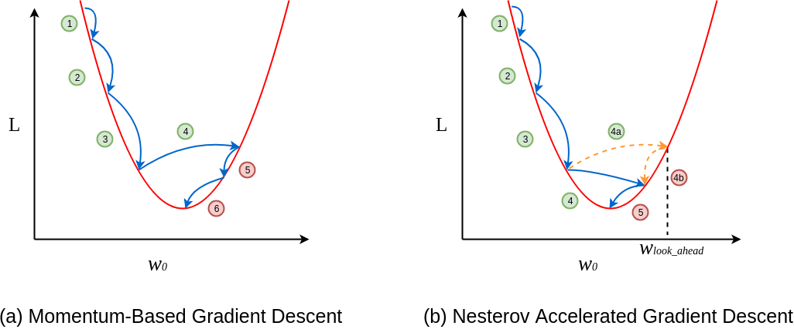
Figura 41: Exemplificação do método de Nesterov (à direita) para gradiente descendente utilizando momentum (à esquerda). Percebe-se que a cada passo, os valores da função custo diminuem tendendo ao mínimo. E quando esse valor se aproxima do mínimo, desacelera para facilitar a convergência.
Nesse método de otimização da função custo, primeiro olhamos para o onde o vetor atual momentum está apontando para, com ele, calcularmos o gradiente partindo desse ponto, como podemos verificar na Figura 42.
Figura 42: Representação da atualização dos vetores momentum utilizando o método de Nesterov. Na imagem à esquerda, verificamos a atualização do vetor momentum a partir de um determinado ponto. Na figura à direita verificamos a atualização do vetor momentum através do método de Nesterov, a partir do ponto onde o vetor está apontando.
O método de Nesterov utiliza o termo de momentum \( \rho v _{t-1} \) para atualizar os parâmetros \( \theta \). Assim, se computamos \( \theta - \rho v _{t-1} \) temos a aproximação da próxima posição dos parâmetros \( \theta \). Para calcularmos a atualização dos parâmetros, primeiro devemos definir a atualização de \( v _t \) utilizando o método de Nesterov, como descrito abaixo.
\[ \large{} v _{t} = \rho v _{t-1} + \alpha \nabla _{\theta} J(\theta - \rho v _{t-1}) \]
\[ \large{} \theta = \theta - v _t \]
onde, \( \rho \) é o termo definido como momentum (atrito, geralmente um valor em torno de 0.9), \( \alpha \) é a taxa de aprendizado e \( \nabla _{\theta} \) é o gradiente de \( J \) em relação aos parâmetros \( \theta \).
Assim, com a aplicação do método de Nesterov Momentum, o algoritmo de otimização da função converge muito mais rapidamente, evitando o problema de aproximação ruim da convergência no SGD.
AdaGrad
Outro método de otimização é chamado de Adaptive Gradient Algorithm (Adagrad). Esse método adapta a taxa de aprendizado aos parâmetros, realizando atualizações menores nos parâmetros, diminuindo o "barulho" das atualizações.
Como não precisamos definir uma taxa de aprendizado \( \alpha \), a convergência é mais rápida e confiável. O método adapta as atualizações e a taxa de aprendizado automaticamente de acordo com os níveis da superfície, impossibilitando que as atualizações sejam muito oscilantes em superfícies mais instáveis.
Essa atualização, ocorre da seguinte forma:
\[ \large{} \theta _{t+1,i} = \theta _{t,i} - \frac{\eta}{\sqrt{G _{t,ii}} + \epsilon} \cdot g _{t,i} \]
Atualizamos os parâmetros \( \theta \), multiplicando a taxa de aprendizado \( \eta \) pelo gradiente do ponto, e dividimos esse valor pela raiz quadrada dos somatórios dos quadrados dos gradientes para cada iteração \( t \). Além disso, \( \epsilon \cong 10 ^{-7} \).
Adam
Adaptative Moment Estimation (Adam) é outro método de otimização que computa taxas de aprendizado adaptativas para cada parâmetro, assim como AdaGrad e outros métodos de otimização.
Enquanto nos métodos que utilizam momentum, nós podemos pensar em uma bola descendo uma curva em direção ao ponto mínimo, Adam se comporta como se fosse uma bolsa pesada com atrito descendo essa superfície. Essa forma de minimização faz com que o erro de minimização seja o menor possível, ao mesmo tempo que o tempo de convergência seja pequeno.
Assim como os otimizadores que utilizam momentum, vistos nas seções anteriores, Adam utiliza uma média exponencial dos gradientes calculados anteriormente para definir a taxa de aprendizado. Com isso, a atualização dos parâmetros se dá de forma muito similar aos otimizadores que utilizam momentum.
A intuição da implementação do Adam é dividida em três etapas: momentum, correção de bias e AdaGrad.
Na primeira etapa - momentum - computamos as médias vetores momentum passados \( m _t \) e, na terceira etapa, os quadrados dos gradientes passados \( v _t \), respectivamente, como segue:
\[ \large{} m _t = \beta _1 m _{t-1} + (1 - \beta _1) \nabla _{\theta} J(\theta) \]
\[ \large{} v _t = \beta _2 v _{t-1} + (1 - \beta _2) \nabla _{\theta} J(\theta) ^2 \]
Onde \( m _t \) e \( v _t \) são, respectivamente, o momentum acumulado e o gradiente acumulado até um período \( t \).
Como, \( m _t \) e \( v _t \) são previamente, inicializados com 0's, foi observado que essas atualizações, principalmente nas etapas iniciais, tendem à zero e, especialmente quando a taxa de decaimento é baixa (ou seja, quando \( \beta _1 \) e \( \beta _2 \) estão próximos de 1).
Para isso, na segunda etapa neutralizamos essas tendências não previstas através de bias-correction. Para isso, calculamos o valor de \( m̂ _t \) para atualizar a direção de cada um dos parâmetros e, através dos valores dos gradientes de \( v̂ _t \), atualizamos efetivamente a otimização dos parâmetros. Assim, teremos:
\[ \large{} m̂ _t = \frac{m _t}{1 - \beta _1 ^t} \]
\[ \large{} v̂ _t = \frac{v _t}{1 - \beta _2 ^t} \]
Agora, só basta calcular as atualizações dos parâmetros \( \theta \) utilizando, por exemplo AdaGrad.
\[ \large{} \theta _{t+1} = \theta _t - \frac{\eta}{\sqrt{v̂ _t} + \epsilon} m̂ _t \]
Com isso, a otimização funcionaria corretamente com os parâmetros propostos para \( \beta _1 = 0.9 \) e \( \beta _2 = 0.999 \) e taxa de aprendizado \( \eta = 10 ^{-3} \) ou \( 5 \times 10 ^{-4} \)
Na figura abaixo, podemos perceber as diferenças entre os modelos de otimizações discutidos. Adam combina cada um dos modelos vistos anteriores a fim de otimizar a função custo.
Figura 43: Comparação entre os modelos de otimização vistos. Percebe-se que Adam combinas os diferentes métodos.
Mapreduce e Paralelismo de Dados
Muitas vezes, iremos trabalhar com grandes quantidades de dados e para isso, iremos dividir os o conjunto de dados processado no algoritmo de otimização em subconjuntos para que possamos processar cada um deles em diferentes máquinas e, assim, treinar o nosso algoritmo em paralelo.
Podemos dividir o nosso conjunto de treino em \( z \) subconjuntos, onde \( z \) corresponde ao número de máquinas que podemos usar em paralelo. Para cada uma dessas máquinas, calculamos
\[ \large{} \sum _{i=p} ^q (h _{\theta}(x ^{(i)}) - y ^{(i)}) \cdot x _j ^{(i)} \]
Com isso, Mapreduce irá utilizar desses dados mapeados a cada máquina, e "reduzir" eles calculando:
Algorithm 12 Algoritmo Mapreduce
1: procedure
2: for \( i=0 \) to \( n \) do
3: \( \theta := \theta _j - \alpha \frac{1}{z}(temp _j ^{(1)} + temp _j ^{(2)} + \dots + temp _j ^{(z)}) \)
4: end for
5: end procedure
Onde o valor de \( temp _j \) representa a função custo calculada em cada uma das máquinas. Mapreduce calcula a média, multiplicando pela taxa de aprendizado \( \alpha \) e atualizando os valores de \( \theta \).
Parte VI
Tópicos avançados
-
Redes neurais convolucionais (Convolutional neural networks)
-
Redes neurais recorrentes (Recurrent neural networks)
Redes neurais convolucionais (Convolutional neural networks)
Visão geral
Redes neurais convolucionais (CNNs ou ConvNets) são muito similares as redes neurais vistas nas Seções Redes Neurais: Representação e Redes Neurais: Aprendizado. Cada neurônio recebe inputs e executam funções lineares e não lineares de uma extremidade a outra da rede neural através da função custo. CNN é uma classe de rede neural artificial do tipo feed-forward, que vem sendo aplicada no processamento e análise de imagens digitais.
A principal diferença entre NNs e CNNs é que, basicamente, uma CNN pode ser pensada como uma rede neural que possui várias cópias do mesmo neurônio. Esse tipo de implementação nos permite trabalhar com modelos computacionalmente grandes enquanto mantém o número de parâmetros atuais.
Camadas de uma ConvNet
Como foi descrito acima, uma ConvNet é uma sequência de camadas que transforma um volume de ativações em outro através de uma função de diferenciação. Para isso, utilizamos camadas específicas para realizar o treinamento de uma ConvNet, dentre elas: Convolutional layer, Pooling layer e Fully-connected layer. Esta última, exatamente como uma rede neural regular.
A principal diferença entre uma dense layer e uma convolutional layer é que as camadas densas detectam padrões globais, enquanto camadas convolucionais detectam padrões locais.
Para a melhor compreensão será utilizado um exemplo CIFAR-10 [1] o qual consiste em uma base de dados com 60 mil imagens de tamanho 32x32 separadas em 10 classes. O conjunto de dados é separado em 50 mil para usado para treino e 10 mil para teste.
Uma ConvNet para classificar as imagens de CIFAR-10 tem a seguinte estrutura, detalhada abaixo:
- Input [32x32x3]: recebe um vetor dos valores dos pixels da imagem. Neste caso a imagem tem largura 32, altura 32 com três canais de cores (RGB);
Figura 44: Representação de uma camada de input de uma rede neural convolucional. Podemos perceber, que na imagem representada temos uma imagem de tamanho 4x4 com três canais de cores RGB e cada valor de cada pixel corresponde a um valor em cada uma dessas escalas de cores.
- Conv Layer: computa a saída dos neurônios que estão conectados a regiões de entrada. Cada um computa um produto escalar entre os pesos e a uma região as quais eles estão conectados no volume de entrada. Isso pode resultar em um volume como [32x32x12] se desejarmos utilizar 12 filtros kernel. Este filtro possui um tamanho que varre a imagem através de strides - distância entre duas varreduras do filtro - gerando uma nova imagem de mesmo tamanho, porém com esse filtro aplicado;

Figura 45: Representação da utilização de um filtro (kernel) para mapear os valores da imagem dada como entrada. Percebe-se que o filtro utilizado mantém as bordas da imagem de entrada.

Figura 46: Representação das operações realizadas por um filtro a partir de uma imagem. O filtro (3x3) multiplica os valores da imagem (5x5) pelos seus respectivos valores até gerar uma saída correspondente de tamanho 3x3. Esses valores retornados são somados e adicionados ao respectivo pixel da imagem (5x5) camada seguinte com o filtro aplicado.
-
ReLU Layer: computa a função de ativação;
-
Pool Layer: computa uma operação de redução da resolução ao longo das dimensões, resultando em um volume como [16x16x12];

Figura 47: Representação de uma operação de pooling. Na figura, utiliza-se o método de max-pooling com um filtro de tamanho 2x2 o qual escolhe o maior valor do pixel que se encontra dentro do filtro.
- FC Layer: computa as pontuações das classes, resultando em um volume de tamanho [1x1x10], onde cada um dos 10 números representa uma categoria da base de dados CIFAR-10
Abaixo, na Figura 48 está representado, esquematicamente uma ConvNet voltada para a base de dados CIFAR-10. Nela, percebemos as operações que foram realizar ao longo do processamento de convolução e de aprendizado da classificação.
Figura 48: Representação de uma ConvNet para a base de dados CIFAR-10
Além disso, uma camada de convolução de uma ConvNet recebe alguns outros parâmetros que serão descritos a seguir:
-
Aceita um volume de tamanho: \( W _1 \times H _1 \times D _1 \);
-
Requer quatro hiperparâmetros:
-
Número de filtros (kernels): \( K \)
-
Tamanho do filtro: \( F \)
-
Stride (distância entre duas posições consecutivas do filtro): \( S \)
-
Tamanho da borda (zero-padding): \( P \)
-
-
Produz um volume de: \( W _2 \times H _2 \times D _2 \) onde:
-
\( W _2 = \frac{(W _1 - F + 2P)}{S + 1} \)
-
\( H _2 = \frac{(H _1 - F + 2P)}{S + 1} \)
-
\( D _2 = K \)
-
Geralmente, uma inicialização comum para esses parâmetros é \( F=3 , \ S=1 \) e \( P=1 \), porém esses parâmetros podem ser modificados de acordo com a intenção de treino da ConvNet.
Da mesma forma, uma camada de pooling de uma ConvNet recebe alguns parâmetros a seguir descritos:
-
Aceita um volume de tamanho: \( W _1 \times H _1 \times D _1 \);
-
Requer dois hiperparâmetros:
-
Tamanho do filtro: \( F \)
-
Stride: \( S \)
-
-
Produz um volume de: \( W _2 \times H _2 \times D _2 \) onde:
-
\( W _2 = \frac{(W _1 - F)}{S + 1} \)
-
\( H _2 = \frac{(H _1 - F)}{S + 1} \)
-
\( D _2 = D _1 \)
-
Assim, percebemos que uma ConvNet é simplesmente uma lista de camadas que transformam um volume de entrada (neste caso uma imagem) e um outro volume de saída (neste caso os valores das classes).
Técnicas de otimização de treino
Em muitos casos, o conjunto de dados que desejamos utilizar para treinar o nosso modelo não é grande o suficiente para potencializar a acurácia do modelo para casos de teste. Para isso, nesta seção serão apresentadas algumas técnicas de manipulação de dados que possam ser úteis para otimização do treino utilizando milhares de imagens.
Data Augmentation
Essa técnica é utilizada para aumentar o tamanho do conjunto de dados e evitar casos de overfitting. Essa técnica realiza transformações nas imagens que serão usadas para serem treinadas a fim de potencializar a generalização do modelo. Essas transformações podem ser compressões, rotações, alongamentos e algumas mudanças de cor.
Modelos pré-treinados
Nesta seção, iremos discutir sobre modelos de ConvNets previamente treinados a fim de aumentarmos a acurácia do nosso modelo. Em outras palavras, iremos utilizar um modelo que foi treinado com milhões de imagens que estão relacionadas com o nosso modelo. Isso nos garante em ter camadas de convolução extremamente eficazes.
Dessa forma, podemos treinar o nosso modelo com um conjunto de dados pequeno, pois a camada de convolução já foi treinada anteriormente com um conjunto de dados muito maior, podendo, portando aumentar a confiabilidade dos resultados de teste do nosso modelo.
Fine tuning
Após utilizar um modelo pré-treinado, devemos ajustar as camadas finais para se adaptarem com o nosso modelo. Fazemos isso, pois as camadas inicias conseguem classificar muito bem dados de baixo nível, como bordas, linhas e contornos em uma imagem. Assim, se ajustarmos as camadas finais, podemos procurar apenas recursos relevantes para o nosso problema que está relacionado ao nosso conjunto de treino.
Detecção e Segmentação
Detecção de objetivos é um problema multitarefa que usa algoritmos de classificação e localização a fim de saber qual objeto é e qual a sua localização. Na Figura 49 temos uma representação de uma imagem que os objetos presentes foram classificados e localizados.

Figura 49: Representação de uma imagem que seus objetos foram devidamente classificados e localizados. Em (a) está representada a classificação da imagem, em (b) a localização dos objetos, em (c) a segmentação semântica da imagem e em (d) a segmentação classificada dos objetos e suas determinadas localizações.
Este tipo de estudo é muito recorrente na área de visão computacional, principalmente usado para a detecção de rostos através de imagens e em carros autônomos através de imagens e vídeos.
Segmentação Semântica
Dada uma imagem, desejamos classificar cada pixel dessa imagem em diferentes categorias. Podemos verificar na Figura 50 que dadas imagens de entradas, classificamos cada pixel em cinco diferentes categorias: céu, árvores, grama, gato ou vaca.

Figura 50: Representação de segmentação semântica. Na coluna da esquerda, percebemos que classificamos a imagem de um gato em quatro categorias representadas pelas cores azul, rosa, verde e amarelo. Na coluna da direita classificamos a imagem em quatro categorias representadas pelas cores azul, rosa, verde e marrom.
Para a implementação desse método, utilizamos de ConvNets que trabalham de forma muito específica: diminuindo e aumentando a resolução da imagem usando pooling e upsampling ou unpooling.

Figura 51: Representação de uma ConvNet de segmentação semântica. Percebemos que existem dois tipos de alteração da resolução da imagem: usando pooling, que diminui a resolução da imagem e upsampling que aumenta a resolução da imagem.
Com essa implementação, podemos promover o aprendizado da rede neural centrado em cada pixel da imagem e, assim, classificar cada pixel em diferentes classes.
Localização
Dada uma imagem, desejamos localizar onde está determinado objeto na imagem. Para isso, temos dois tipos de localização: localização com apenas um objeto na imagem e localização com mais de um objeto.
Podemos verificar como funciona a localização de objetos em imagens na Figura 52

Figura 52: Representação de uma localização de objetos. Percebemos que a partir de uma coordenada \( (x, y) \) prevemos os valores da altura e da largura da bounding box que limita a figura do gato, neste caso.
Para o problema de localização de objetos, trataremos esse problema como um problema de regressão, que dado uma coordenada \( (x, y) \) de uma bounding box, desejamos prever as outras coordenadas dessa bounding box de acordo com a classificação gerada pela ConvNet. Assim, o resultado da função de localização será uma tupla do tipo \( (x, y, w, h) \) onde \( x \) e \( y \) são as coordenadas iniciais da bounding box e \( w \) e \( h \) são, respectivamente a largura e a altura da bounding box.
Detecção de Objetos
Dada uma imagem que contém múltiplos objetos, desejamos classificar e localizar cada um desses objetos presentes na imagem.
Podemos verificar na Figura 53 como funciona a detecção de objetos.

Figura 53: Representação de detecção de objetos. Percebe-se que, para cada um dos objetos na imagem, existe uma bounding box localizando cada um dos objetos e para cada uma dessas bounding boxes, sua classificação.
Para isso, foram criados dois métodos principais de detecção de objetos em imagens You Only Look Once (YOLO) e Single Shot Detector (SSD).
Para YOLO, o método é essencialmente regressão, o qual usa uma imagem para aprender as possibilidades das classes de acordo com as coordenadas das bounding boxes. YOLO divide cada imagem em uma rede \( SxS \) e cada rede prevê \( N \) bounding boxes e a confiança da precisão se cada bounding box realmente está contornando um objeto (Figura 54). Então, são previstas um total de \( SxSxN \) bounding boxes que, em sua maioria têm pontuações de confiança baixas e, portanto, podemos nos livrar delas.

Figura 54: Representação de um algoritmo de detecção de objetos usando o método YOLO. A partir de uma imagem de entrada, a dividimos em uma rede de tamanho \( SxS \) e, através de um algoritmo de regressão, encontramos as coordenadas das bounding boxes e a confiança de que cada uma delas possui um objeto.
Por outro lado, SSD atinge um melhor equilíbrio entre rapidez e precisão. O SSD executa uma ConvNet na imagem de entrada apenas uma vez e calcula um mapa de recursos (feature map). Agora, executamos a convolução com um kernel 3x3 para prever as bounding boxes e as probabilidades de categorização.

Figura 55: Representação de um algoritmo de detecção de imagens usando SSD. A partir de uma imagem de entrada, através de uma ConvNet prevemos as coordenadas das bounding boxes com suas respectivas probabilidades, através de apenas uma passagem pela rede para cada objeto.
Segmentação de Instâncias
Assim, como detecção de objetos, desejamos localizar e classificar objetos em uma dada imagem, porém, além de apenas definir uma bounding box para cada um dos objetos, desejamos segmentar a imagem de acordo com cada objeto encontrado e classificá-los, como pode-se perceber na Figura 56
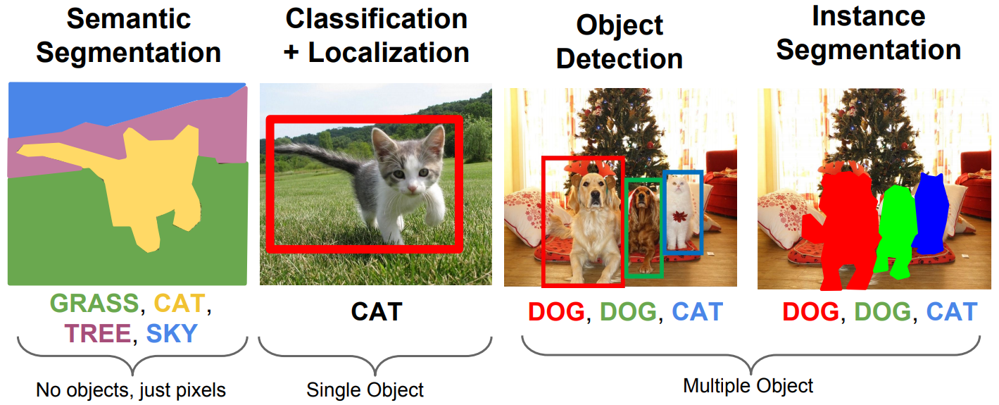
Figura 56: Comparação entre os diferentes tipos de detecção e segmentação de objetos em imagens.
Redes neurais recorrentes (Recurrent neural networks)
Visão geral
Redes neurais recorrentes, ou RNNs, são um tipo de rede neurais que usam dados sequenciais ou dados de séries temporais. Os algoritmos mais conhecidos utilizados estão relacionados a tradução de linguagens, processamento de linguagem natural (Natural Language Processing (NLP)), reconhecimento de discursos e legenda de imagens.
Assim como feedforward e redes neurais convolucionais, RNNs utilizam de dados de treino para aprender, ou seja, é um tipo de aprendizagem supervisionada. A principal diferença de uma RNN é que ela possui uma espécie de memória que guarda as informações prévias de input que influenciam nas próximas camadas da rede neural (Figura 57). Além disso, RNNs dependem dos elementos posteriores dentro da sequência.

Figura 57: Representação da comparação estrutural de umas rede neural recorrente e uma rede neural tradicional do tipo feedforward.
Para representação de uma RNN podemos utilizar dois métodos: rolled e unrolled mostradas na Figura 58.
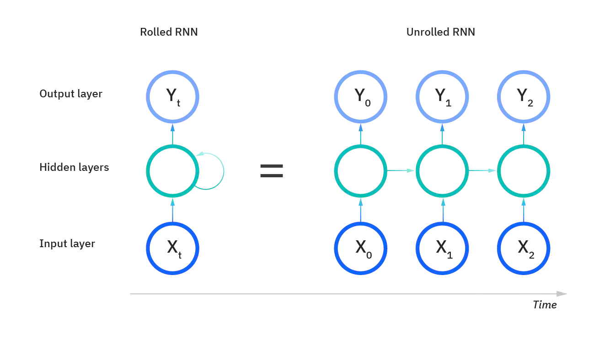
Figura 58: Duas formas básicas de representação de uma RNN. A forma rolled representa a rede neural inteira, focando apenas da saída. Na forma unrolled representa as camadas individuais com seus respectivos parâmetros.
Outra importante diferença em uma RNN em relação a uma rede neural do tipo feedforward é que no caso das RNNs, seus nodos compartilham dos mesmos parâmetros ao logo de cada camada da rede, enquanto em uma rede feedforward possui diferentes parâmetros (pesos) em cada nodo.
Vetores de palavras (word embeddings)
Como foi mencionado, uma das principais utilizações de RNNs é para o processamento de linguagem natural. Contudo, uma rede neural não consegue distinguir diferenças semânticas entre frases e impactos de determinadas palavras apenas pelo contexto. Sabemos que uma rede neural trabalha com valores numéricos e, para isso, devemos codificar essas palavras e frases de forma que o nosso modelo possa reconhecer e processar essas diferenças entre elas.

Figura 59: Representação de um espaço vetorial formado pelas word embeddings. Podemos verificar as similaridades das palavras dentro de um mesmo círculo e a diferenças entre elas quando não pertencem ao mesmo grupo.
Dessa forma, palavras podem ser diferenciadas em um espaço vetorial de acordo com o ângulo que geram entre elas. Por exemplo, palavras com significados opostos tendem a gerar um ângulo maior, enquanto palavras com significados similares geram um ângulo menor. Podemos verificar isso, na Figura 60, a seguir.

Figura 60: Representação da diferenciação de palavras através de vetores. Percebe-se que palavras com significado similar, possuem um ângulo menor, como por exemplo, as palavras ’King’ e ’Queen’, enquanto palavras com significados distintos como ’Woman’ e ’King’ possuem um ângulo maior.
Nesta seção, serão apresentadas formas de pré-processamento de dados em forma de texto a fim de alimentar a nossa rede neural. Para convertermos esse texto para valores numéricos, utilizaremos um métodos chamados one-hot encoding e word vectors.
One-hot encoding
One-hot encoding representa cada palavra como um vetor de tamanho \( V \) , onde \( V \) é o número de palavras únicas no nosso conjunto de dados. Cada palavra é codificada em um vetor binário no qual o valor 1 é um índice único para cada palavra e o valor 0 para o restante das palavras. Para visualizar isso melhor, podemos pensar nas duas frases: ”Redes Neurais são difíceis” e ”Redes Neurais são fáceis”, como estão exemplificadas na Figura 61.
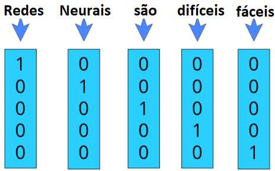
Figura 61: Exemplo da codificação one-hot em um vocabulário de cinco palavras, ou seja, V = 5 → [’Redes’, ’Neurais’, ’são’, ’difíceis’, ’fáceis’] .
Essa codificação mapeia cada palavra a um vetor único em que cada posição representa uma palavra distinta do vocabulário. Esse método converte qualquer palavra em valores numéricos de uma maneira muito simples.
Todavia, com essa codificação temos dois problemas principais: uso de memória inutilizada e perda semântica da frase. Primeiramente, teremos um vetor codificado para cada uma das palavras que aumenta o tamanho de acordo com a complexidade do vocabulário, então teremos um vetor enorme, composto basicamente por zeros, para representar uma só palavra o que pode levar a um uso excessivo e desnecessário de memória. Além disso, esse tipo de codificação não guarda o significado semântico de cada palavra. Para isso, gostaríamos de representar um vetor que representasse o valor semântico de cada palavra e similaridade entre elas, por exemplo, as palavras ”fáceis” e ”difíceis”, gostaríamos que fossem dois vetores completamente distintos, enquanto ”errado” e ”incorreto” gostaríamos que fossem vetores semelhantes.
Para isso, utilizamos de outro método de codificação chamado word2Vec que resolve os dois problemas citados acima.
Word2Vec
Em word2Vec, existem dois tipos de arquiteturas: Continuous Bag Of Words (CBOW) e Skip Gram. Primeiro iremos discutir a arquitetura Skip Gram para depois discutirmos CBOW.
Iremos fazer com que os dados nos digam quais palavras estão ocorrendo próximo de uma outra palavra. Usamos um método chamado ”janela de contexto” para nos dizer isso.
Se utilizarmos como exemplo a seguinte frase ”Deep Learning is very hard and fun”. Primeiro devemos definir o tamanho da janela (window size), que pode ser, por exemplo igual a 2. Precisamos iterar sobre todas as palavras presentes nos nossos dados - nesse caso é apenas uma frase. Como o tamanho da janela é dois iremos considerar duas palavras antes e duas palavras depois da palavra que estamos analisando, como percebe-se na Figura 62. E iremos repetir isso até que todas as palavras sejam coletadas em forma de pares.

Figura 62: Representação da formação de uma ”janela de contexto”.
Com isso feito, podemos formar pares entre as palavras dos dados verificados de forma que a palavra que estamos verificando esteja relacionada com uma palavra que pertence ao contexto dela, ou seja, buscaremos pares ordenados do tipo (target word, context word). Para a frase do exemplo teremos os seguintes pares.
-
(Deep, Learning), (Deep, is)
-
(Learning, Deep), (Learning, is), (Learning, very)
-
(is, Deep), (is, Learning), (is, very), (is, hard)
-
(very, learning), (very, is), (very, hard), (very, and)
-
(hard, is), (hard, very), (hard, and), (hard, fun)
-
(and, very), (and, hard), (and, fun)
-
(fun, hard), (fun, and)
Esses dados podem ser considerados os nossos dados de treino para word2Vec.
O modelo Skip Gram tenta prever o contexto de cada palavra dada uma palavra que irá ser focada. Usamos uma rede neural para a previsão dessa tarefa. A entrada da rede neural será a versão codificada one-hot das palavras, onde o tamanho \( V \) do vetor será o tamanho do vocabulário. A arquitetura da rede está exemplificada na Figura 63, abaixo.

Figura 63: Representação de uma rede neural para a codificação Skip Gram a partir da entrada (Deep, Learning), onde ”Deep” é a target word e ”Learning” é a context word. A partir da target word, treinamos a rede neural para prever a context word, sendo que a saída e a entrada da rede estão na forma one-hot encoding.
Para CBOW, a única diferença é que nós tentamos prever a target word dada a context word, então, basicamente, invertemos o modelo Skip Gram para gerarmos o modelo CBOW, como está representado na Figura 64.
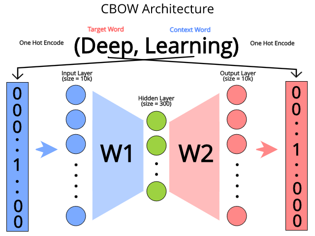
Figura 64: Representação de uma rede neural para a codificação CBOW a partir da entrada (Deep, Learning), onde ”Deep” é a target word e ”Learning” é a context word. A partir da context word, treinamos a rede neural para prever a target word, sendo que a saída e a entrada da rede estão na forma one-hot encoding.
Arquitetura de uma RNN
Como foi explicado na Seção Visão geral, uma RNN é uma classe de redes neurais que permite que as saídas anteriores sejam usadas como entradas, embora tenham estados ocultos. Com isso podemos determinar uma arquitetura básica desse tipo de rede neural e definir os seus parâmetros e suas funções de ativação que podem ser, potencialmente, utilizadas.
Na Figura 65 está representada uma estrutura básica de uma RNN. Nela, para cada pedaço de tempo \( t \), a ativação \( a ^{<t>} \) e a saída \( y ^{<y>} \) são expressos da seguinte forma:
\[ \large{} a ^{<t>} = g _1 (W _{aa} a ^{<t-1>} + W _{ax} x ^{<t>} + b _a) \]
\[ \large{} y ^{<t>} = g _2 (W _{ya} a ^{<t>} + b _y) \]
Onde \( W _{ax}, \ W _{aa}, \ W _{ya}, \ b _a, \ b_y \) são coeficientes que são temporariamente compartilhados e \( g _1 \) e \( g _2 \) são as funções de ativação.
Os prós e contras de uma RNN estão descritos abaixo:
Tabela 5: Comparação entre os prós e contras de uma RNN
| Prós | Contras |
|---|---|
| Possibilidade de processamento de entrada de qualquer tamanho | Computação lenta |
| O tamanho do modelo não aumenta de acordo com o tamanho da entrada | Dificuldade de acessar informações de tempo muito distante |
| A computação leva em consideração informações históricas | Não consegue levar em consideração nenhuma entrada futura para o atual estado |
| Os pesos são compartilhados ao longo do tempo |
Aplicações
Os modelos de RNN são muito utilizados, como foi mencionado, em áreas como processamento de linguagem natural, reconhecimento de discurso e geração de música. As diferentes aplicações serão representadas a seguir com suas respectivas arquiteturas.
One-to-one
O tipo de RNN one-to-one é uma rede neural muito simples, na qual \( T _x = T _y = 1 \). Esse tipo de RNN é muito utilizada em redes neurais tradicionais vistas anteriormente.

Figura 66: Representação de uma RNN do tipo one-to-one.
One-to-many
O tipo de RNN one-to-many é uma rede neural, na qual \( T _x = 1 , \ T _y > 1 \). Esse tipo de RNN é muito utilizada em geração de música.
Figura 67: Representação de uma RNN do tipo one-to-many.
Many-to-one
O tipo de RNN many-to-one é uma rede neural, na qual \( T _x > 1 , \ T _y = 1 \). Esse tipo de RNN é muito utilizada em classificação de sentimento.

Figura 68: Representação de uma RNN do tipo many-to-one.
Many-to-many
O tipo de RNN many-to-many é uma rede neural, na qual \( T _x = T _y \). Esse tipo de RNN é muito utilizada em nome de reconhecimento de entidade.

Figura 69: Representação de uma RNN do tipo many-to-many com saídas e entradas em números iguais.
A outra forma de representação desse tipo de RNN é na forma \( T _x \neq T _y \), também chamada de sequence-to-sequence, que é realiza a codificação da entrada usando a arquitetura many-to-one e a produção da saída realizada por uma única entrada do tipo one-to-many, como se pode perceber na Figura 70. Esse tipo de RNN é muito utilizada em tradução de máquina.

Figura 70: Representação de uma RNN do tipo many-to-many com saídas e entradas em números diferentes.
Função custo (Cost function)
Como foi visto nas seções anteriores, a função custo de uma rede neural tem como objetivo calcular o erro entre os valores de entrada a cada passo de tempo. A função custo está representada abaixo.
\[ \large{} \mathcal{L} _{\theta} (y, ŷ) = - \sum _{t+1} ^{T _y} \mathcal{L} _{\theta} (y ^{< t >} , ŷ ^{< t >}) \]
onde \( \mathcal{L} _{\theta} (y, ŷ) _t \) é a função custo definida. Geralmente essa função custo é a cross entropy loss.
Backpropagation
O algoritmo de backpropagation é feito a cada ponto em um período de tempo. No tempo \( T \), da derivada da função custo \( \mathcal{L} \) a respeito de uma matriz de pesos \( W \) é expressa como segue:
\[ \large{} \frac{\partial \mathcal{L} ^{(T)}}{\partial W} = \sum _{t=1} ^{T} \frac{\partial \mathcal{L} ^{(T)}}{\partial W} \Bigg| _{(t)} \]
Para realizar essa computação, realizamos as atualizações dos parâmetros feedforward, a cada passo de tempo, e ao computar a função custo, realizamos a backpropagation. Contudo, como esse tipo de rede neural processa os dados sequencialmente de forma a computar cada derivada para cada período de tempo. Esse algoritmo é chamado de backpropagation through time [22].
Realizar o cálculo das derivadas de forma sequencial pode ser uma tarefa pouco eficiente. A computação das derivadas parciais são realizadas de forma end-to-end, o que, muitas vezes pode causar diversos problemas como desaparecimento e explosão do gradiente que serão explicados em detalhes na Seção Gradiente de desaparecimento e explosão.
Funções de ativação e propriedades
Como vimos nas seções anteriores, para cada transição de camada, precisamos de uma função de ativação para atualizar os valores dos respectivos nodos da camada seguinte a partir dos nodos da camada anterior. Para RNNs, temos basicamente três tipos de funções de ativação:
- Sigmoid:
\[ \large{} g(z) = \frac{1}{1 + e ^{-z}} \]
- tanh:
\[ \large{} g(z) = \frac{e ^z - e ^{-z}}{e ^z + e ^{-z}} \]
- ReLU:
\[ \large{} g(z) = max(0, z) \]
Gradiente de desaparecimento e explosão
Esse fenômeno ocorre quando o gradiente, no contexto das RNNs, não consegue calcular valores profundos da rede neural devido às sucessivas multiplicações. Muitas vezes essas multiplicações podem ser exponenciais, decrementando ou incrementando, os valores dos parâmetros de acordo com o número de camadas da rede neural.
O principal problema gerado pelo desaparecimento/explosão do gradiente é que a RNN não consegue guardar as informações vistas em camadas muito anteriores da sequência, pois muitos valores estarão zerados ou NaNs.
A fim de evitar o problema de explosão, usa-se a técnica de ”recorte do gradiente” (gradient clipping) na qual limita o valor do gradiente calculado a fim de evitar explosões que eventualmente podem ocorrer na backpropagation. Este método está representado na Figura 71.
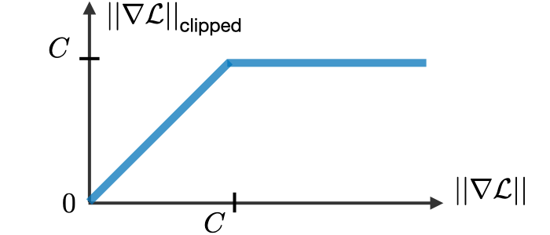
Figura 71: Representação da técnica de ”recorte do gradiente”. No eixo y está representado o valor do gradiente após a realização do corte de acordo com o crescimento do valor do gradiente, representado no eixo x.
Outra metodologia abordada para evitar o problema de dificuldade de memorização foi a criação de portões de memorização, utilizados em arquiteturas que serão vistas na seção a seguir, como GRUs e LSTMs.
Long Short-Term Memory (LSTM)
As arquiteturas de LSTMs são utilizadas para resolver os problemas de dificuldade de memorização de longas sequências causadas pelo desaparecimento do gradiente.
A LSTM é uma RNN que memoriza os valores em intervalos arbitrários, sendo, assim, muito adequada para processar e prever séries de valores temporais com intervalos de tempo de duração desconhecida. Como pode-se verificar na Figura 72, a LSTM possui uma estrutura de cadeia que contém quatro redes neurais e diferentes blocos de memória chamados ”células”.
Para cada período de tempo, a LSTM retorna dois valores: \( h _t \) e \( c _t \) que são, respectivamente, os valores da hipótese de cada período e os valores da célula de cada período. Ambos valores possuem o mesmo tamanho \( n \). A célula guarda as informações de longo prazo da rede neural, enquanto a hipótese é o valor gerado de determinado período de tempo.
Figura 72: Representação de uma arquitetura LSTM. Percebe-se que existem três gates (input, forget e output) e uma célula, onde são realizadas as operações de memorização.
Com isso, uma LSTM consegue ler, apagar e escrever informações da célula. Essas informações são controladas através dos portões (gates) que, para cada período de tempo, eles podem estar fechados (0) ou abertos (1). Esses portões são dinâmicos, ou seja, os seus valores são computados de acordo com o contexto da sequência passada como entrada. A seguir, estão listados e definidos cada um dos gates representados na Figura 72 acima.
- Forget Gate: as informações que não são mais úteis no estado da célula são removidas através do forget gate. Os valores de \( x ^{< t >} \) e \( a ^{< t-1 >} \) são alimentadas no gate e multiplicadas pelas matrizes \( W \) , resultando em um valor binário após a passagem pela função de ativação. Caso a saída seja 0, o valor é esquecido e caso seja 1 o valor é mantido para uso futuro.
\[ \large{} f _t ^1 = \sigma (W _{f ^1} \cdot [a ^{< t-1 >} x ^{< t >}] + b _{f ^1}) \]
- Input Gate: as informações úteis para o estado da célula é feita pelo input gate. Primeiro, a informação é regulada através da função sigmoide, filtrando os valores, e, depois um vetor de valores criados usando a função \( tanh \) retorna valores entre -1 a 1, que contém todos os valores possíveis para \( x ^{< t >} \) e \( a ^{< t-1 >} \). Em seguida, os valores do vetor e os valores regulados são multiplicados para obter as informações úteis.
\[ \large{} f _t ^1 = \sigma (W _{f ^2} \cdot [a ^{< t-1 >} x ^{< t >}] + b _{f ^1}) \odot tanh (W _{f ^2} \cdot [a ^{< t-1 >} x ^{< t >}] + b _{f ^2}) \]
- Output Gate: as informações úteis da célula atual que podem ser usadas nos estados seguintes são extraídas através do output gate. Um vetor é, primeiramente, gerado aplicando a função \( tanh \) na célula e, depois, essa informação é regulada através da função sigmoide filtrando os valores a serem lembrados. Os valores do vetor e dos valores regulados são multiplicados e são enviados como saída para a célula seguinte.
\[ \large{} h' _t = \sigma (W _{h' _t} \cdot [a ^{< t-1 >} x ^{< t >}] + b _{h' _t}) \odot tanh (c _t) \]
No entanto, LSTMs possuem um problema similar aos modelos de RNNs. Quando as sentenças são muito grandes, LSTMs não funcionam muito bem. Isso acontece porque o valor de uma célula muito anterior à célula atual decresce exponencialmente e isso potencializa a perda de informação e a falta de controle do processo. Em geral, RNNs e LSTMs possuem três problemas:
-
A computação sequencial inibe a paralelização. Em outras palavras não podemos paralelizar tarefas em uma RNN ou em uma LSTM devido ao fato de que seu processamento é sequencial;
-
Sem modelagem explícita de dependências de longo e curto alcance;
-
A distância entre as posições é linear.
Contudo, mesmo com a memorização mais eficiente, LSTMs não resolvem efetivamente o problema do desaparecimento do gradiente, justamente por, ainda assim, se tratar de uma sequência. Atualmente, esse problema pode ser resolvido através da utilização de arquiteturas de redes neurais residuais, ou ResNets [8].
Bidirectional & Multi-layer RNNs
Bidirectional RNNs (BRNNs)são uma arquitetura que utilizam de duas RNNs independentes que processam a mesma sequência, porém, uma delas processa essa sequência no sentido convencional (forward RNN) - do início para o fim - e a outra processa no sentido contrário (backward RNN) - do final para o início. As saídas dessas redes, no final do processamento, em geral, são concatenadas para cada período de tempo. Na Figura 73 abaixo, está representada uma generalização da arquitetura de uma BRNN.
Figura 73: Representação de uma BRNN. Percebe-se que existem duas RNNs processando, independentemente duas informações da mesma sequência de entrada em sentidos opostos.
BRNNs são muito poderosas para classificações de sentimento, pois conseguem compreender o contexto das frases extremamente bem.
Multi-layer RNNs são uma arquitetura que possuem diversas camadas de RNNs empilhadas processando a mesma informação. Esse tipo de arquitetura é muito poderosa, porém o custo computacional para o processamento das informações é muito alto. São frequentemente usadas para problemas de tradução de máquina. A Figura 74 abaixo exemplifica esse tipo de arquitetura.

Figura 74: Exemplificação de uma arquitetura Multi-layer RNN.
Attention
Em problemas do tipo seq2seq, quando criamos um modelo de tradução de máquina que tem como objetivo traduzir uma sentença geramos um problema chamado bottleneck (Figura 75), o qual toda a informação da sentença que desejamos traduzir fica acumulado na camada da última palavra da sentença, devido ao processamento sequencial de uma RNN, possibilitando grande perda de informações passadas e dificultando a tradução.
Figura 75: Exemplificação do problema de bottleneck, onde toda a informação da sequência que deseja ser traduzida acaba ficando acumulada na camada da última palavra da sentença (retângulo laranja). Esse tipo de problema gera impactos na tradução, principalmente para linguagens que não se relacionam linearmente.
Para resolver o problema mencionado acima, foram criadas técnicas para prestar atenção a palavras específicas e influenciar a tradução a cada período de tempo. Por exemplo, quando traduzimos uma frase, prestamos atenção na palavra que estamos querendo traduzir e validamos a tradução baseando-se nas palavras anteriores e futuras. Uma RNN pode realizar isso, através de uma técnica chamada attention.
Em uma RNN, ao invés de codificar toda a sentença um estado interno da rede neural, cada palavra corresponde a um estado interno que é passado até o estágio de decodificação, como está representado na Figura 76.
Figura 76: Representação de um processo de encoding-decoding. Percebe-se que os valores de \( x _i \) são os valores de input de cada célula. Esses valores são codificados, gerando os valores \( c _i \), a fim de serem decodificados no final da operação, gerando \( s _i \). Os valores gerados como saída baseado em cada um dos valores decodificados são os valores de \( y _i \).
Contudo, um dos problemas dessa arquitetura é que, como para cada valor codificado a partir dos valores de entrada, devemos gerar um único vetor \( c \), esse processo pode acarretar na perda de informações importantes devido ao bottleneck.
Para resolver esse problema, utilizamos o método de Attention. Uma RNN utilizando esse método está representada na Figura 77.

Figura 77: Representação de uma arquitetura de RNN utilizando attention. O módulo à esquerda representa o mecanismo de attention.
O modelo com Attention possui uma única camada de encoding, com 4 entradas \( x _i \) e com 4 saídas \( h _i \). O mecanismo de attention está localizado entre as camadas de encoding e decoding. As entradas dessa camada são os vetores de saída \( h _i \) da camada de encoding e os vetores \( s _i \) dos estados do decoder. E sua saída é uma sequência de vetores chamados vetores de contexto \( c _i \).
Os vetores de contexto possibilitam com que o decoder foque em determinadas partes da entrada quando está tentando prever a saída. Para o cálculo desses vetores, realizamos uma soma ponderada dos valores \( h _i \) gerados pela camada de encoding com os pesos \( a _i \) gerados a partir do cálculo do grau de relevância da entrada \( x _i \) sobre o output \( y _i \) no tempo \( i \). Em outras palavras:
\[ \large{} c _i = \sum _{j=1} ^i a _{ij} h _j \]
Os valores de \( a _{ij} \) são aprendidos por uma rede neural densa com uma camada de ativação softmax.
Para exemplificar o processo de attention e como relaciona cada um dos estados nos processos de encoding-decoding, podemos pensar na tradução da frase "L’accord sur la zone économique européenne a été signé en août 1992.", em francês para o inglês, como está representado na Figura 78.

Figura 78: Representação de um processo de tradução da frase "An <unk> dog runs through the grass in front of a white fence" para o alemão. Os pixels mais amarelados representam o quanto de atenção foi prestado a cada etapa da tradução.
Como visto, o método de attention aumentou significantemente a performance técnicas de Neural Machine Translation (NMT), devido ao fato de possibilitar que o decoder foque apenas em determinadas partes da sequência. Além disso, resolve o problema bottleneck, pois possibilita que o decoder olhe diretamente para a sentença que deve ser traduzidas.
Contudo, apesar da alta significância dessa técnica, ainda não conseguimos resolver o problema de processarmos os dados de entrada em paralelo. Para uma entrada longa, o tempo de processamento dessa técnica é aumentado significativamente.
Redes neurais convolucionais para NLP
Como foi visto na Seção Redes neurais convolucionais (Convolutional neural networks), CNNs conseguem paralelizar atividades devido às camadas de convolução que atuam como cópias de um mesmo neurônio trabalhando em paralelo. CNNs (Redes neurais convolucionais (Convolutional neural networks)) podem ajudar a resolver esse problema.
No caso das CNNs, quando utilizadas para realização de problemas que envolvem sequências de palavras, por exemplo, as entradas são palavras representadas por vetores de tamanho \( k \), e logo após, um filtro de convolução é aplicado a fim de gerar novos valores a essas palavras. Para cada um dos vetores gerados, escolhe-se o maior valor de cada vetor, a fim de aplicar o pooling. Na última camada, aplica-se a função de ativação nos resultados (ver Figura 79).

Figura 79: Representação de uma CNN voltada para a classificação de sentimento de uma sentença.
A razão pela qual uma CNN pode funcionar em paralelo é que cada palavra de entrada pode ser processada ao mesmo tempo e não depende necessariamente da palavra anterior já estar traduzida. Além disso, a distância entre o output e cada input de uma CNN está na ordem de \( log(N) \), o que é muito melhor que uma RNN cuja distância está na ordem linear \( N \).
Com isso, seria interessante se pudéssemos realizar tarefas de forma paralela como as CNNs realizam juntamente com a efetividade da compreensão semântica do mecanismo de attention. Com base nisso, uma nova arquitetura foi desenvolvida chamada transformers que será detalhada na seção seguinte.
Transformers
O artigo publicado em 2017 chamado "Attention is all you need"[21] mudou a forma de como o mecanismo de attention era visto. Transformers começaram a ser aplicados em tarefas de NLP e agora estão sendo utilizados em diversas outras áreas de pesquisa como CV.
Como visto nas seções anteriores, arquiteturas de RNNs, como por exemplo LSTMs, processam os dados sequencialmente através das suas diversas hidden layers, empilhando as informações. No caso dos transformers, as informações são processadas paralelamente, o que acarreta na perda de ordem das sequências.
Um transformer possui uma arquitetura similar aos modelos previamente vistos. Ele consiste num conjunto de encoders e decoders, como podemos visualizar na Figura 80, a seguir.
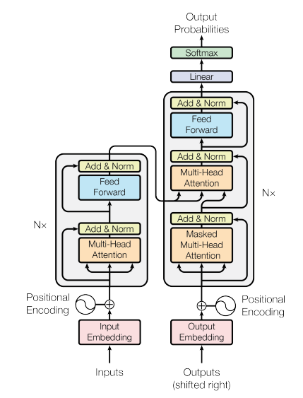
Figura 80: Representação de uma estrutura básica de um transformer. Percebe-se que a partir de uma dada entrada, as sequências
A revolução dos transformers começou com a ideia de mudar a representação da entrada dos dados a fim de alimentar toda a camada de input de uma vez só através de um conjunto em forma de tokens, exemplificado na Figura 81. Esse conjunto de entrada pode ser escrito como \( X = x _1 , x _2 , \dots , x _N \), onde \( x \in \mathbb{R} ^{N \times d _{in}} \) onde os elementos da sequência \( x _i \) referem-se aos tokens.

Figura 81: Exemplificação do processo de tokenização. Percebe-se que dado um conjunto fixo de uma sequência de palavras, dividimos cada uma dessas palavras em tokens a fim de serem processamos como um conjunto.
Após a tokenização, projetamos essas palavras em espaço geométrico distribuído, ou seja, como visto na Seção Vetores de palavras, word embeddings, capturando o sentido semântico das palavras.
Positional encoding
Quando processamos as palavras em forma de tokens, o nosso modelo perde a noção de ordem das palavras devido ao fato de processar esse conjunto de uma vez só. Com isso, antes de processarmos as informações das sequências na camada de self-attention, precisamos fazer com que o modelo passe a compreender ordem novamente.
Por exemplo, se duas palavras iguais aparecem em lugares diferentes na mesma sentença, provavelmente o sentido semântico delas é diferente. Para esse tipo de problema, o método de positional encoding é muito eficiente, pois irá tratar palavras iguais de maneiras diferentes dependendo da ordem em que elas aparecem.
Na Figura 82 abaixo está representada a camada de positional encoding.
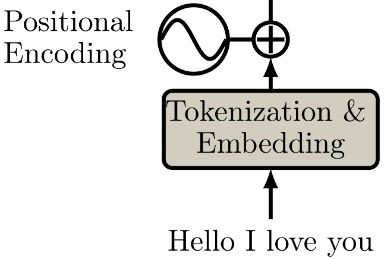
Figura 82: Representação da camada de positional encoding. Percebe-se que, dada uma sequência, ela é processada através de tokenização e embedding e enviada para uma etapa onde acontece a soma entre uma função sinusoidal e o resultado da camada anterior, gerando uma nova representação semântica para cada uma das palavras.
A função sinusoidal é utilizada para capturar informações relativas às posições das palavras e, com isso, diferenciar semanticamente palavras iguais que possuem sentidos semânticos diferentes. Abaixo, está descrita a equação de positional encoding e será discutida a seguir.
\[ \large{} PE(pos, 2i) = \sin \Big( \frac{pos}{10000 ^{\frac{2i}{d}}} \Big) \]
A equação de positional encoding recebe dois argumentos: \( pos \) e \( i \). O primeiro argumento \( pos \) representa a posição que a palavra que está sendo prestada atenção ocupa. A variável \( d \) é o tamanho do vetor de embedding gerado. O segundo argumento \( i \) representa a \( i \)-ésima posição do vetor de embedding.
\[ \large{} PE(pos, 2i + 1) = \cos \Big( \frac{pos}{10000 ^{\frac{2i}{d}}} \Big) \]
Encoder
Self-Attention
Segundo a definição de Ashish Vaswani et al. [21] do Google Brain, "Self-attention, às vezes chamado de intra-attention, é um mecanismo de atenção relacionado a diferentes posições de uma única sequência que tem como objetivo computar uma representação para a sequência".
Self-attention nos possibilita encontra correlações entre diferentes palavras de entrada indicando a estrutura contextual e sintática da sentença.
Na prática, o transformer possui três representações de attention formadas por matrizes denominadas Queries, Keys e Values resultantes da camada de embedding. Essa representação é chamada de Multi-head attention (Figura 83).
Figura 83: Representação de multi-head attention em um transformer. Os símbolos Q, K e V representam, respectivamente as matrizes Queries, Keys e Values.
O princípio básico da criação dessa camada é o descobrimento de relações semânticas nas sentenças. Após a camada de embedding, os vetores expressam a relação entre cada uma das palavras e, a partir desse contexto, a camada de multi-head attention tem como objetivo relacionar a palavra que estamos buscando (Q) com as palavras que possam estar relacionadas com ela (K) e, por fim, influenciar a decisão de acordo com a palavra que gostaríamos que fosse retornada (V).
Essas matrizes, inicialmente, são todas iguais quando passadas como entrada para a linear layer (por isso o nome self-attention). Essa linear layer, tem como objetivo diferenciar cada uma dessas três matrizes Q, K e V multiplicando cada uma delas por três matrizes de pesos da distintos \( W _Q , W _K , W _V \), um para cada uma das linear layers.
Para comparar a palavra que estamos buscando Q com os seus possíveis relacionamentos K, reali- zamos uma operação vetorial que calcula o cosseno do ângulo entre essas palavras. Esse ângulo, como vimos na Vetores de palavras (word embeddings) representa o quão relacionadas semanticamente essas palavras estão. Genericamente, o cálculo do cosseno entre dois vetores se dá por
\[ \large{} \cos (A,B) = \frac{A \cdot B}{|A| |B|} \]
Com isso em mente, a primeira tarefa que devemos realizar é encontrar os relacionamentos entre as matrizes Q e K. Para isso realizamos o produto entre essas matrizes (numerador da equação acima) a fim de gerar um filtro de atenção e dividimos pela raiz quadrada tamanho da sentença \( \sqrt{d _k} \) (denominador da equação acima). Por fim, os resultados dessa matriz é passado para uma camada de ativação softmax (Seção Camada de ativação: Hyperbolic tangent) a fim de gerar valores de probabilidade dos relacionamentos entre as palavras. Essas operações irão gerar um filtro de atenção que irá prestar atenção em uma parte específica da sentença baseando-se no relacionamento entre cada uma das palavras.
Para facilitar a compreensão, podemos fazer um paralelo com a atuação de um filtro de atenção sobre uma imagem. O que acontece, neste caso é que ignoramos todos os pixels da imagem original que não interferem no resultado que desejamos alcançar. A Figura 84 abaixo, representa a aplicação do filtro de atenção gerado sobre uma imagem original. O resultado dessa aplicação é uma imagem em que somente o que realmente interessa está aparecendo.
Figura 84: Exemplificação da aplicação de um filtro de atenção sobre os valores dos pixels de uma imagem.
Nesse sentido, de acordo com a imagem acima, attention filter é o filtro gerado através das multi- plicações de matrizes, escalonamento e softmax realizadas com as matrizes Q e V e original image é a entrada do mecanismo de self-attention, ou seja, a matriz V. Portanto, para a gerar a imagem filtrada, realizamos, basicamente, uma multiplicação entre o filtro de atenção gerado pelas matrizes Q e K e o conteúdo de entrada V.
Com isso, temos, finalmente, a equação desse mecanismo de self-attention, descrita abaixo.
\[ \large{} Attention (Q,K,V) = softmax \Big( \frac{QK ^T}{\sqrt{d _k}} \Big) V \]
Multi-head attention e geração da saída
Na seção anterior, definimos apenas uma das cabeças do mecanismo de multi-head attention. Agora, precisamos gerar a saída para as outras cabeças.
Essas outras cabeças são necessárias para focar em outros elementos da sentença, ou, no caso do exemplo, em outros elementos da imagem.

Figura 85: Exemplificação do mecanismo de multi-head attention com os filtros aplicados em diferentes na mesma imagem, porém, focando em diferentes elementos.
Definimos o mecanismo de multi-head attention da seguinte forma:
\[ \large{} MultiHead (Q,K,V) = Concat(head _1 , \dots , head _h) W ^O \]
onde \( W ^O \) são os pesos da linear layer de saída e \( head _i = Attention (QW _i ^Q , KW _i ^K , VW _i ^V) \).
No final da camada de multi-head attention concatenamos essas três matrizes geradas com o filtro aplicado. Depois, através de conecções residuais (residual skip connections [8]), normalizamos a matriz de saída através do método de layer normalization (LN) [3] e geramos o saída através de uma linear layer. Na Figura 86 a seguir, podemos visualizar a estrutura de um encoder de um transformer.

Figura 86: Representação da estrutura de um encoder de um transformer.
Por fim, para gerar o resultado da saída do modelo, devemos passar esses dados gerados na camada de encoding para a camada de decoding.
Decoder
O decoder consiste nos mesmos componentes do encoder com exceção de dois. Como visto anteriormente:
-
A sequência de saída é computada da mesma forma através de embedding e positional encoding
-
Esses vetores são passados para o primeiro bloco de decoder
Cada bloco de decoder contém as seguintes estruturas:
-
Uma camada de Mask Multi-head Attention
-
Uma camada de normalização juntamente com uma conexão residual
-
Uma nova camada de multi-head attention conhecida como Encoder-Decoder attention
-
Uma nova camada de normalização seguida por conexões residuais
-
Uma linear layer com uma terceira conexão residual
Assim, a estrutura do decoder está representada a seguir.
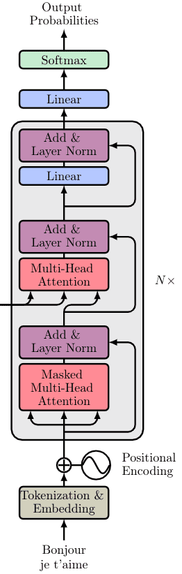
Figura 87: Representação da estrutura de um decoder de um transformer.
Na saída, "Output Probabilities" representa a probabilidade do próximo token da sequência.
Nas seções seguintes, serão detalhadas as subestruturas do decoder.
Masked Multi-head attention
Como o nosso objetivo, neste caso, é prever a próxima palavra da sequência, a camada de masked multi-head attention tem como objetivo ”ensinar” o decoder a prever a melhor palavra a ser retornada. Para isso, atualizamos os valores da matriz de atenção de forma que o modelo preste atenção apenas nas palavras que foram vistas anteriormente a fim de gerar a melhor que se relacione semanticamente com elas. Em outras palavras:
\[ \large{} MaskedAttention (Q,K,V) = softmax \Big( \frac{QK ^T + M}{\sqrt{d _k}} \Big) V \]
onde a matriz M é uma matriz de zeros e \( - \infty \).
Os zeros irão se tornar os valores do produto \( QK ^T \) e os \( - \infty \) irão se tornar zero. Esse tipo de máscara evita que o modelo preste atenção nas palavras futuras da sentença, focando nas palavras anteriores, que é o que realmente interessa.
Encoder-Decoder attention
Nesta etapa, a matriz gerada pela camada de encoding é passada como entrada para um mecanismo de multi-head attention juntamente com a matriz gerada pelo bloco masked multi-head attention.
A intuição a respeito dessa camada é que essa camada combina a sentença de entrada e saída, em outras palavras, ela irá ser treinada para associar a sentença de entrada com a sentença de saída correspondente.
Modelos generativos (Generative models)
Visão geral
Tanto o mundo real quanto o mundo digital é composto por uma quantidade enorme de informações e tudo isso está disponível de forma acessível. Todavia, é um problema desenvolver modelos e algoritmos que possam analisar e entender essa quantidade absurda de dados.
Nesse sentido, os modelos generativos são uma das abordagens mais promissoras no subconjunto de unsupervised learning. Para treinar esse tipo de modelo, coletamos uma grande quantidade de dados de algum domínio (e.g. imagens, frases, sons, etc.) que chamaremos de \( p _{data}(x) \) e, então, treinamos um modelo para gerar dados semelhantes aos de entrada, ou seja, geraremos \( p _{model}(x) \) tal que é semelhante a \( p _{data}(x) \).
A principal ideia é que as redes neurais que usamos como modelos generativos têm um número de parâmetros significativamente menor do que a quantidade de dados em que os treinamos, de modo que os modelos são forçados a descobrir e internalizar com eficiência a essência dos dados para gerá-los.
Aplicações
Com modelos generativos podemos criar amostras extremamente realistas como por exemplo modelos de arte, imagens, tarefas como super-resolution e colorização.
Figura 88: Exemplos de modelos generativos. Na primeira imagem estão representados modelos de arte gerados a partir de ambientes. Na segunda imagem estão representadas imagens em alta resolução geradas a partir de identificação de rostos. Na terceira imagem estão representados exemplos de colorização de imagens a partir de uma ”croqui” e imagens de treino.
Além disso, modelos generativos podem ser aplicados em outras áreas de unsupervised learning, como por exemplo simulações e planejamentos usando reinforcement learning.
Com isso, temos três formas de modelarmos esse tipo de distribuição de modelos generativos: através de Auto-regressive Models, Auto-encoders e GANs. Iremos discutir, separadamente, nas seções seguintes modelos como PixelRNN, PixelCNN, Variational Autoencoder e GANs.
Auto Regressive Models
Antes mesmo de definirmos Generative Adversarial Networks (GANs) é importante mencionar que a principal diferença entre uma GAN e Auto-regressive models é que uma GAN aprende uma distribui- ção implícita dos dados, enquanto o último aprende uma distribuição explícita governada por uma estrutura de modelo imposta.
As principais vantagens da utilização de Auto-regressive models estão listadas a seguir:
-
Fornece uma maneira de calcular a probabilidade: esses modelos tem a vantagem de retornar probabilidades explícitas das densidades, tornando-o simples de aplicar em domínios como compressão e planejamento e explorações baseadas em probabilidade.
-
O treino é estável: existe um algoritmo estável que treina um Auto-regressive models
-
Funciona tanto para dados discretos quanto contínuos
Um dos problemas mais conhecidos de unsupervised learning é o de modelar a distribuição de imagens naturais. Para resolver esse problema, precisamos de um modelo tratável e escalonável. PixelRNN e PixelCNN fazem parte da classe de Auto-regressive models que atendem essas condições.
Esses tipos de modelos são, preferencialmente usados no preenchimento de imagens. A razão para isso é porque eles têm um desempenhos melhor do que outros modelos generativos nesse tipo de problema.
PixelRNN
Através da utilização de modelos probabilísticos de densidade, como por exemplo Distribuição Normal, consegue gerar imagens começando através de um canto e calculando qual é o valor do próximo pixel que mais faz sentido de acordo com os pixels previamente gerados e com um valor de probabilidade.
Para processar a relação entre geração do pixel e valor de probabilidade, utilizamos de modelos que funcionam bem com sequências, como por exemplo, Redes Neurais recorrentes (RNNs).

Figura 89: Geração de pixels utilizando PixelRNN. A partir de um pixel do canto da imagem, o modelo começa a gerar, sequencialmente outros pixels baseados nos valores de probabilidade e nos valores dos pixels previamente gerados.
A rede neural "varre" a imagem gerando, linha a linha e pixel a pixel a cada período de tempo, o que pode ser, muitas vezes, muito demorado. Os valores dos pixels são gerados baseando-se nos valores de probabilidade gerados através de uma distribuição que é escrita a partir do produto condicional das distribuições e os valores gerados são compartilhados através da imagem.
O objetivo, então é calcular a probabilidade \( p(x) \) para cada pixel da imagem de tamanho \( nxn \). Assim, a probabilidade pode ser escrita da seguinte forma:
\[ \large{} p(x) = \prod _{i=1} ^{n ^2} p(x _i|x _1, \dots , x _{i-1}) \]
A equação acima é a probabilidade do \( i \)-ésimo pixel dada a probabilidade de todos os pixels pre- viamente gerados. Essa geração se dá linha a linha e pixel por pixel. Além disso, cada pixel \( x _i \) é juntamente determinado por todos os três canais de cores RGB. Assim, a probabilidade condicional do \( i \)-ésimo pixel se torna:
\[ \large{} p(x _{i,R}|X _{<i}) p (x _{i,G}|X _{<i}, x _{i,R}) p (x _{i,B}|X _{<i}, x _{i,R}, x _{i,G}) \]
Portanto, cada cor é condicionada sobre as outras cores e os pixels previamente gerados.
Contudo, um dos principais problemas desse tipo de implementação é a velocidade. Como geramos cada pixel sequencialmente, isso pode ser extremamente lento de acordo com a complexidade da saída. Para resolver esse problema de otimização, podemos utilizar um método similar e paralelizável utilizando ConvNets, chamado PixelCNN.
PixelCNN
Como vimos, a utilização do método PixelRNN, pode, muitas vezes, ser mais lento que o desejável, para isso, podemos adicionar camadas de convolução no nosso modelo. PixelCNN usa esse tipo de camada com o objetivo de paralelizar as operações de geração de pixel, preservando a resolução espacial da imagem gerada.
Da mesma forma que PixelRNN, PixelCNN gera a imagem a partir de um canto da imagem, porém, agora, utilizando de uma ConvNet para paralelizar esse processo.

Figura 90: Geração de uma imagem através do método PixelCNN. Podemos perceber que os valores dos pixels são gerados sequencialmente através de uma camada de convolução. Os pixels previamente gerados estão representados em cinza e os valores de probabilidade são calculados paralelamente através da convolução.
Como a geração dos pixels continua sequencial, isso pode ser um ponto negativo que, muitas vezes, pode tornar a geração da imagem, ainda muito lenta. Para isso, nas próximas seções iremos discutir métodos mais eficientes para realizar esse procedimento.
Variational Autoencoders (VAE)
Como vimos até agora, PixelCNNs definem a função de densidade travável e otimiza a probabilidade de dados de treinamento. De outra forma, VAEs definem funções de probabilidade intratáveis de acordo com um valor \( z \) que é chamado de espaço latente e será definido posteriormente.
Dessa forma, um VAE é um Autoencoder cuja distribuição de codificações é regularizada durante o treinamento, a fim de garantir que seu espaço latente tenha boas propriedade, o que nos permite gerar novos dados
Em geral, Autoencoders são redes neurais para redução de dimensionalidade. A estrutura básica de um Autoencoder está representada na Figura 91 Essas redes neurais tem como objetivo aprender o melhor esquema de codificação-decodificação usando um processo de otimização iterativo.
Figura 91: Através de dados de entrada x treinamos o nosso modelo de forma que possamos reconstruir os dados originais através do Autoencoder. Dessa forma, z são os dados de entrada codificados através de algoritmos de redução de dimensionalidade e x̂ é o conjunto de dados decodificado a partir de z.
Assim, a arquitetura geral de um Autoencoder cria um gargalo de dados que garante que apenas a parte estruturada principal da informação possa ser reconstruída. Os codificadores e decodificadores são transformações lineares simples que podem ser expressas como matrizes, da mesma forma que o algoritmo PCA funciona e no final, adicionamos não-linearidade.
Autoencoders são, portanto, arquiteturas de codificador-decodificador que podem ser treinadas uti- lizando um algoritmo de otimização como, por exemplo, gradiente descendente.
Finalmente, podemos definir um VAE. VAE é uma arquitetura composta por um codificador e um decodificador treinada para minimizar o erro de reconstrução entre os dados decodificados e os dados iniciais. Assim, podemos treinar o modelo da seguinte forma:
-
A entrada é codificada como distribuição do espaço latente \( z \)
-
Um ponto do espaço latente é amostrado a partir dessa distribuição
-
O ponto amostrado é decodificado e o erro de reconstrução pode ser calculado
-
Backpropagation utilizando o erro de reconstrução
Na Figura 92 a seguir, está esquematizado o processo de treino do modelo, sabendo que \( x \) representa os dados de entrada, \( z \) o espaço latente e \( d(z) \) a reconstrução da entrada.

Figura 92
Com isso, a função custo que é minimizada ao treinar um VAE é composta por um ”termo de reconstrução” que torna o esquema de codificação-decodificação mais eficiente e um ”termo de re- gularização” que regulariza a organização do espaço latente, tornando-a mais próxima da Distribuição Normal Padrão. Esse termo é expresso como a divergência de Kullback-Leibler, que sua definição não faz parte do escopo deste curso.
A seguir, na Figura 93 está esquematizada uma estrutura básica de um VAE com a definição da sua função custo, que são dependentes dos valores de entrada \( x \), da distribuição do espaço latente \( N(\mu _x , \sigma _x ^2) \) e da aproximação gerada a partir do espaço latente \( x̂ = d(z) \).
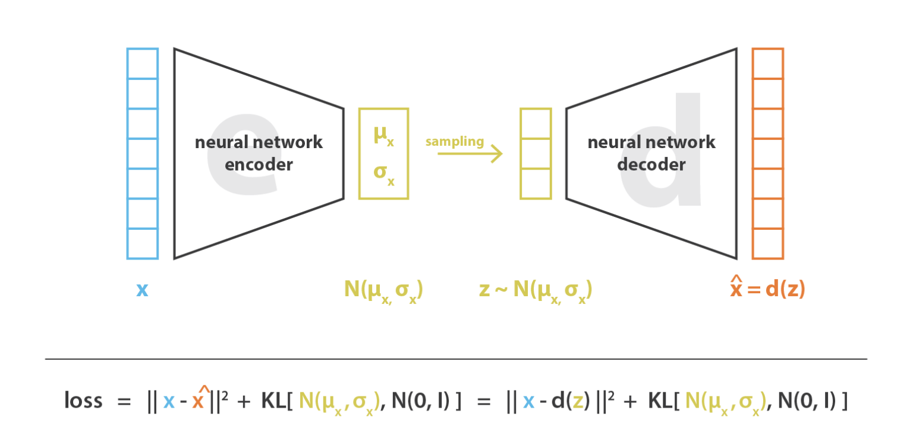
Figura 93
Portanto, através de VAEs podemos utilizar amostras usadas no espaço latente para gerar dados similares através do decodificador. A figura abaixo mostra os dados gerados a partir de uma rede decodificadora de um VAE treinada a partir da base de dados MNIST. Além disso, um dos pontos negativos da utilização de VAEs é que as amostras geradas são embaçadas e de baixa qualidade. Portanto para a melhoria da qualidade utilizamos GANs, que serão descritas a seguir.
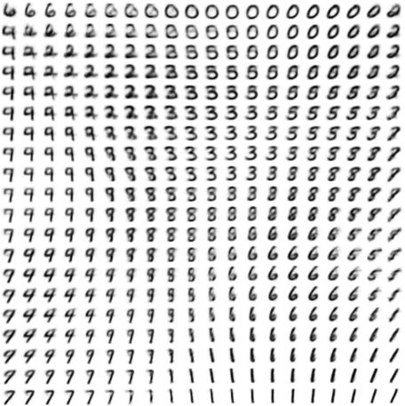
Figura 94: Nesta imagem estão representados os dígitos gerados por uma rede VAE através do decodificador. A imagem tem esse padrão devido a forma bidimensional da Distribuição Normal. Como se pode perceber, os dígitos distintos estão em diferentes regiões da imagem devido ao espaço latente.
Generative Adversarial Networks (GANs)
Até agora, trabalhamos com funções de densidade de probabilidade explícita, como foram vistas em PixelCNNs e VAEs. No caso das GANs, não trabalhamos com funções explícitas de probabilidade, usamos aproximações probabilísticas baseadas na Teoria Dos Jogos, aprendendo a gerar dados a partir da distribuição de treinamento através do jogo de dois jogadores.
Com GANs, o que desejamos é a partir de uma entrada inicializada aleatoriamente, através de uma rede neural geradora, geramos uma amostra baseada na distribuição de treino, como mostra a Figura 95.

Figura 95
A seguir iremos descrever o processo de treino de GANs.
Treinamento: Jogo de dois jogadores
A forma que iremos treinar e fazer com que o nosso modelo aprenda a geração de dados é através da visualização desse problema como um jogo de dois jogadores. Existem dois jogadores: a rede neural geradora e a rede neural discriminadora.
A rede neural geradora (ou Generator network) tenta enganar o discriminador gerando imagens de aparência real. E a rede neural discriminadora (ou Discriminator network) tenta distinguir imagens reais e falsas. A representação desse ”jogo” mostrada a seguir na Figura 96.

Figura 96: A partir de uma imagem inicializada aleatoriamente z, uma rede neural gerado, representada em verde, gera imagens falsas, porém muito semelhantes às reais e uma rede neural discriminadora, representada em azul, tenta distinguir se as imagens dadas como entrada para essa rede neural são falsas ou reais.
Utilizamos o algoritmo Minimax para realizar o treinamento de uma GAN, cuja função principal está descrita a seguir.
\[ \large{} \underset{\theta _g}{min} \ \underset{\theta _d}{max} \Big[ \mathbb{E} _{x \sim p _{data}} \log \ D _{\theta _d}(x) \ + \mathbb{E} _{z \sim p _z} \log (1 - D _{\theta _d} (G _{\theta _g}(z))) \Big] \]
onde:
\( D _{\theta _d}(x): \) Saída do discriminador para dados reais \( x \)
\( D _{\theta _d} (G _{\theta _g}(z))): \) Saída do discrminador para dados falsos gerados \( G(z) \)
Com essa equação, desejamos maximizar o objetivo do discriminador \( \theta _d \) , de forma que \( D(x) \) é próximo de 1 (imagem real) e \( D(G(z)) \) é próximo de 0 (imagem falsa). E desejamos minimizar o objetivo do gerador \( \theta _g \) de forma que \( D(G(z)) \) é próximo de 1 (discriminador é enganado a pensar que \( G(z) \) é real).
Com isso, utilizamos métodos de maximizar e minimizar os discriminadores e geradores, respectiva- mente. Usamos o método de gradiente ascendente para o discriminador
\[ \large{} \underset{\theta _d}{max} \ \mathbb{E} _{z \sim p _z} \log (1 - D _{\theta _d} (G _{\theta _g}(z))) \]
Com isso, podemos descrever o seguinte algoritmo para o treinamento de GANs:
Algorithm 13 Algoritmo de treino de uma GAN
1: procedure
2: for número de iteração de treino do
3: for \( i=1 \) to \( k \) do
4: Crie amostras minibatch de \( m \) amostras inicializadas aleatoriamente \( \{z ^{(1)}, \dots , z ^{(m)} \} \) a partir de \( p _g (z) \)
5: Crie amostras minibatch de \( m \) exemplos \( \{ x ^{(i)}, \dots , x ^{(m)} \} \) a partir da geração de dados pela distribuição \( p _{data}(x) \)
6: Atualize o discriminador pelo gradiente ascendente
7: \( \nabla _{\theta _d} \frac{1}{m} \sum _{i=1} ^m \Big[ \log D _{\theta _d}(x ^{(i)}) + \log (1 - D _{\theta _d}(G _{\theta _g}(z ^{(i)}))) \Big] \)
8: end for
9: Crie amostras minibatch de \( m \) amostras inicializadas aleatoriamente \( \{z ^{(1)}, \dots , z ^{(m)} \} \) a partir de \( p _g (z) \)
10: Atualize o gerador pelo gradiente ascendente
11: \( \nabla _{\theta _g} \frac{1}{m} \sum _{i=1} ^{m} \log (D _{\theta _d} (G _{\theta _g}(z ^{(i)}))) \)
12: end for
13: end procedure
Após o treinamento, podemos usar a rede neural geradora para gerar novas imagens. Podemos perceber na Figura 97 alguns exemplos de imagens geradas por uma GAN.

Figura 97: Imagens geradas a partir do treinamento de uma GAN. As imagens contornadas em amarelo são imagens do conjunto de treino e, portanto as imagens da mesma linha são as vizinhas mais próximas.
Deep Q-Learning
Como foi visto na Seção Aprendizado por reforço (Reinforcement learning), através do método de Q-learning, atualizamos os valores das políticas do agente maximizando os valores de Q de acordo com o estado futuro do ambiente e da ação tomada, de maneira recursiva, usando a equação de Bellman.
Contudo, apesar do grande poder desse método, de acordo com a complexidade do ambiente, ele pode ser tornar extremamente ineficiente. Para resolver esse problema, usamos um método que engloba Q-learning e redes neurais profundas, chamado Deep Q-learning (DQN).
De maneira geral, ao invés de trabalharmos com uma tabela para atualizar os valores de Q de decisão de ação do agente, utilizamos uma rede neural. Essa rede neural funciona através de uma função de aproximação, chamada de aproximador, denotado por \( Q(s, a; \theta) \), em que \( \theta \) representa os pesos treináveis da rede, para aproximar os valores de Q de forma ótima.
Assim, a equação de Bellman, vista na Seção Q-Learning é utilizada como a função custo, que deve ser minimizada. Em outras palavras, minimizamos a diferença entre a igualdade do valor Q que deve ser atualizado em relação a soma da recompensa com o desconto do máximo valor de Q dos estados futuros. Ou seja,
\[ \large{} Cost = \Big[ Q(s,;\theta) - \Big( r(s,a) + \gamma \ \underset{a}{max} \ Q(s',a;\theta) \Big) \Big] ^2 \]
onde \( Q(s,;\theta) \) é chamado de Q-target, os parâmetros da rede neural.
O treinamento desse tipo de rede neural acontece durante o momento de exploration e exploitation, atualizando os valores de Q já vistos e que serão descobertos futuramente. Para o treino, portanto, selecionamos \( b \) estados já visitados, juntamente com os seus respectivos valores, de maneira aleatória, e usamos esses valores como input e target, respectivamente.
Diferentemente do método de Q-learning tradicional, DQN prevê os \( N \) possíveis valores de Q para um determinado estado. Na Figura 98 abaixo, está representada essa diferença entre os dois métodos.

Figura 98: Representação dos dois métodos de Q-learning. Na figura do topo, a partir de uma determinada ação tomada em um estado de ambiente, gera-se um valor de Q referente a este par estado-ação. Na figura de baixo, dado um estado, a rede neural calcula todos os valores de Q referentes a todas as ações possíveis a serem tomadas, selecionando o melhor valor para aquele estado.
Com isso, podemos listar as etapas que envolvem o aprendizado de uma rede neural.
-
Passar como entrada estado atual \( s \) do ambiente para a rede neural. Essa rede neural irá retornar os valores Q de todas as possíveis ações a serem tomadas pelo agente no estado \( s \).
-
Selecionar uma ação usando a política \( \epsilon \)-greedy. Com a probabilidade \( \epsilon \), selecionar uma ação aleatória \( a \) (exploration) e com a probabilidade \( 1 - \epsilon \) escolher a ação que corresponde o valor máximo de Q, tal que \( a = argmax(Q(s,a;\theta)) \)
-
Realizar a ação tomada \( a \) no estado \( s \) e mover para o próximo estado \( s' \) para receber a recompensa.
-
Após, tomamos uma decisão aleatória de transição de estado e calculamos o custo
-
Minimizar o erro da função custo utilizando algum método de otimização, como por exemplo, gradiente descendente
-
A cada \( C \) iterações, copiar os pesos da rede neural atual para uma rede neural target a fim de salvar os pesos
-
Repetir esses passos \( M \) episódios
Com DQN, temos uma ferramenta extremamente forte para resolução de problemas de aprendizado de RL. Agora, com ambientes mais complexos e com mais interações, o agente consegue realizar uma melhor valoração das possibilidades de ações que podem ser tomadas baseadas no retorno da rede neural. Atualmente, jogos de Atari, Go e StarCraft já atingiram níveis humanos de comportamento utilizando DQN e outros métodos de IA.
Busca de Monte Carlo
O método de Busca em Árvore de Monte Carlo (do inglês, Monte Carlo Tree Search (MCTS)) é extremamente poderoso para diversas aplicações que envolvem IA e teoria dos jogos. Uma das principais aplicações desse método na literatura foi, em 2016, no artigo publicado pela DeepMind 19, no qual atingem níveis humanos no jogo Go utilizando técnicas de DQN, vistas na Seção Deep Q-Learning e MCTS.
Figura 99: Representação de uma árvore de Monte Carlo gerada a partir de um estado de jogo do jogo Go. Cada nodo da árvore representa uma possibilidade de jogada baseada no estado de jogo imediatamente anterior.
O principal objetivo de MCTS é valorar estados intermediários do ambiente de forma que não seja necessário atingir estados finais para encontrar a melhor possibilidade de recompensa.
Para introduzir esse método, será definido, primeiramente um método uninformed search, que é mais simples e ineficiente, para depois descrever o método MCTS.
Uninformed Search
É um algoritmo de busca genérica o qual percorre todos os nodos da árvore a fim de valorar os estados intermediários.
Para realizar essa valoração, temos buscas em profundidade e em largura, como pode ser visto na Figura 100 abaixo.
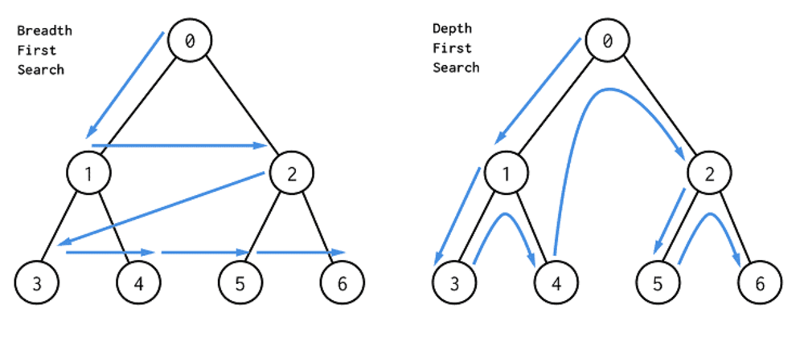
Figura 100: Representação das buscas em profundidade e largura. Percebe-se que todos os nodos da árvore são acessados durante a busca.
Percebe-se que uma árvore com \( b \) ramos por nível e profundidade \( d \) teria \( b ^d \) número de nós folha. Por exemplo, no jogo Go, cujo número de ramos por nível é 250, no nível 5 da árvore, teríamos \( 250 ^5 = 976.562.500.000 \) possibilidades de estados.
O maior problema desse tipo de busca é que, quanto maior a complexidade do problema, maior a profundidade e largura da árvore, o que torna o método extremamente ineficiente.
Monte Carlo Tree Search
MCTS é um método de busca baseado no método de uninformed search, porém, mais inteligente. MCTS usa simulação de Monte Carlo [17] para acumular estimativas de valor para orientar em qual direção ou trajetória da árvore devemos seguir para maximizar a recompensa na árvore de busca. Em outras palavras, MCTS presta mais atenção em nodos que são mais promissores, fazendo não seja necessário acessar todos os nodos da árvore para valorar um estado.
Basicamente, esse método consiste em quatro etapas bem separadas: seleção, expansão, simulação e backup.
No passo de simulação, utilizamos tree policy para construir um caminho da raiz até o nodo folha mais promissor. Tree policy é utilizada para selecionar a melhor ação a partir de um estado. No AlphaGo, o cálculo dessa política se dá através do valor UCB, que calcula o grau de confiança de uma determinada ação ser a mais promissora. Abaixo está representado o cálculo desse valor.
\[ \large{} UCB (node _i) = V _i + 2 \sqrt{ \frac{\ln N}{n _i} } \]
onde, \( V _i \) é a média de recompensa de todos os valores abaixo de \( node _i \). \( N \) é o número de vezes que o pai de \( node _i \) foi visitado e \( n _i \) é o número de vezes que \( node _i \) foi visitado.
Com isso, percebe-se que quanto mais um nodo \( i \) é visitado, menor é o valor UCB, diminuindo a probabilidade desse nodo ser selecionado novamente. Assim, usa-se técnicas de exploration e exploitation, vistas na Seção Aprendizado por reforço (Reinforcement learning) para a valoração dos estados através do valor UCB.
Na etapa de expansão, apenas selecionamos um nodo de forma aleatória para ser explorado.
Na etapa de simulação, simulamos uma ou mais jogadas para verificar a recompensa acumulada de cada ação. Por exemplo, para cada simulação teríamos valores acumulados referentes à vitória, derrota ou empate.
Na etapa de backup usamos os valores de recompensa acumulados das ações tomadas e estados atingidos na etapa de simulação, propagando esses valores em direção ao nodo raiz a fim de possibilitar a realização da melhor transição de estado.
A Figura 101 abaixo exemplifica de forma conjunta cada uma dessas etapas.

Figura 101: Exemplificação das etapas de seleção, expansão, simulação e backup
Com isso, percebe-se que MCTS é uma ferramenta extremamente poderosa, especialmente quando utilizada juntamente com métodos como DQN. MCTS valora as recompensas de cada estado sem necessariamente percorrer toda a árvore para decidir a melhor jogada e DQN computa o melhor valor Q de um determinado estado atingido por determinada ação.
Referências
[1] Vinod Nair Alex Krizhevsky e Geoffrey Hinton. THE CIFAR-10 DATABASE. 2012.
[2] Kian Katanforoosh Andrew Ng. Stanford University CS230 Deep Learning.
[3] Jimmy Lei Ba, Jamie Ryan Kiros e Geoffrey E. Hinton. Layer Normalization. 2016. [stat.ML].
[4] Richard Bellman. Dynamic Programming. Dover Publications, 1957. isbn: 9780486428093.
[5] Emma Brunskill. Stanford University CS234 Reinforcement Learning.
[8] Kaiming He et al. Deep Residual Learning for Image Recognition. 2015 [cs.CV]
[9] Yann LeCun. THE MNIST DATABASE of handwritten digits. 1998
[10] Shane Legg e Marcus Hutter. Universal Intelligence: A Definition of Machine Intelligence. 2007.
[11] DeepMind & University College London. Reinforcement learning course 2020.
[12] Tom M. Mitchell. Machine Learning. New York: McGraw-Hill, 1997. isbn: 978-0-07-042807-2.
[13] Andrew Ng. Stanford University CS229 Machine Learning.
[14] Andrew Ng. Stanford University Machine Learning.
[15] Alec Radford et al. “Language Models are Unsupervised Multitask Learners”. Em: (2019).
[16] Sebastian Raschka. Model Evaluation, Model Selection, and Algorithm Selection in Machine Learning. 2020. [cs.LG].
[21] Ashish Vaswani et al. Attention Is All You Need. 2017. [cs.CL].
Contatos
Caso queira mandar um feedback sobre o curso, uma sugestão de incrementação, ou reportar algum erro, você pode entrar em contato conosco por email (pet@inf.ufrgs.br).
Redes sociais
LinkedIn: https://www.linkedin.com/company/petcompufrgs
Facebook: https://www.facebook.com/PETCompUFRGS
Instagram: https://www.instagram.com/petcompufrgs